Fiddle is a chord songbook for musicians and bands: a song library, transposition, capo, chord diagrams, a metronome, a tuner, setlists, and a live session for keeping a band in sync on stage. Everything runs on your phone — there is no account, no internet feature, and nothing you do here is ever sent anywhere except to your own band members' phones on the same Wi-Fi network, and only while a live session is open.
Getting started
The first time you open Fiddle, a short tutorial walks you through the basics: your songs, chords at a touch, playlists and Perform mode, and Band live. Use Next and Back to move between steps, or tap Skip at any time.
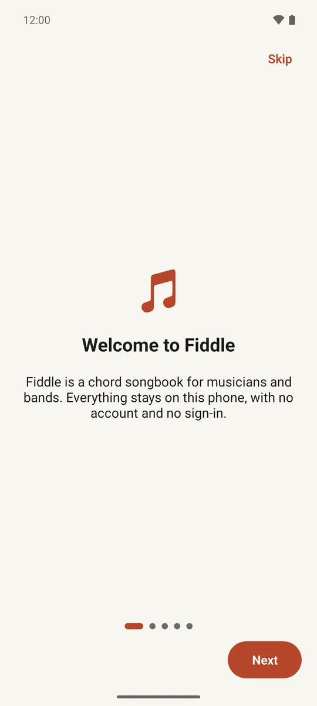
The tutorial opens automatically the first time you start Fiddle.
You can watch it again later from Settings → Show the tutorial again.
Fiddle has five tabs along the bottom: Songs, Playlists, Import & export, Metronome and Tuner.
Your song library
The Songs tab is your library: every song you have added, sorted and searchable.
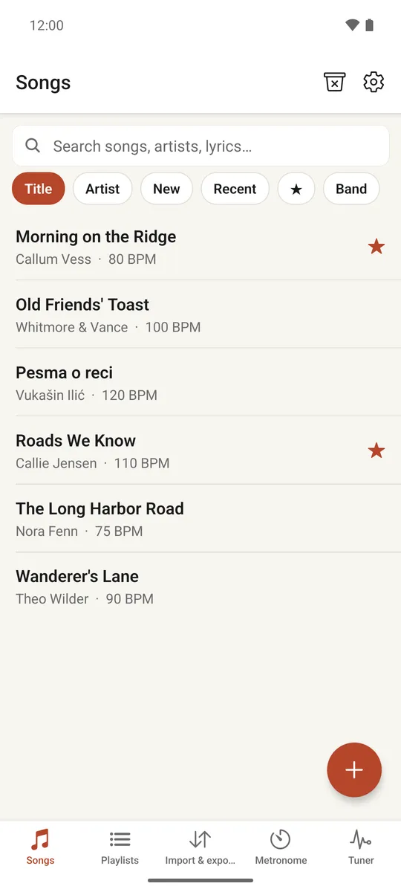
The library tab: search, sort and filter your songs.
Type in the search box (Search songs, artists, lyrics…) to filter by title, artist or lyrics.
Sort the list by Title, Artist, New (newest first) or Recent (most recently opened).
Tap the star chip to show only your favorite songs.
If you belong to a band, a Band chip lets you narrow the list to one band's songs.
Tap the trash-bin icon at the top to see songs you have deleted, or the gear icon to open settings. Tap the + button to add a new song.
Adding songs
There are two ways to get a song into Fiddle: type or paste it in yourself, or import it from files you already have.
Typing a song
Tap + on the library tab to open the New song screen. Fill in the title and artist, then write the song body with the chords on the line directly above the lyrics they belong to, lined up with spaces:
G D
Morning light, a gentle sound
G Em
That leads a wanderer back home
Fiddle reads a line as chords when it is made up mostly of chord names and spacing; everything else is read as lyrics. You can paste in a whole song at once, or type it line by line.
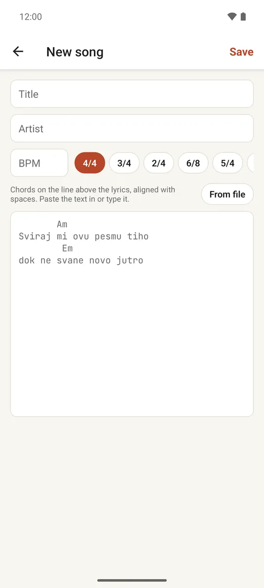
Writing a song by hand: chords go on their own line, above the words.
If you already have the song as a plain text or ChordPro file, tap From file to load its contents straight into the editor instead of typing it out — this only works up to about 200 KB of text; for a bigger file, use Import & export instead.
Importing from files
On the Import & export tab, tap Choose files to choose one or more files from your phone. You can pick several at once — a whole songbook in a single Word file works too, and Fiddle splits it into separate songs automatically where it can tell where one song ends and the next begins.
Fiddle reads:
Word documents (.docx)
Excel spreadsheets (.xlsx) — Fiddle needs a header row with a column for the song title; the usual column names in English or Serbian are recognized.
CSV and TSV tables — same header-row rule as spreadsheets.
Plain text files (.txt) saved as UTF-8, or in the Windows Central-European (1250) or Cyrillic (1251) encodings, which Fiddle detects automatically. Files in other, older encodings should be re-saved as UTF-8 first.
ChordPro files (.cho)
What Fiddle cannot read, and why:
Older Word/Excel formats, .doc and .xls — open the file in Word or Excel and save it as .docx/.xlsx, then import again.
PDF files are not yet supported for import.
Any single file over 20 MB, or a batch that would add more than 2000 songs at once.
After picking files, a list on the same screen shows each file's progress and how many songs it produced. Tap the × next to a file to drop it from the import before continuing.
Reviewing before you save
Once your files are processed, tap the button at the bottom to continue to Review before saving. Here you see every song Fiddle found, ready to check over:
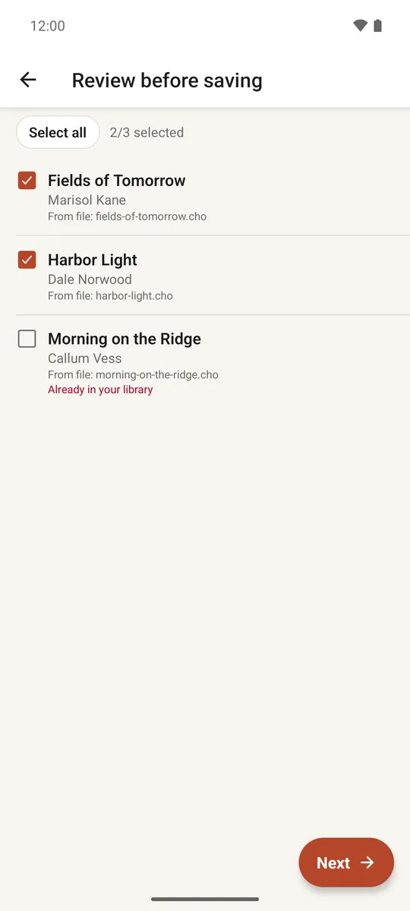
Review each imported song before it is saved to your library.
Untick any song you don't want to keep, or use Select all / Clear all.
Tap a song to fix its title or artist, or to correct the B/H notation before saving.
If a tempo was detected in the file, chips let you accept it, disable it, or fix an obviously wrong reading (half or double the tempo is a common mistake in old songbooks).
Warnings appear in red — for example, a song already in your library, or a duplicate within the same import.
When you are happy with the selection, continue to the destination screen.
Choosing a destination
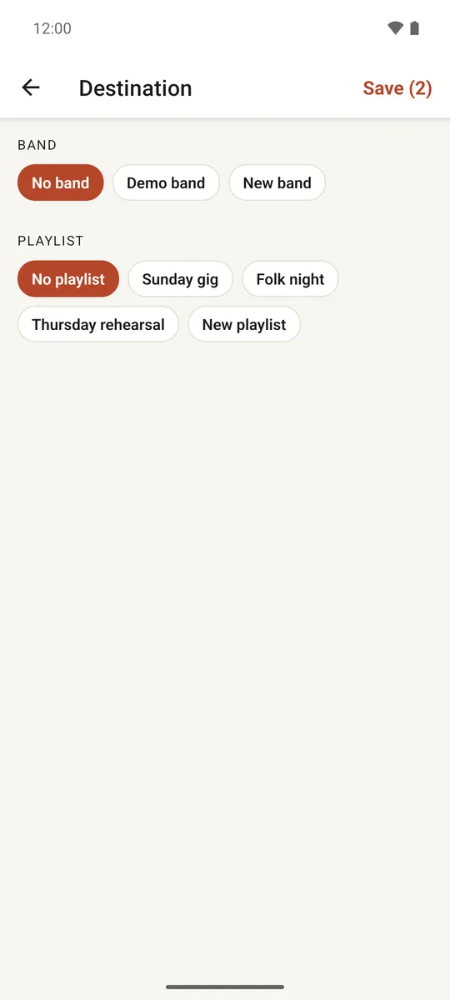
Choose which band and playlist the imported songs belong to, if any.
Here you decide, once, for the whole batch: which Band the songs belong to (or none), and which Playlist to add them to (or none) — an existing, unlocked one, or a brand new one, optionally with a performance date. A playlist locked for a show is not offered here. Tap Save to finish.
Viewing a song
Tap any song in the library to open it. This is where you play from.
The song screen: chords above the lyrics, with key, capo and text-size controls.
Transposing and the capo
At the top of the song, the Key stepper changes the song's key one semitone at a time, and the Capo stepper sets which fret your capo is on. Long-press either one to reset it. The Text stepper changes the text size.
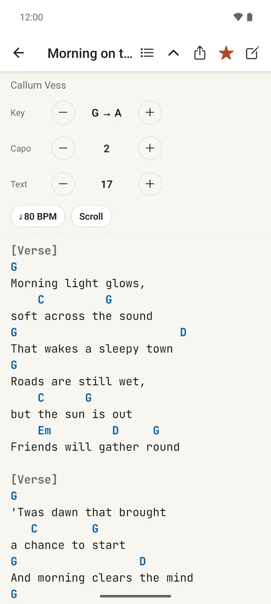
Key, capo and text size, each with a −/+ stepper.
When you change the key, Fiddle can suggest a capo fret that lets you play the same shapes you already know — look for the tip line under the header. Tapping it applies the suggested capo automatically.
The chord card
Tap any chord in the text to see how to play it: a small card pops up right where you tapped, with a diagram, a play icon so you can hear it, and More. Tap More to expand it into a full sheet, where a labelled Play button plays it, the chord's notes are listed under Notes:, and, if more than one way to play it is known, Previous voicing / Next voicing arrows with a counter let you flip through them. If the capo is on, the full sheet also shows what the chord actually sounds like once the capo is accounted for.
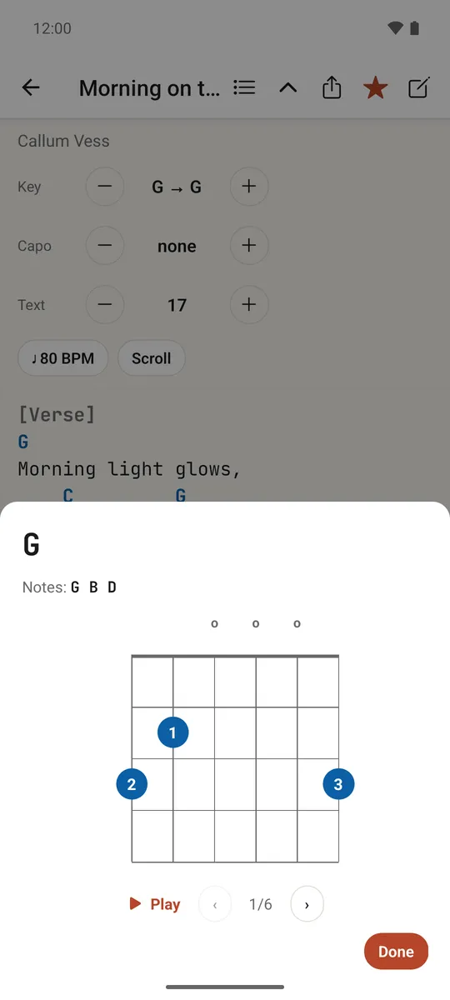
Tap a chord for its diagram, alternate voicings, and a Play button.
Fixing a line
Fiddle guesses whether each line is lyrics, chords, tablature or a section heading. If it guesses wrong — for example on an unusual layout — long-press that line and choose This line is…: Lyrics, Chords, Tablature or Section heading. The correction is saved with the song — but editing the song's text later resets these corrections, since they are tied to specific lines.
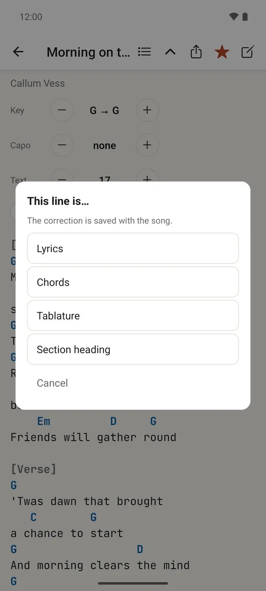
Long-press a line to correct how it is read.
If a song contains a B chord, a chip lets you switch how it is read: B = B♭ (German) or B = B (English).
Tempo, tap tempo and the inline metronome
Tap the tempo chip — it shows Tap tempo if the song has no saved tempo yet, or the current beats-per-minute if it does — to open a compact metronome bar right on the song screen. Tap along with the music (Tap) to set the tempo by tapping; Fiddle remembers it with the song. Tap the round play/stop button to hear the click without leaving the song; −1/+1 nudge the tempo by one beat per minute, Full metronome opens the full metronome tab, and once a tempo is set, Clear tempo removes it again.
Auto-scroll
The Scroll chip cycles through a few scroll speeds so the text moves on its own while you play, hands free.
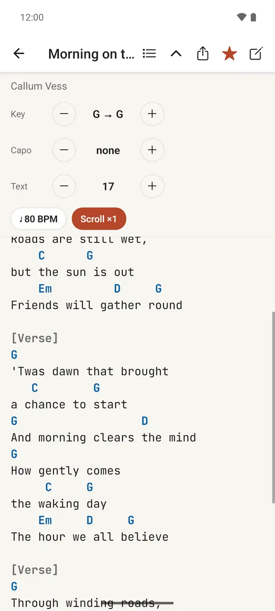
Auto-scroll moves the text for you at a chosen speed.
Favorites and sharing
Tap the star icon in the header to favorite or unfavorite a song. Tap the share icon to send it out as Lyrics with chords, a ChordPro file, or a PDF — in the key and capo you currently see on screen. (Exporting the same song from the Import & export tab instead uses its saved key and capo, not whatever you last had it transposed to.) The same menu has a Report content button, for reporting copyrighted content or a problem with the app.
Landscape and the playlist panel
Turn your phone sideways, or use a tablet, and — as long as you have at least one playlist — a side panel appears next to the text showing a setlist (the one you opened the song from, or the last one you used), so you can jump to the next song without leaving the chord sheet. The list icon in the header hides or shows it; Song display → Playlist panel on wide screens turns it off for good.
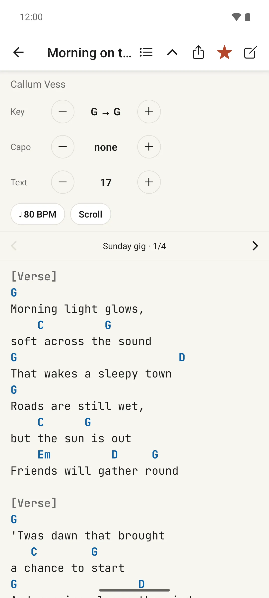
In landscape, wide screens show the setlist alongside the song.
Editing and deleting songs
Tap the pencil icon on a song to open Edit song, the same screen used for typing a new song. Change the title, artist, tempo, time signature or the body text, then save.
To delete a song, open it for editing and tap Delete song. Deleted songs are not gone right away — they move to the Trash, reachable from the trash-bin icon on the library tab.
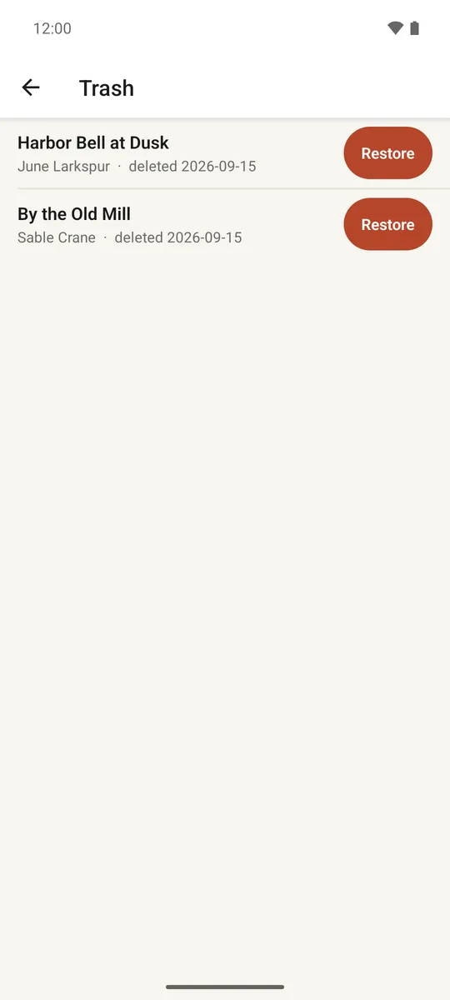
Deleted songs wait in the trash until you restore or permanently lose them.
From the trash you can tap Restore to bring a song back. A song stays in the trash — and in any library backup you save while it's there — until you uninstall Fiddle or clear its storage in your phone's settings, either of which erases everything permanently.
Playlists and Perform mode
A playlist is a setlist: an ordered list of songs for a rehearsal, a gig or an event. Open the Playlists tab to see all of yours.
The playlists tab: every setlist you've made.
Tap the + button, give the setlist a name in the New playlist dialog and tap Create, then + Add songs to add songs from your library.
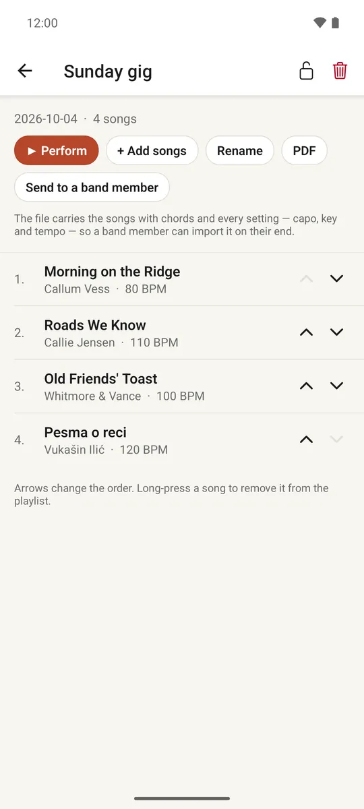
Inside a playlist: reorder songs, or tap one to open it.
Inside a playlist you can:
Reorder songs with the arrow buttons next to each row, or long-press a song to remove it.
Rename the playlist. (The performance date is set when you create the playlist, or on the import destination screen.)
Tap the padlock icon in the header before a show to freeze the running order, key, capo and tempo for every song in it — nobody can accidentally reorder or change a song mid-set. This does not stop you from editing a song's own lyrics or chords, only the setlist and its per-show settings. Tap the padlock again to unlock it.
Tap Send to a band member to send the whole setlist — songs, chords, key, capo and tempo included — to a band member so they can import it on their own phone.
Tap ▶ Perform to start Perform mode: a full-screen view built for the stage, with large text, its own auto-scroll and text-size controls, and previous/next arrow buttons to move through the setlist. A song opened from a locked playlist keeps that playlist's frozen key, capo and tempo while you perform.
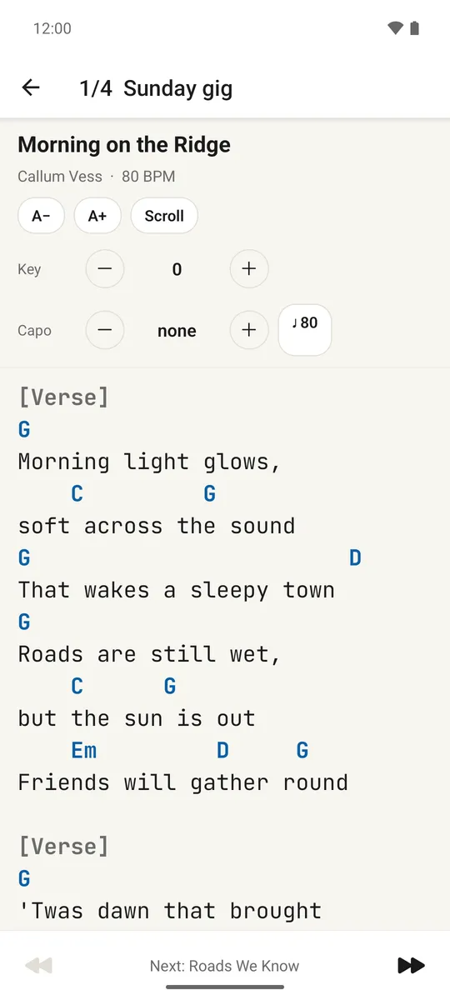
Perform mode: one song after another, built for the stage.
Bands
A band groups a set of members and a shared repertoire of songs and playlists. Open the Playlists tab and look under Bands, or tap the + button, name it in the New band dialog and tap Create to create one.
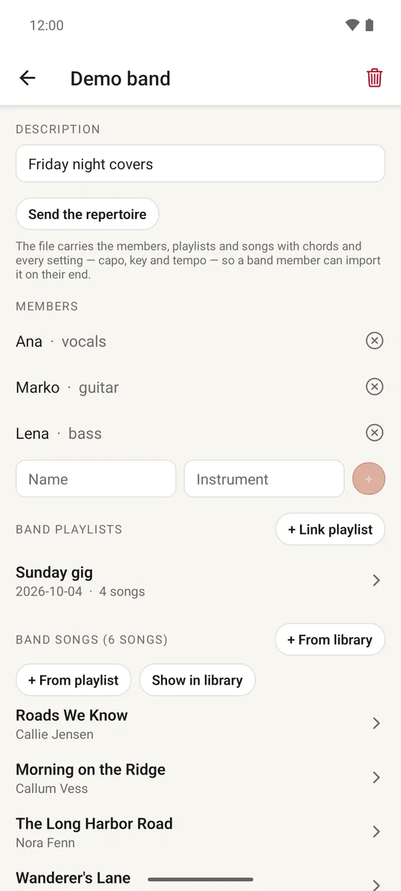
A band: members, instruments, and a shared song repertoire.
On a band's page you can:
Add Members with a name and Instrument.
Add songs to the repertoire with + From library, or pull in every song from an existing playlist.
+ Link playlist to attach one of your playlists to the band; its songs join the band's repertoire too.
Tap Send the repertoire to send the whole repertoire — members, playlists and songs with every setting — to another member's phone.
Live session
Band live keeps everyone's phone on the same song, in time, during a rehearsal or a show — over your own Wi-Fi network, with no account and no internet. Start it from the Playlists tab.
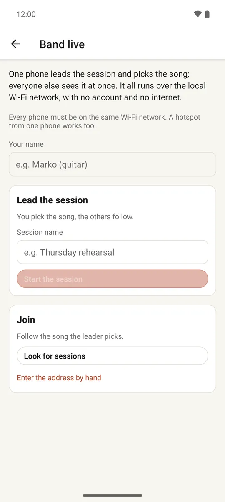
Band live: one phone leads, the rest follow along in real time.
What it needs: Every phone must be on the same Wi‑Fi network. A hotspot from one phone works too.
Keep Fiddle open on every phone for as long as the session runs — it only works while the app is open, on the same Wi-Fi network, on all phones involved.
Leading a session
Enter your name, then under Lead the session give the session a name and tap Start the session. Whichever song you open is sent to everyone who has joined — including its key, capo and tempo, and, if you opened it from a setlist, the setlist's name and order.
Joining a session
Enter your name, then under Join tap Look for sessions and tap the session that appears in the list. If nothing shows up, tap Enter the address by hand, type the leader's Address — shown on the leader's own screen — and tap Connect. Download the whole setlist in advance is on by default and fetches the leader's setlist in the background so each song opens at once; switch it off if you only want the current song.
Songs you receive from the leader are saved to your library and stay there after the session ends, exactly like any song you imported yourself — a copy of a song you already had stays a separate copy. Received songs are not automatically added to any playlist or band of your own. Turn Open the song the leader picks automatically on (it is on by default) to have each song the leader opens jump onto your screen automatically; with it off, tap Open the song yourself when you're ready.
Keeping the click in sync
Because every phone's own speaker has a slightly different delay, Fiddle can measure and correct for it so the whole band's metronome clicks land together. From the sync card, the leader taps Sync up the band’s sound (greyed out until someone has joined) — each follower's phone then listens through its own microphone for a burst of clicks, roughly 5 to 10 seconds depending on how many phones are in the session, so keep phones close together in a quiet room and use the speaker or a cable rather than Bluetooth. Followers are asked for the microphone permission in advance, on the same card. Click follows the leader, on by default, makes each follower's phone click in time with the leader's metronome whenever it is running; you can also nudge the timing by hand with the ±1 / ±5 ms steppers next to it.
Metronome
The Metronome tab is a full metronome: tap the tempo in, or set it with the steppers, choose a Time signature and Subdivision, pick a click Sound, and shape the Accents pattern by tapping each beat to cycle it between accented, semi-accented, unaccented or silent.
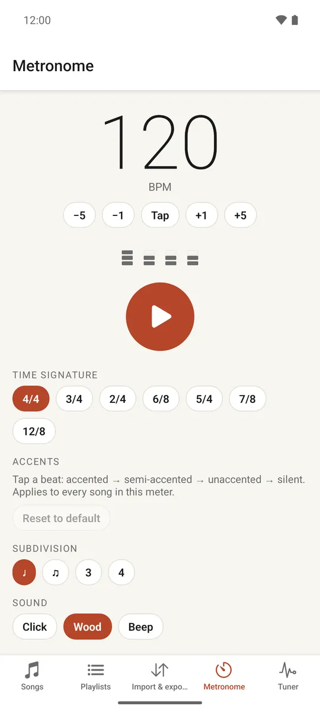
The full metronome: tempo, meter, subdivision, sound and accents.
The metronome keeps playing even if the screen turns off or you switch to another app — Android shows a "Metronome is playing" notification with a stop button for as long as it runs.
Tuner
Open the Tuner tab and switch between Strings and Drums at the top. The microphone starts listening as soon as the tab opens — there is no separate start button — and if the metronome happened to be running, Fiddle stops it first, since its clicks would spoil the reading. Fiddle asks for the microphone permission only once you open the tuner, and the sound is never recorded or stored.
Tuning strings
Pick an instrument preset — Guitar, Drop D, Bass 4, Ukulele, Violin, a fully Chromatic mode, and more — then play a string. The gauge shows whether it's flat or sharp and by how many cents. Adjust Sensitivity and Reference pitch below the gauge if needed (beside it on a wide screen).
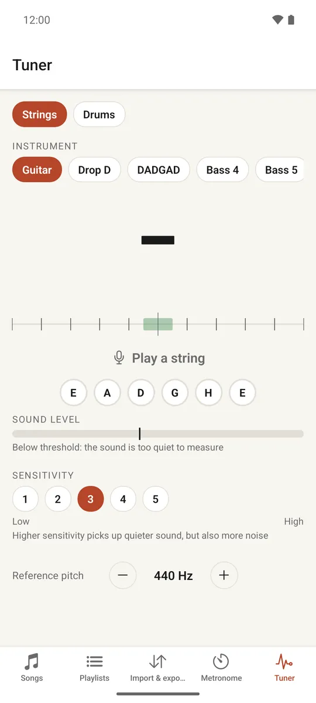
String tuning: play a note and read the gauge.
Tuning drums
Switch to Drums and choose what to measure — Lugs, Centre or Free — then set the drum kind, size, number of lugs and which Head you're tuning: Batter head or Resonant head.
Lugs — hit next to each tension rod in turn, in star order; Fiddle tells you whether to tighten or loosen it to bring it to the target pitch, and moves on to the next one once it's on target (or after every hit, if you switch Next lug from When on target to After every hit).
Centre — measures the pitch at the centre of the head and compares it with the target, and checks the lug-to-centre ratio.
Free — shows the pitch of any hit, with no target, useful for just listening.
Hit about 2.5 cm from the rim, next to the lug, with the other head muffled, and hold the phone close to that same spot (about 5 cm away) rather than the middle of the drum; wait for the sound to die away between hits. Tap Use this lug as the target to make your last hit the target for the rest of the lugs, instead of the built-in one.
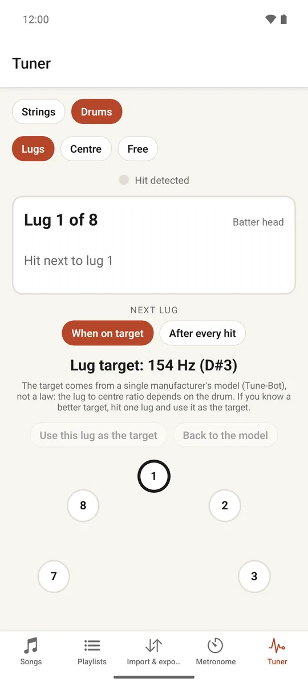
Drum tuning: each lug shown around the head, tighten or loosen to match.
Import & export
The Import & export tab is also where you back up or move your whole library, and where you export a single song, playlist or band.
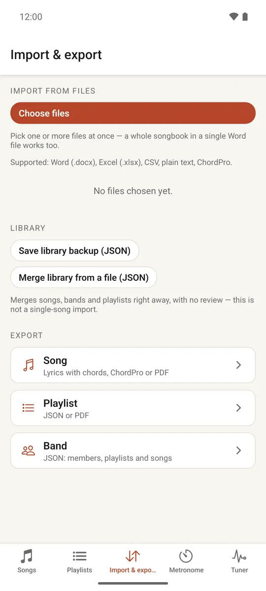
Import & export: back up your library, or export one item.
Under Library:
Save library backup (JSON) writes your whole library — songs, playlists, bands, favorites and even trashed songs — to a single JSON file you keep yourself. This is the only backup Fiddle makes; the app does not use Android's automatic cloud backup.
Merge library from a file (JSON) reads such a file back in and merges it into your library — useful for moving to a new phone, or combining two band members' libraries. It adds songs, playlists and bands you don't have, updates the ones you do have where the file's copy is newer, and skips the rest — it never permanently deletes anything, and the report afterwards tells you what changed.
Under Export, tap Song, Playlist or Band, search for and pick one item, and a panel at the bottom of the same screen offers the formats for it.
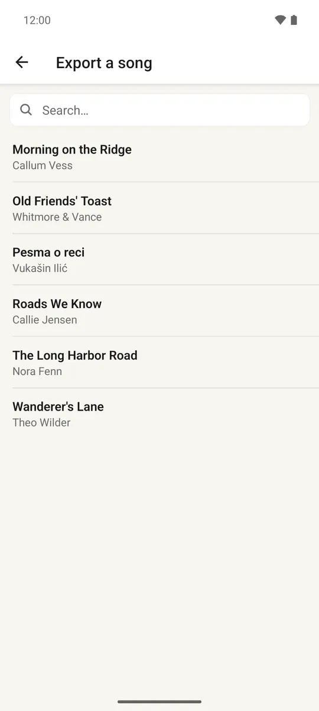
Pick an item to export; the format choices appear in a panel below it.
A song can be exported as Lyrics with chords, a ChordPro file, or a PDF; a playlist or band as JSON (a playlist can also be a PDF). Every export goes through your phone's own share sheet, so you choose exactly where it goes — Fiddle never sends anything on its own.
Settings
Open Settings from the gear icon on the library tab.
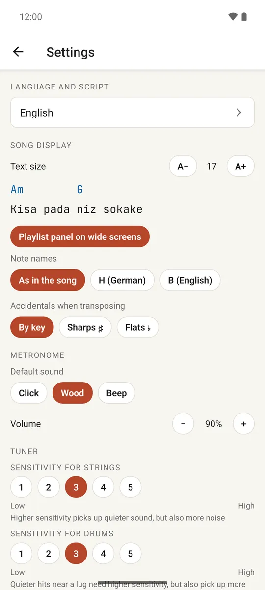
Settings: language, display, metronome defaults, library tools and more.
Language and script — Fiddle's interface language and script.
Song display — default text size, Playlist panel on wide screens, whether note names read As in the song, the German or the English way, and which accidentals (♯ or ♭) transposition prefers.
Metronome — the default click sound and volume.
Tuner — the same sensitivity (strings and drums separately) and reference pitch as on the tuner tab; changing it here changes it there too.
Library — song count, plus Re-parse songs (re-reads your saved songs with the current parser, useful after an app update) and Repair titles (fixes titles corrupted by a very old import bug, if any are found).
Legal and contact — User guide (this guide), Privacy policy, Contact and Report content.
About — what Fiddle is, and Show the tutorial again to watch the first-run tutorial again.
Frequently asked questions
What permissions does Fiddle ask for?
Only the microphone — for the tuner, and for click-sync calibration on a follower's phone during a live session — and each time only right before it's needed, with an explanation on screen first; you can decline and still use the rest of the app. Everything else Fiddle needs (the metronome's background notification, access to the local network for a live session) is granted automatically when you install the app and never prompts you.
My phones can't find each other in a live session
No session found. Check that everyone is on the same network, or enter the address by hand. If searching doesn't find the leader's session, make sure every phone is really on the same Wi-Fi network (some routers isolate devices from each other, which blocks this — a phone hotspot avoids that) and that Fiddle is open on all of them, or ask the leader for their address on the Live screen and enter it by hand under Enter the address by hand. All phones also need to be running the same version of Fiddle; joining fails with a message telling you to update if they don't.
Does Fiddle need the internet?
No, on purpose: Fiddle works entirely offline. It never connects to the internet on its own, has no analytics and collects no data about you — the only network feature it has at all is the local Wi-Fi live session described above, which never leaves your own network. To add a song, type it in or import it from a file you already have.
How do I move my library to a new phone?
On the old phone, go to Import & export and tap Save library backup (JSON) to save a JSON backup, then send that file to the new phone however you like (email, cloud storage, a cable). On the new phone, install Fiddle and use Merge library from a file (JSON) to bring it in.
Where is my data stored?
Only on your phone, in Fiddle's own private storage. Nothing is uploaded anywhere. Uninstalling the app deletes everything, which is exactly why Save library backup (JSON) is there.
Contact and privacy
For questions about the app, open Settings → Legal and contact → Contact, or write to support@nemgic.com directly. Use Report content from the same section, or from a song's share menu, to report copyrighted content or a problem with a specific song.
Fiddle's full privacy policy — what data the app does and doesn't collect, and why each permission is needed — is available from Privacy policy in settings, and linked at the bottom of this page.
Uputstvo za korišćenje
Fiddle je pesmarica sa akordima za muzičare i bendove: biblioteka pesama, transpozicija, kapo, dijagrami akorda, metronom, štimer, plejliste i sesija uživo za usklađivanje benda na sceni. Sve radi na tvom telefonu — nema naloga, nema internet funkcije, i ništa što ovde radiš se nikad ne šalje nigde osim na telefone članova tvog benda na istoj Wi-Fi mreži, i to samo dok je sesija uživo otvorena.
Prvi koraci
Kad Fiddle prvi put otvoriš, kratko uputstvo te provede kroz osnove: tvoje pesme, akordi na dodir, plejliste i režim nastupa, i Bend uživo. Koristi Dalje i Nazad da se krećeš kroz korake, ili dodirni Preskoči u bilo kom trenutku.
Uputstvo se otvara samo od sebe kad prvi put pokreneš Fiddle.
Kasnije ga možeš ponovo pogledati preko Podešavanja → Prikaži uputstvo ponovo.
Fiddle ima pet kartica pri dnu: Pesme, Plejliste, Uvoz i izvoz, Metronom i Štimer.
Tvoja biblioteka pesama
Kartica Pesme je tvoja biblioteka: svaka pesma koju si dodao, sortirana i pretraživa.
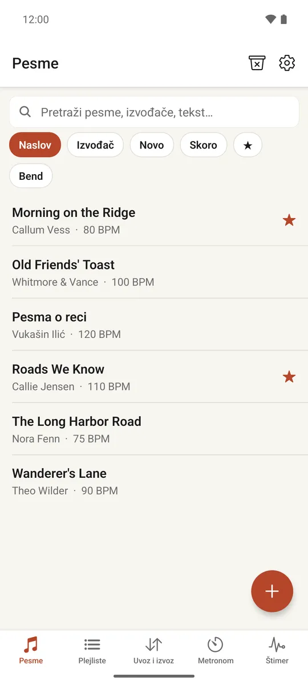
Kartica biblioteke: pretraga, sortiranje i filtriranje tvojih pesama.
Kucaj u polje za pretragu (Pretraži pesme, izvođače, tekst…) da filtriraš po naslovu, izvođaču ili tekstu.
Sortiraj spisak čipovima Naslov, Izvođač, Novo (prvo najnovije) ili Skoro (prvo poslednje otvarane).
Dodirni čip sa zvezdicom da prikažeš samo omiljene pesme.
Ako pripadaš bendu, čip Bend ti omogućava da suziš spisak na pesme jednog benda.
Dodirni ikonicu kante za smeće pri vrhu da vidiš pesme koje si obrisao, ili ikonicu zupčanika da otvoriš podešavanja. Dodirni dugme + da dodaš novu pesmu.
Dodavanje pesama
Postoje dva načina da pesma dospe u Fiddle — da je sam otkucaš ili nalepiš, ili da je uvezeš iz fajlova koje već imaš.
Kucanje pesme
Dodirni + na kartici biblioteke da otvoriš ekran Nova pesma. Popuni naslov i izvođača, pa napiši telo pesme sa akordima u liniji direktno iznad teksta kome pripadaju, i poravnaj ih razmacima:
G D
Morning light, a gentle sound
G Em
That leads a wanderer back home
Fiddle čita liniju kao akorde kad se najvećim delom sastoji od imena akorda i razmaka; sve ostalo se čita kao tekst pesme. Možeš nalepiti celu pesmu odjednom, ili je otkucati liniju po liniju.
Ručno pisanje pesme: akordi idu u svojoj liniji, iznad reči.
Ako pesmu već imaš kao običan tekstualni ili ChordPro fajl, dodirni Iz fajla da njen sadržaj učitaš pravo u editor umesto da je kucaš — ovo radi samo do oko 200 KB teksta; za veći fajl koristi karticu Uvoz i izvoz.
Uvoz iz fajlova
Na kartici Uvoz i izvoz dodirni Izaberi fajlove da izabereš jedan ili više fajlova sa telefona. Možeš izabrati nekoliko odjednom — cela pesmarica u jednom Word fajlu takođe radi, i Fiddle je automatski razdvaja na zasebne pesme tamo gde može da prepozna gde se jedna pesma završava a druga počinje.
Fiddle čita:
Word dokumente (.docx)
Excel tabele (.xlsx) — potreban je red sa zaglavljem koji ima kolonu za naslov pesme; Fiddle prepoznaje uobičajena imena kolona na engleskom ili srpskom.
CSV i TSV tabele — isto pravilo o redu sa zaglavljem kao kod tabela.
Tekstualne fajlove (.txt) sačuvane kao UTF-8, ili u Windows kodiranju za srednjoevropska (1250) ili ćirilična (1251) pisma, koje Fiddle prepoznaje automatski. Fajlove u drugim, starijim kodiranjima prvo ponovo sačuvaj kao UTF-8.
ChordPro fajlove (.cho)
Šta Fiddle ne ume da pročita, i zašto:
Starije Word/Excel formate, .doc i .xls — otvori fajl u programu Word ili Excel i sačuvaj ga kao .docx/.xlsx, pa ga ponovo uvezi.
PDF fajlovi za sada nisu podržani za uvoz.
Bilo koji pojedinačni fajl preko 20 MB, ili grupu fajlova koja bi odjednom dodala više od 2000 pesama.
Nakon izbora fajlova, spisak na istom ekranu prikazuje napredak svakog fajla i koliko je pesama iz njega izdvojeno. Dodirni × pored fajla da ga izbaciš iz uvoza pre nego što nastaviš.
Pregled pre snimanja
Kad se fajlovi obrade, dodirni dugme pri dnu da nastaviš na Pregled pre snimanja. Ovde vidiš svaku pesmu koju je Fiddle pronašao, spremnu za pregled:
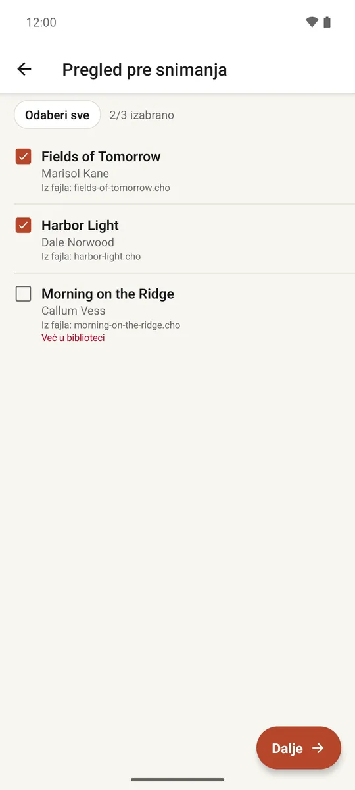
Pregledaj svaku uvezenu pesmu pre nego što se sačuva u biblioteku.
Skini oznaku sa svake pesme koju ne želiš da zadržiš, ili koristi Odaberi sve / Poništi sve.
Dodirni pesmu da ispraviš naslov ili izvođača, ili da pre snimanja ispraviš B/H notaciju.
Ako je u fajlu prepoznat tempo, čipovi ti omogućavaju da ga prihvatiš, isključiš, ili ispraviš očigledno pogrešno očitavanje (upola manji ili duplo veći tempo je česta greška u starim pesmaricama).
Upozorenja se prikazuju crvenom bojom — na primer, pesma koja je već u tvojoj biblioteci, ili duplikat unutar istog uvoza.
Kad si zadovoljan izborom, nastavi na ekran odredišta.
Biranje odredišta
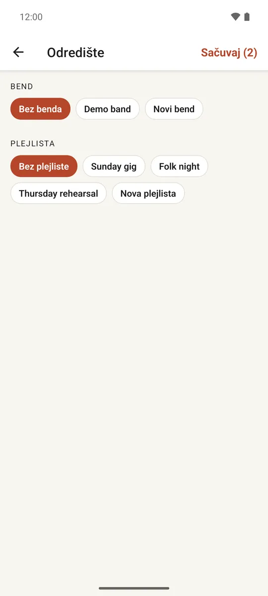
Izaberi da li uvezene pesme pripadaju nekom bendu i nekoj plejlisti.
Ovde jednom, za celu grupu, odlučuješ: pod Bend biraš kom bendu pesme pripadaju (ili nijednom), a pod Plejlista u koju plejlistu ih dodaješ (ili ni u jednu) — postojeću otključanu ili sasvim novu, po želji sa datumom nastupa. Plejlista zaključana za nastup se ovde ne nudi. Dodirni Sačuvaj da završiš.
Pregled pesme
Dodirni bilo koju pesmu u biblioteci da je otvoriš. Odavde sviraš.
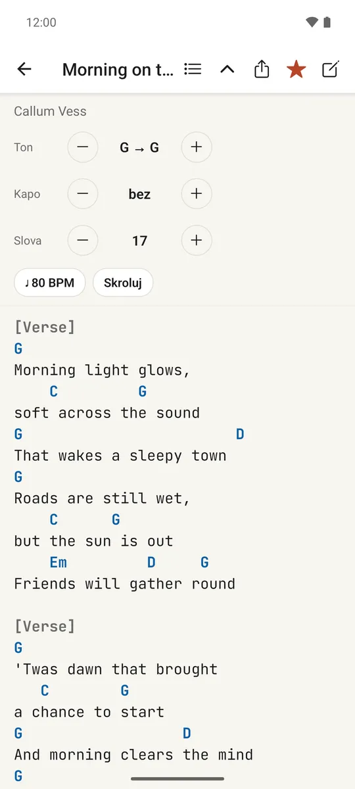
Ekran pesme: akordi iznad teksta, sa kontrolama za ton, kapo i veličinu teksta.
Transpozicija i kapo
Pri vrhu pesme, brojač Ton menja ton pesme za po jedan polustepen, a brojač Kapo postavlja na kom pragu je kapo. Dugo pritisni bilo koji od njih da ga vratiš na početnu vrednost. Brojač Slova menja veličinu teksta.
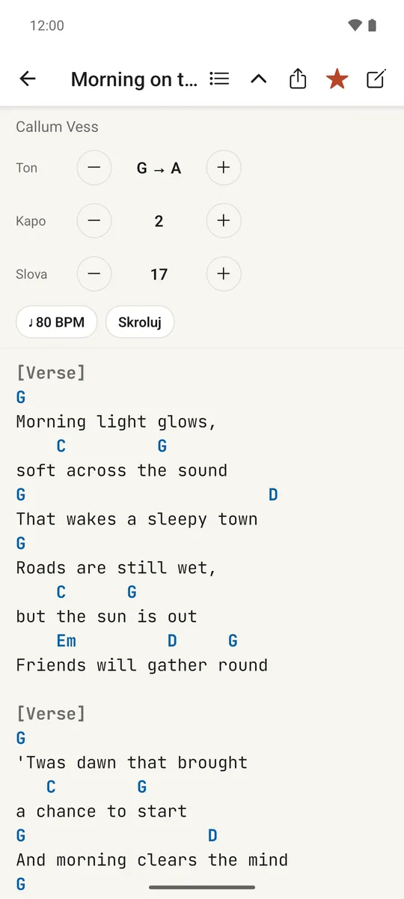
Ton, kapo i veličina teksta, svaki sa −/+ brojačem.
Kad promeniš ton, Fiddle ti može predložiti prag za kapo koji ti omogućava da sviraš iste hvatove koje već znaš — potraži liniju sa savetom ispod zaglavlja. Dodirom na nju se predloženi kapo primenjuje automatski.
Kartica akorda
Dodirni bilo koji akord u tekstu da vidiš kako se svira: mala kartica iskoči tačno tamo gde si dodirnuo, sa dijagramom, ikonicom za sviranje da ga čuješ i dugmetom Više. Dodirni Više da je proširiš u pun prikaz: dugme Odsviraj pušta akord, tonovi akorda su navedeni pod Tonovi:, a ako je poznato više hvatova, strelice Prethodni hvat / Sledeći hvat, uz brojač, omogućavaju ti da ih prelistaš. Ako je kapo postavljen, pun prikaz takođe pokazuje kako akord zapravo zvuči kad se uzme u obzir kapo.
Dodirni akord za njegov dijagram, alternativne hvatove i dugme za sviranje.
Ispravljanje linije
Fiddle nagađa da li je svaka linija tekst, akordi, tabulatura ili naslov sekcije. Ako pogreši — na primer kod neobičnog rasporeda — dugo pritisni tu liniju i izaberi Ova linija je…: Tekst, Akordi, Tabulatura ili Naslov sekcije. Ispravka se čuva uz pesmu — ali kasnija izmena teksta pesme poništava ove ispravke, jer su vezane za konkretne linije.
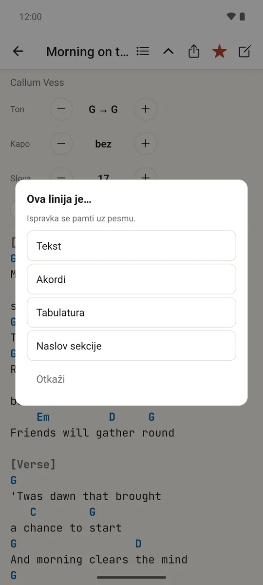
Dugo pritisni liniju da ispraviš kako se čita.
Ako pesma sadrži akord B, čip ti omogućava da promeniš kako se čita: B = B♭ (H) ili B = H (engleski).
Tempo, tapkanje tempa i metronom u pesmi
Dodirni čip tempa — prikazuje Tapni tempo ako pesma još nema sačuvan tempo, ili trenutni broj otkucaja u minuti ako ima — da otvoriš kompaktnu traku metronoma pravo na ekranu pesme. Tapkaj dugme Tap u ritmu muzike da postaviš tempo; Fiddle ga pamti uz pesmu. Dodirni okruglo dugme za puštanje i zaustavljanje da čuješ klik bez napuštanja pesme; −1/+1 pomeraju tempo za jedan otkucaj u minuti, Ceo metronom otvara punu karticu metronoma, a kad je tempo postavljen, Ukloni tempo ga uklanja.
Automatsko skrolovanje
Čip Skroluj prolazi kroz nekoliko brzina skrolovanja tako da se tekst pomera sam dok sviraš, bez upotrebe ruku.
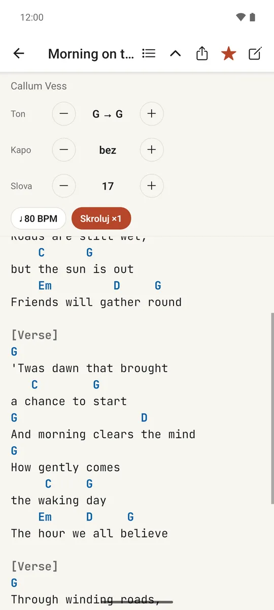
Automatsko skrolovanje pomera tekst umesto tebe, izabranom brzinom.
Omiljene pesme i deljenje
Dodirni ikonicu zvezdice u zaglavlju da pesmu dodaš ili ukloniš iz omiljenih. Dodirni ikonicu deljenja da je pošalješ kao Tekst sa akordima, ChordPro fajl, ili PDF — u tonu i sa kapom koje trenutno vidiš na ekranu. (Izvoz iste pesme sa kartice Uvoz i izvoz umesto toga koristi njen sačuvani ton i kapo, a ne to na šta si je poslednji put transponovao.) Isti meni ima dugme Prijavi sadržaj, za prijavu sadržaja zaštićenog autorskim pravima ili problema sa aplikacijom.
Pejzažni prikaz i panel plejliste
Okreni telefon na stranu, ili koristi tablet, i — sve dok imaš bar jednu plejlistu — pored teksta se pojavljuje bočni panel koji prikazuje setlistu (onu iz koje si otvorio pesmu, ili poslednju koju si koristio), pa možeš preskočiti na sledeću pesmu bez napuštanja lista sa akordima. Ikonica spiska u zaglavlju ga sakriva ili prikazuje; Prikaz pesme → Plejlista sa strane na širokom ekranu ga trajno isključuje.
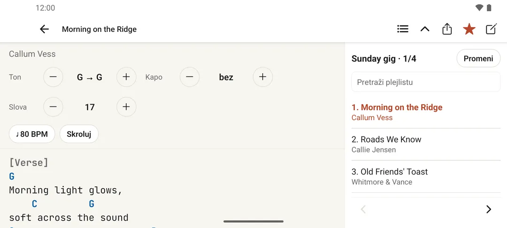
Pejzažni prikaz: širi ekrani prikazuju setlistu pored pesme.
Izmena i brisanje pesama
Dodirni ikonicu olovke na pesmi da otvoriš ekran Izmena pesme, isti onaj koji se koristi za kucanje nove pesme. Promeni naslov, izvođača, tempo, takt ili telo teksta, pa sačuvaj.
Da obrišeš pesmu, otvori je za izmenu i dodirni Obriši pesmu. Obrisane pesme ne nestaju odmah — sele se na ekran Kanta, dostupan preko ikonice kante za smeće na kartici biblioteke.
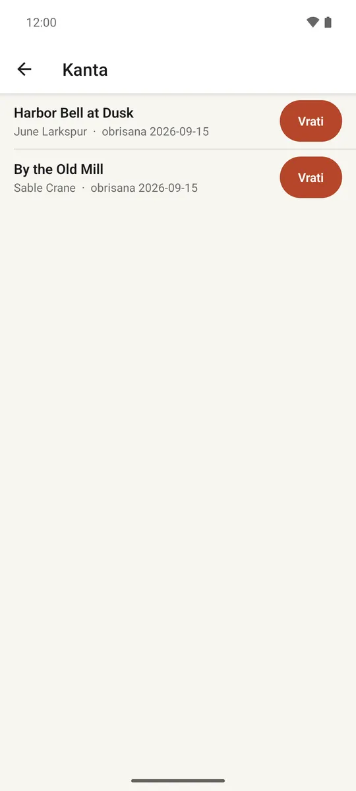
Obrisane pesme čekaju u kanti dok ih ne vratiš ili trajno ne izgubiš.
Iz kante možeš dodirnuti Vrati da vratiš pesmu. Pesma ostaje u kanti — i u svakoj kopiji biblioteke koju sačuvaš dok je tamo — dok ne deinstaliraš Fiddle ili ne obrišeš njegovo skladište u podešavanjima telefona, čime se sve trajno briše.
Plejliste i režim nastupa
Plejlista je setlista: uređen spisak pesama za probu, svirku ili događaj. Otvori karticu Plejliste da vidiš sve svoje.
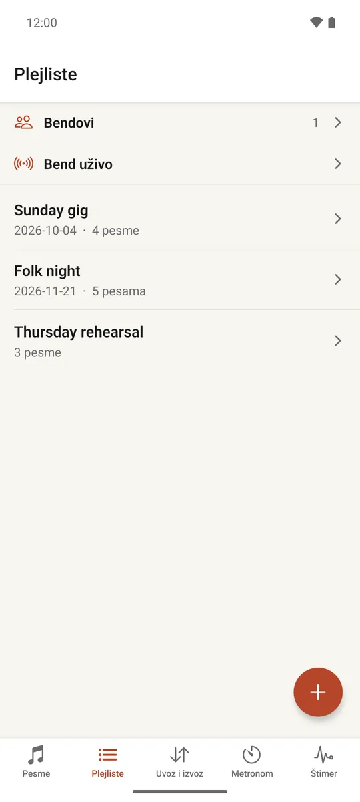
Kartica plejlista: svaka setlista koju si napravio.
Dodirni dugme +, daj setlisti ime u dijalogu Nova plejlista i dodirni Napravi, pa + Dodaj pesme da dodaš pesme iz biblioteke.
Unutar plejliste: promeni redosled pesama, ili dodirni jednu da je otvoriš.
Unutar plejliste možeš:
Promeniti redosled pesama dugmadima sa strelicama pored svakog reda, ili dugo pritisnuti pesmu da je ukloniš.
Preimenuj plejlistu. (Datum nastupa se postavlja kad napraviš plejlistu, ili na ekranu odredišta pri uvozu.)
Dodirni ikonicu katanca u zaglavlju pre nastupa da zamrzneš redosled, ton, kapo i tempo za svaku pesmu u njoj — niko ne može slučajno da promeni redosled ili izmeni pesmu usred nastupa. Zaključavanje ne brani izmenu teksta i akorada same pesme — zaključani su samo setlista i njena podešavanja za nastup. Dodirni katanac ponovo da je otključaš.
Dodirni Pošalji članu benda da pošalješ celu setlistu — pesme, akorde, ton, kapo i tempo zajedno — članu benda, kako bi je uvezao na svom telefonu.
Dodirni ▶ Nastup da pokreneš režim nastupa: prikaz preko celog ekrana napravljen za scenu, sa krupnim tekstom, sopstvenim automatskim skrolovanjem i kontrolama veličine teksta, i dugmadima sa strelicama za prethodnu i sledeću pesmu, za kretanje kroz setlistu. Pesma otvorena iz zaključane plejliste zadržava ton, kapo i tempo zamrznute u toj plejlisti dok nastupaš.
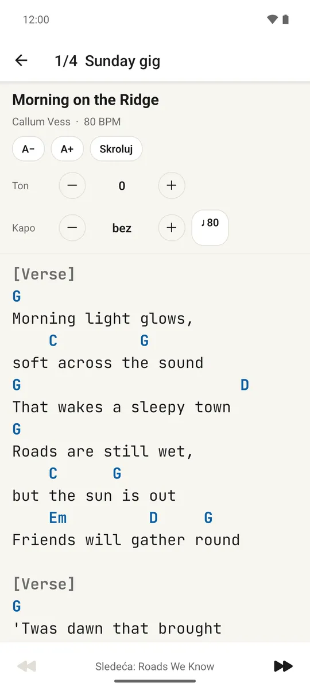
Režim nastupa: pesma za pesmom, napravljen za scenu.
Bendovi
Bend grupiše skup članova i zajednički repertoar pesama i plejlisti. Otvori karticu Plejliste i pogledaj pod Bendovi, ili dodirni dugme +, daj mu ime u dijalogu Novi bend i dodirni Napravi da ga napraviš.
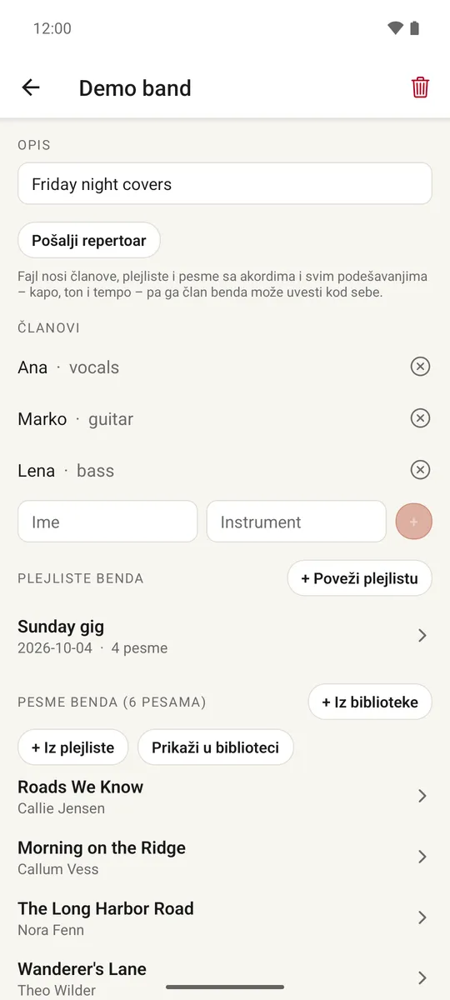
Bend: članovi, instrumenti i zajednički repertoar pesama.
Na strani benda možeš:
Pod Članovi dodati članove, svakog sa imenom i instrumentom (polje Instrument).
Dodati pesme u repertoar preko + Iz biblioteke, ili povući sve pesme iz postojeće plejliste.
+ Poveži plejlistu da povežeš jednu od svojih plejlisti sa bendom; njene pesme se takođe pridružuju repertoaru benda.
Dodirni Pošalji repertoar da pošalješ ceo repertoar — članove, plejliste i pesme sa svim podešavanjima — na telefon drugog člana.
Sesija uživo
Bend uživo drži sve telefone na istoj pesmi, u istom ritmu, tokom probe ili nastupa — preko tvoje sopstvene Wi-Fi mreže, bez naloga i bez interneta. Sesiju pokrećeš sa kartice Plejliste.
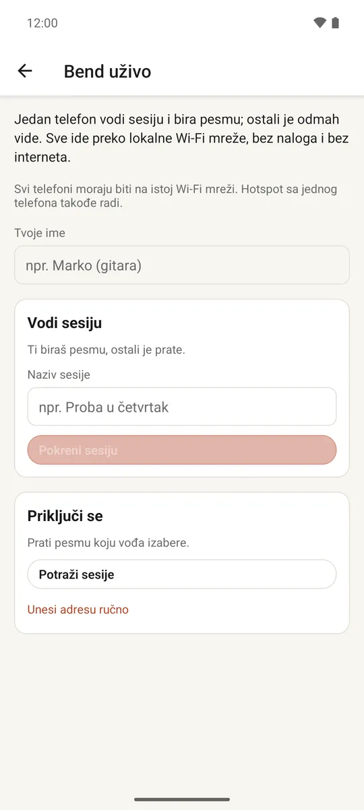
Bend uživo: jedan telefon vodi, ostali prate u realnom vremenu.
Šta je potrebno: Svi telefoni moraju biti na istoj Wi‑Fi mreži. Hotspot sa jednog telefona takođe radi.
Drži Fiddle otvoren na svakom telefonu dokle god sesija traje — radi samo dok je aplikacija otvorena, na istoj Wi-Fi mreži, na svim uključenim telefonima.
Vođenje sesije
Unesi svoje ime, pa pod Vodi sesiju daj sesiji ime i dodirni Pokreni sesiju. Koju god pesmu otvoriš, šalje se svima koji su se priključili — uključujući njen ton, kapo i tempo, i, ako si je otvorio iz setliste, naziv i redosled setliste.
Priključivanje sesiji
Unesi svoje ime, pa pod Priključi se dodirni Potraži sesije i dodirni sesiju koja se pojavi na spisku. Ako se ništa ne pojavi, dodirni Unesi adresu ručno, unesi vođinu adresu (polje Adresa) — prikazanu na vođinom ekranu — i dodirni Poveži se. Preuzmi celu setlistu unapred je podrazumevano uključeno i preuzima vođinu setlistu u pozadini kako bi se svaka pesma otvorila odmah; isključi ga ako želiš samo trenutnu pesmu.
Pesme koje primiš od vođe se čuvaju u tvojoj biblioteci i ostaju tu i posle završetka sesije, potpuno isto kao svaka pesma koju si sam uvezao — kopija pesme koju već imaš ostaje zasebna kopija. Primljene pesme se ne dodaju automatski ni u jednu tvoju plejlistu ili bend. Uključi Sam otvori pesmu koju vođa izabere (podrazumevano je uključeno) da svaka pesma koju vođa otvori automatski iskoči na tvoj ekran; kad je isključeno, dodirni Otvori pesmu sam kad budeš spreman.
Usklađivanje klika
Pošto zvučnik svakog telefona ima malo drugačije kašnjenje, Fiddle to može izmeriti i ispraviti tako da klik metronoma kod celog benda padne u isti trenutak. Sa kartice usklađivanja, vođa dodiruje Uskladi zvuk članova (zasivljeno dok se neko ne priključi) — telefon svakog pratioca zatim preko sopstvenog mikrofona sluša niz klikova, otprilike 5 do 10 sekundi u zavisnosti od broja telefona u sesiji, pa drži telefone blizu jedan drugog u tihoj prostoriji i koristi zvučnik ili kabl umesto Bluetooth veze. Od pratilaca se unapred traži dozvola za mikrofon, na istoj kartici. Klik prati vođu, podrazumevano uključeno, čini da telefon svakog pratioca klikće u ritmu vođinog metronoma kad god on radi; vremenski pomak možeš i ručno doterati brojačima ±1 / ±5 ms pored njega.
Metronom
Kartica Metronom je pun metronom: utapkaj tempo ili ga podesi brojačima, izaberi takt i podelu dobe (Takt, Podela dobe) i zvuk klika (Zvuk), a raspored naglasaka (Naglasci) oblikuj dodirom na svaku dobu, koji je redom prebacuje u naglašenu, poluglašenu, nenaglašenu i tihu.
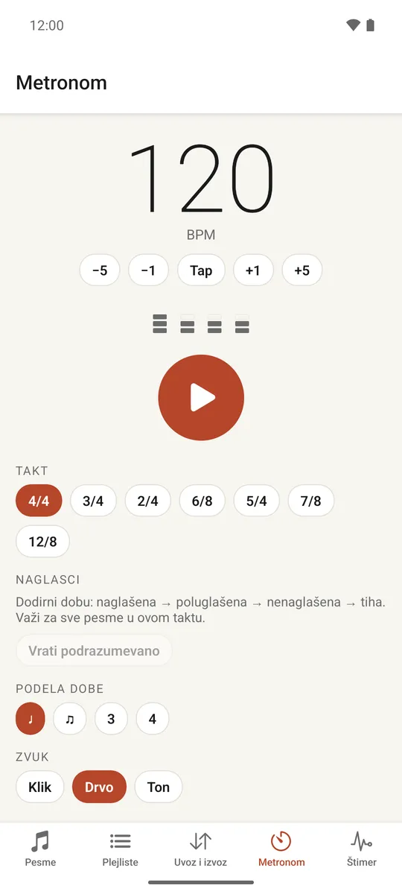
Pun metronom: tempo, takt, podela dobe, zvuk i naglasci.
Metronom nastavlja da svira i kad se ekran ugasi ili pređeš u drugu aplikaciju — Android prikazuje obaveštenje „Metronom svira“ sa dugmetom za zaustavljanje dok god radi.
Štimer
Otvori karticu Štimer i prebacuj se između Žičani i Bubanj pri vrhu. Mikrofon počinje da sluša čim se kartica otvori — nema posebnog dugmeta za pokretanje — i ako je metronom radio, Fiddle ga prvo zaustavlja, jer bi njegovi klikovi pokvarili očitavanje. Fiddle traži dozvolu za mikrofon tek kad otvoriš štimer, a zvuk se nikad ne snima niti čuva.
Štimovanje žica
Izaberi instrument ili štim — Gitara, Drop D, Bas 4, Ukulele, Violina, potpuno Hromatski režim, i druge — pa odsviraj žicu. Skala pokazuje da li je preniska ili previsoka i za koliko centi. Podesi Osetljivost i Referentni ton ispod skale ako je potrebno (pored nje na širokom ekranu).
Štimovanje žica: odsviraj ton i pročitaj skalu.
Štimovanje bubnjeva
Prebaci se na Bubanj i izaberi šta meriš — Šrafovi, Središte ili Slobodno — pa postavi vrstu bubnja, veličinu i broj šrafova, a pod Opna izaberi koju opnu štimuješ: Gornja opna ili Donja opna.
Šrafovi — udari redom pored svakog šrafa, po redosledu zvezde; Fiddle ti kaže da li da ga zategneš ili opustiš da dođe do ciljanog tona, i prelazi na sledeći kad taj uđe u cilj (ili posle svakog udarca, ako Sledeći šraf prebaciš sa Kad uđe u cilj na Posle svakog udarca).
Središte — meri ton u sredini opne i poredi ga sa ciljem, i proverava odnos šrafa i središta.
Slobodno — prikazuje ton svakog udarca, bez cilja, korisno kad samo želiš da slušaš.
Udari oko 2,5 cm od obruča, pored šrafa, dok je druga opna prigušena, i drži telefon blizu tog istog mesta (oko 5 cm razmaka) umesto sredine bubnja; sačekaj da zvuk zamre između udaraca. Dodirni Uzmi ovaj šraf kao cilj da tvoj poslednji udarac postane cilj za ostale šrafove, umesto ugrađenog.
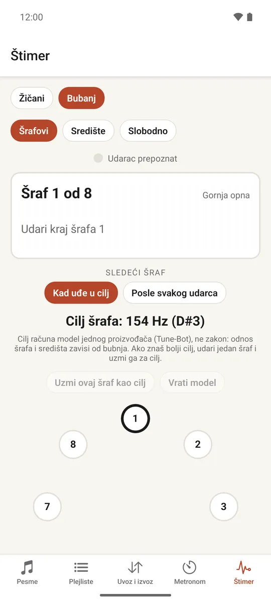
Štimovanje bubnjeva: svaki šraf prikazan oko opne, zategni ili opusti da se poklopi.
Uvoz i izvoz
Kartica Uvoz i izvoz je i mesto gde praviš rezervnu kopiju ili premeštaš celu biblioteku, i gde izvoziš jednu pesmu, plejlistu ili bend.
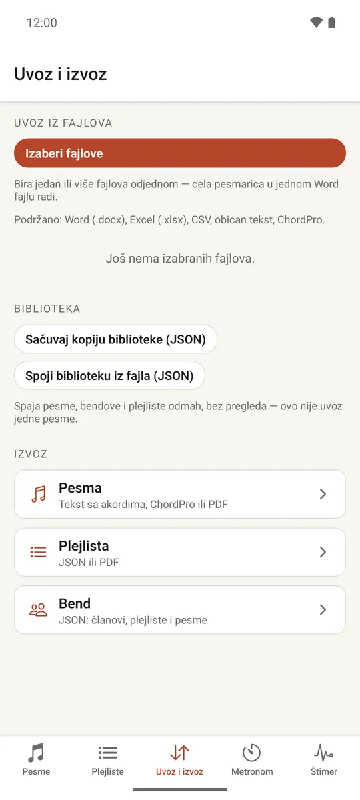
Uvoz i izvoz: napravi rezervnu kopiju biblioteke, ili izvezi jednu stavku.
Pod Biblioteka:
Sačuvaj kopiju biblioteke (JSON) upisuje celu biblioteku — pesme, plejliste, bendove, oznake omiljenih, pa čak i obrisane pesme — u jedan JSON fajl koji sam čuvaš. Ovo je jedina rezervna kopija koju Fiddle pravi; aplikacija ne koristi Android-ovu automatsku rezervnu kopiju u oblaku.
Spoji biblioteku iz fajla (JSON) učitava takav fajl nazad i spaja ga sa tvojom bibliotekom — korisno za prelazak na novi telefon, ili spajanje biblioteka dva člana benda. Dodaje pesme, plejliste i bendove koje nemaš, ažurira one koje imaš tamo gde je kopija iz fajla novija, i preskače ostalo — nikad ništa trajno ne briše, a izveštaj posle ti kaže šta se promenilo.
Pod Izvoz, dodirni Pesma, Plejlista ili Bend, potraži i izaberi jednu stavku, a panel pri dnu istog ekrana nudi formate za nju.
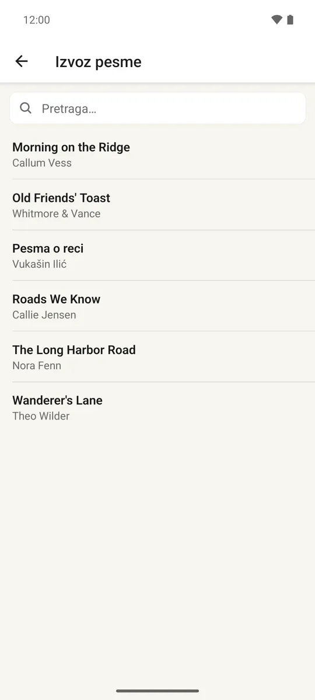
Izaberi stavku za izvoz; izbor formata se pojavljuje u panelu ispod nje.
Pesma se može izvesti kao Tekst sa akordima, ChordPro fajl, ili PDF; plejlista ili bend kao JSON (plejlista može biti i PDF). Svaki izvoz ide preko sistemskog menija za deljenje na tvom telefonu, pa sam biraš tačno gde ide — Fiddle nikad ništa ne šalje sam od sebe.
Podešavanja
Otvori Podešavanja preko ikonice zupčanika na kartici biblioteke.
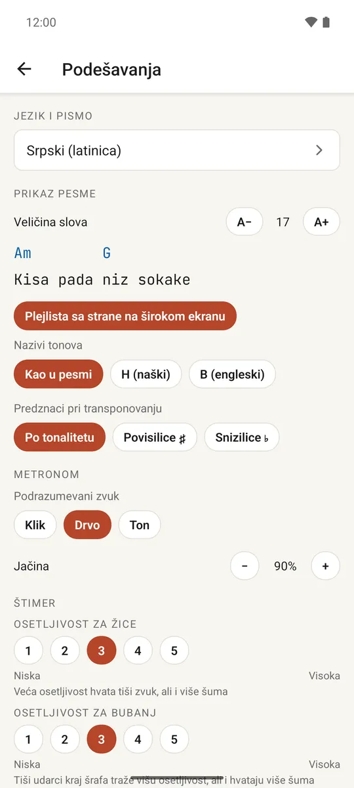
Podešavanja: jezik, prikaz, podrazumevane vrednosti metronoma, alatke za biblioteku i drugo.
Jezik i pismo — jezik i pismo koje Fiddle koristi u svom interfejsu.
Prikaz pesme — podrazumevana veličina teksta, Plejlista sa strane na širokom ekranu, da li se imena tonova čitaju Kao u pesmi, na nemački ili na engleski način, i koje predznake (♯ ili ♭) transpozicija preferira.
Metronom — podrazumevani zvuk klika i jačina.
Štimer — ista osetljivost (posebno za žice i bubnjeve) i referentni ton kao na kartici štimera; izmena ovde menja i tamo.
Biblioteka — broj pesama, plus Ponovo obradi pesme (ponovo čita sačuvane pesme trenutnim parserom, korisno posle nadogradnje aplikacije) i Popravi naslove (popravlja naslove oštećene veoma starom greškom pri uvozu, ako se pronađu).
Pravno i kontakt — Uputstvo za korišćenje (ovo uputstvo), Politika privatnosti, Kontakt i Prijavi sadržaj.
O aplikaciji — šta je Fiddle, i Prikaži uputstvo ponovo da ponovo pogledaš uvodno uputstvo.
Često postavljana pitanja
Koje dozvole Fiddle traži?
Samo mikrofon — za štimer, i za kalibraciju usklađivanja klika na telefonu pratioca tokom sesije uživo — i svaki put tek neposredno pre nego što zatreba, uz prethodno objašnjenje na ekranu. Možeš odbiti, a ostatak aplikacije će i dalje raditi. Sve ostalo što je potrebno aplikaciji Fiddle (obaveštenje metronoma u pozadini, pristup lokalnoj mreži za sesiju uživo) se dodeljuje automatski kad instaliraš aplikaciju i nikad te ne pita.
Moji telefoni ne mogu da se pronađu u sesiji uživo
Nijedna sesija nije nađena. Proveri da su svi na istoj mreži ili unesi adresu ručno. Ako pretraga ne pronađe vođinu sesiju, proveri da su svi telefoni zaista na istoj Wi-Fi mreži (neki ruteri izoluju uređaje jedan od drugog, što ovo blokira — hotspot sa telefona to izbegava) i da je Fiddle otvoren na svima njima, ili zamoli vođu za adresu sa ekrana sesije uživo i unesi je ručno pod Unesi adresu ručno. Fiddle na svim telefonima takođe mora biti iste verzije — ako nije, priključivanje ne uspeva, uz poruku koja te obaveštava da ažuriraš.
Da li je za Fiddle potreban internet?
Ne, namerno: Fiddle radi potpuno lokalno. Nikad se sam ne povezuje na internet, nema analitiku i ne prikuplja nikakve podatke o tebi — jedina mrežna funkcija koju uopšte ima je lokalna Wi-Fi sesija uživo opisana gore, koja nikad ne napušta tvoju mrežu. Da dodaš pesmu, otkucaj je ili je uvezi iz fajla koji već imaš.
Kako da premestim biblioteku na novi telefon?
Na starom telefonu idi na Uvoz i izvoz i dodirni Sačuvaj kopiju biblioteke (JSON) da sačuvaš JSON rezervnu kopiju, pa taj fajl pošalji na novi telefon kako god ti odgovara (e-pošta, skladište u oblaku, kabl). Na novom telefonu instaliraj Fiddle i koristi Spoji biblioteku iz fajla (JSON) da je učitaš.
Gde su moji podaci sačuvani?
Samo na tvom telefonu: Fiddle ništa ne otprema nikuda, sve ostaje u njegovom sopstvenom privatnom skladištu. Deinstalacija aplikacije briše sve, i upravo zato postoji Sačuvaj kopiju biblioteke (JSON).
Kontakt i privatnost
Za pitanja o aplikaciji, otvori Podešavanja → Pravno i kontakt → Kontakt, ili piši direktno na support@nemgic.com. Koristi Prijavi sadržaj iz iste sekcije, ili iz menija za deljenje pesme, da prijaviš sadržaj zaštićen autorskim pravima ili problem sa konkretnom pesmom.
Cela politika privatnosti aplikacije Fiddle — koje podatke aplikacija prikuplja i koje ne, i zašto je svaka dozvola potrebna — dostupna je preko Politika privatnosti u podešavanjima, i povezana pri dnu ove stranice.
Упутство за коришћење
Fiddle је песмарица са акордима за музичаре и бендове: библиотека песама, транспозиција, капо, дијаграми акорда, метроном, штимер, плејлисте и сесија уживо за усклађивање бенда на сцени. Све ради на твом телефону — нема налога, нема интернет функције, и ништа што овде радиш се никад не шаље нигде осим на телефоне чланова твог бенда на истој Wi-Fi мрежи, и то само док је сесија уживо отворена.
Први кораци
Кад Fiddle први пут отвориш, кратко упутство те проведе кроз основе: твоје песме, акорди на додир, плејлисте и режим наступа, и Бенд уживо. Користи Даље и Назад да се крећеш кроз кораке, или додирни Прескочи у било ком тренутку.
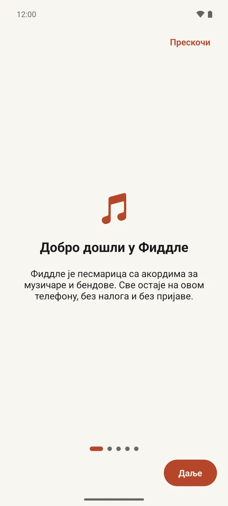
Упутство се отвара само од себе кад први пут покренеш Fiddle.
Касније га можеш поново погледати преко Подешавања → Прикажи упутство поново.
Fiddle има пет картица при дну: Песме, Плејлисте, Увоз и извоз, Метроном и Штимер.
Твоја библиотека песама
Картица Песме је твоја библиотека: свака песма коју си додао, сортирана и претражива.
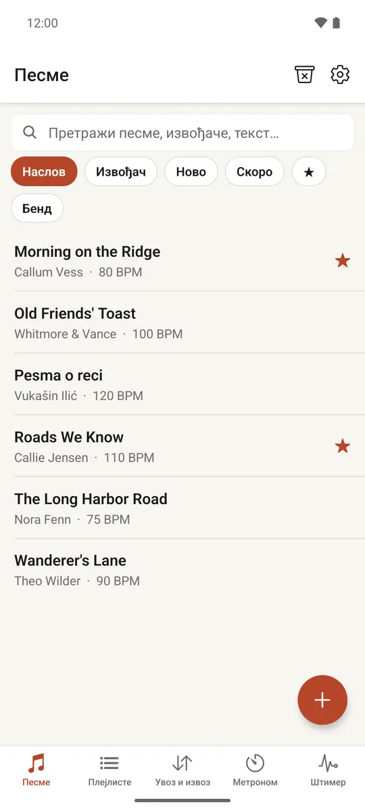
Картица библиотеке: претрага, сортирање и филтрирање твојих песама.
Куцај у поље за претрагу (Претражи песме, извођаче, текст…) да филтрираш по наслову, извођачу или тексту.
Сортирај списак чиповима Наслов, Извођач, Ново (прво најновије) или Скоро (прво последње отваране).
Додирни чип са звездицом да прикажеш само омиљене песме.
Ако припадаш бенду, чип Бенд ти омогућава да сузиш списак на песме једног бенда.
Додирни иконицу канте за смеће при врху да видиш песме које си обрисао, или иконицу зупчаника да отвориш подешавања. Додирни дугме + да додаш нову песму.
Додавање песама
Постоје два начина да песма доспе у Fiddle — да је сам откуцаш или налепиш, или да је увезеш из фајлова које већ имаш.
Куцање песме
Додирни + на картици библиотеке да отвориш екран Нова песма. Попуни наслов и извођача, па напиши тело песме са акордима у линији директно изнад текста коме припадају, и поравнај их размацима:
G D
Morning light, a gentle sound
G Em
That leads a wanderer back home
Fiddle чита линију као акорде кад се највећим делом састоји од имена акорда и размака; све остало се чита као текст песме. Можеш налепити целу песму одједном, или је откуцати линију по линију.
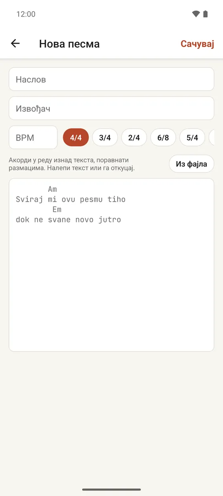
Ручно писање песме: акорди иду у својој линији, изнад речи.
Ако песму већ имаш као обичан текстуални или ChordPro фајл, додирни Из фајла да њен садржај учиташ право у едитор уместо да је куцаш — ово ради само до око 200 KB текста; за већи фајл користи картицу Увоз и извоз.
Увоз из фајлова
На картици Увоз и извоз додирни Изабери фајлове да изабереш један или више фајлова са телефона. Можеш изабрати неколико одједном — цела песмарица у једном Word фајлу такође ради, и Fiddle је аутоматски раздваја на засебне песме тамо где може да препозна где се једна песма завршава а друга почиње.
Fiddle чита:
Word документе (.docx)
Excel табеле (.xlsx) — потребан је ред са заглављем који има колону за наслов песме; Fiddle препознаје уобичајена имена колона на енглеском или српском.
CSV и TSV табеле — исто правило о реду са заглављем као код табела.
Текстуалне фајлове (.txt) сачуване као UTF-8, или у Windows кодирању за средњоевропска (1250) или ћирилична (1251) писма, које Fiddle препознаје аутоматски. Фајлове у другим, старијим кодирањима прво поново сачувај као UTF-8.
ChordPro фајлове (.cho)
Шта Fiddle не уме да прочита, и зашто:
Старије Word/Excel формате, .doc и .xls — отвори фајл у програму Word или Excel и сачувај га као .docx/.xlsx, па га поново увези.
PDF фајлови за сада нису подржани за увоз.
Било који појединачни фајл преко 20 MB, или групу фајлова која би одједном додала више од 2000 песама.
Након избора фајлова, списак на истом екрану приказује напредак сваког фајла и колико је песама из њега издвојено. Додирни × поред фајла да га избациш из увоза пре него што наставиш.
Преглед пре снимања
Кад се фајлови обраде, додирни дугме при дну да наставиш на Преглед пре снимања. Овде видиш сваку песму коју је Fiddle пронашао, спремну за преглед:
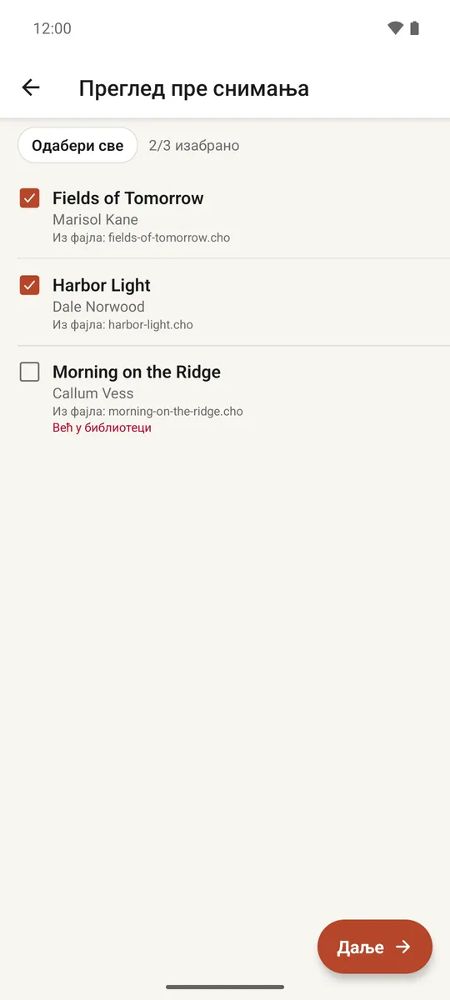
Прегледај сваку увезену песму пре него што се сачува у библиотеку.
Скини ознаку са сваке песме коју не желиш да задржиш, или користи Одабери све / Поништи све.
Додирни песму да исправиш наслов или извођача, или да пре снимања исправиш B/H нотацију.
Ако је у фајлу препознат темпо, чипови ти омогућавају да га прихватиш, искључиш, или исправиш очигледно погрешно очитавање (упола мањи или дупло већи темпо је честа грешка у старим песмарицама).
Упозорења се приказују црвеном бојом — на пример, песма која је већ у твојој библиотеци, или дупликат унутар истог увоза.
Кад си задовољан избором, настави на екран одредишта.
Бирање одредишта
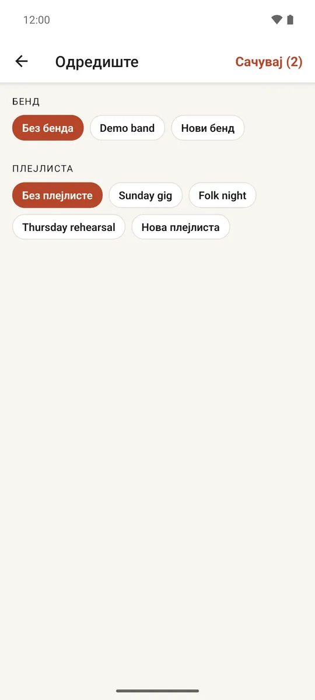
Изабери да ли увезене песме припадају неком бенду и некој плејлисти.
Овде једном, за целу групу, одлучујеш: под Бенд бираш ком бенду песме припадају (или ниједном), а под Плејлиста у коју плејлисту их додајеш (или ни у једну) — постојећу откључану или сасвим нову, по жељи са датумом наступа. Плејлиста закључана за наступ се овде не нуди. Додирни Сачувај да завршиш.
Преглед песме
Додирни било коју песму у библиотеци да је отвориш. Одавде свираш.
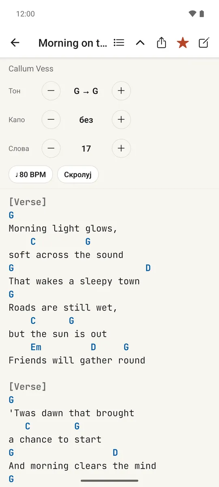
Екран песме: акорди изнад текста, са контролама за тон, капо и величину текста.
Транспозиција и капо
При врху песме, бројач Тон мења тон песме за по један полустепен, а бројач Капо поставља на ком прагу је капо. Дуго притисни било који од њих да га вратиш на почетну вредност. Бројач Слова мења величину текста.
Тон, капо и величина текста, сваки са −/+ бројачем.
Кад промениш тон, Fiddle ти може предложити праг за капо који ти омогућава да свираш исте хватове које већ знаш — потражи линију са саветом испод заглавља. Додиром на њу се предложени капо примењује аутоматски.
Картица акорда
Додирни било који акорд у тексту да видиш како се свира: мала картица искочи тачно тамо где си додирнуо, са дијаграмом, иконицом за свирање да га чујеш и дугметом Више. Додирни Више да је прошириш у пун приказ: дугме Одсвирај пушта акорд, тонови акорда су наведени под Тонови:, а ако је познато више хватова, стрелице Претходни хват / Следећи хват, уз бројач, омогућавају ти да их прелисташ. Ако је капо постављен, пун приказ такође показује како акорд заправо звучи кад се узме у обзир капо.
Додирни акорд за његов дијаграм, алтернативне хватове и дугме за свирање.
Исправљање линије
Fiddle нагађа да ли је свака линија текст, акорди, табулатура или наслов секције. Ако погреши — на пример код необичног распореда — дуго притисни ту линију и изабери Ова линија је…: Текст, Акорди, Табулатура или Наслов секције. Исправка се чува уз песму — али каснија измена текста песме поништава ове исправке, јер су везане за конкретне линије.
Дуго притисни линију да исправиш како се чита.
Ако песма садржи акорд B, чип ти омогућава да промениш како се чита: B = B♭ (H) или B = H (енглески).
Темпо, тапкање темпа и метроном у песми
Додирни чип темпа — приказује Тапни темпо ако песма још нема сачуван темпо, или тренутни број откуцаја у минути ако има — да отвориш компактну траку метронома право на екрану песме. Тапкај дугме Тап у ритму музике да поставиш темпо; Fiddle га памти уз песму. Додирни округло дугме за пуштање и заустављање да чујеш клик без напуштања песме; −1/+1 померају темпо за један откуцај у минути, Цео метроном отвара пуну картицу метронома, а кад је темпо постављен, Уклони темпо га уклања.
Аутоматско скроловање
Чип Скролуј пролази кроз неколико брзина скроловања тако да се текст помера сам док свираш, без употребе руку.
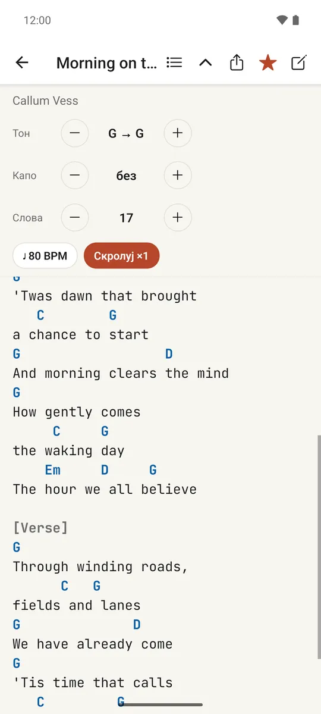
Аутоматско скроловање помера текст уместо тебе, изабраном брзином.
Омиљене песме и дељење
Додирни иконицу звездице у заглављу да песму додаш или уклониш из омиљених. Додирни иконицу дељења да је пошаљеш као Текст са акордима, ChordPro фајл, или PDF — у тону и са капом које тренутно видиш на екрану. (Извоз исте песме са картице Увоз и извоз уместо тога користи њен сачувани тон и капо, а не то на шта си је последњи пут транспоновао.) Исти мени има дугме Пријави садржај, за пријаву садржаја заштићеног ауторским правима или проблема са апликацијом.
Пејзажни приказ и панел плејлисте
Окрени телефон на страну, или користи таблет, и — све док имаш бар једну плејлисту — поред текста се појављује бочни панел који приказује сетлисту (ону из које си отворио песму, или последњу коју си користио), па можеш прескочити на следећу песму без напуштања листа са акордима. Иконица списка у заглављу га сакрива или приказује; Приказ песме → Плејлиста са стране на широком екрану га трајно искључује.
Пејзажни приказ: шири екрани приказују сетлисту поред песме.
Измена и брисање песама
Додирни иконицу оловке на песми да отвориш екран Измена песме, исти онај који се користи за куцање нове песме. Промени наслов, извођача, темпо, такт или тело текста, па сачувај.
Да обришеш песму, отвори је за измену и додирни Обриши песму. Обрисане песме не нестају одмах — селе се на екран Канта, доступан преко иконице канте за смеће на картици библиотеке.
Обрисане песме чекају у канти док их не вратиш или трајно не изгубиш.
Из канте можеш додирнути Врати да вратиш песму. Песма остаје у канти — и у свакој копији библиотеке коју сачуваш док је тамо — док не деинсталираш Fiddle или не обришеш његово складиште у подешавањима телефона, чиме се све трајно брише.
Плејлисте и режим наступа
Плејлиста је сетлиста: уређен списак песама за пробу, свирку или догађај. Отвори картицу Плејлисте да видиш све своје.
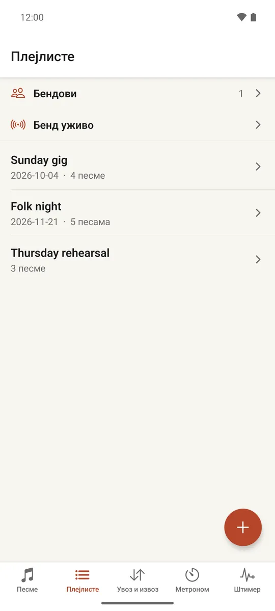
Картица плејлиста: свака сетлиста коју си направио.
Додирни дугме +, дај сетлисти име у дијалогу Нова плејлиста и додирни Направи, па + Додај песме да додаш песме из библиотеке.
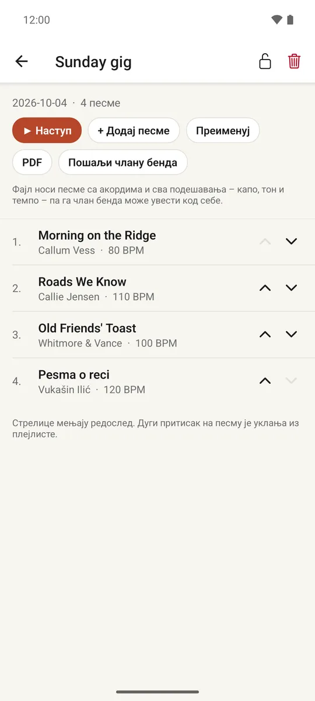
Унутар плејлисте: промени редослед песама, или додирни једну да је отвориш.
Унутар плејлисте можеш:
Променити редослед песама дугмадима са стрелицама поред сваког реда, или дуго притиснути песму да је уклониш.
Преименуј плејлисту. (Датум наступа се поставља кад направиш плејлисту, или на екрану одредишта при увозу.)
Додирни иконицу катанца у заглављу пре наступа да замрзнеш редослед, тон, капо и темпо за сваку песму у њој — нико не може случајно да промени редослед или измени песму усред наступа. Закључавање не брани измену текста и акорада саме песме — закључани су само сетлиста и њена подешавања за наступ. Додирни катанац поново да је откључаш.
Додирни Пошаљи члану бенда да пошаљеш целу сетлисту — песме, акорде, тон, капо и темпо заједно — члану бенда, како би је увезао на свом телефону.
Додирни ▶ Наступ да покренеш режим наступа: приказ преко целог екрана направљен за сцену, са крупним текстом, сопственим аутоматским скроловањем и контролама величине текста, и дугмадима са стрелицама за претходну и следећу песму, за кретање кроз сетлисту. Песма отворена из закључане плејлисте задржава тон, капо и темпо замрзнуте у тој плејлисти док наступаш.
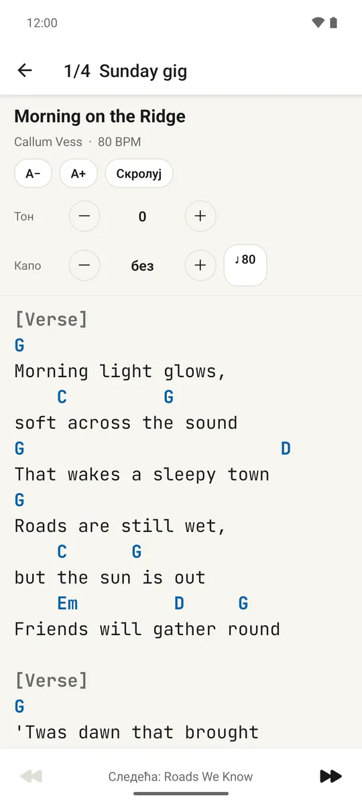
Режим наступа: песма за песмом, направљен за сцену.
Бендови
Бенд групише скуп чланова и заједнички репертоар песама и плејлисти. Отвори картицу Плејлисте и погледај под Бендови, или додирни дугме +, дај му име у дијалогу Нови бенд и додирни Направи да га направиш.
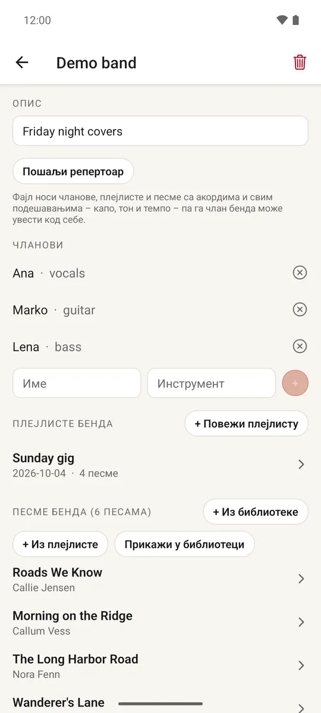
Бенд: чланови, инструменти и заједнички репертоар песама.
На страни бенда можеш:
Под Чланови додати чланове, сваког са именом и инструментом (поље Инструмент).
Додати песме у репертоар преко + Из библиотеке, или повући све песме из постојеће плејлисте.
+ Повежи плејлисту да повежеш једну од својих плејлисти са бендом; њене песме се такође придружују репертоару бенда.
Додирни Пошаљи репертоар да пошаљеш цео репертоар — чланове, плејлисте и песме са свим подешавањима — на телефон другог члана.
Сесија уживо
Бенд уживо држи све телефоне на истој песми, у истом ритму, током пробе или наступа — преко твоје сопствене Wi-Fi мреже, без налога и без интернета. Сесију покрећеш са картице Плејлисте.
Бенд уживо: један телефон води, остали прате у реалном времену.
Шта је потребно: Сви телефони морају бити на истој Wi‑Fi мрежи. Хотспот са једног телефона такође ради.
Држи Fiddle отворен на сваком телефону докле год сесија траје — ради само док је апликација отворена, на истој Wi-Fi мрежи, на свим укљученим телефонима.
Вођење сесије
Унеси своје име, па под Води сесију дај сесији име и додирни Покрени сесију. Коју год песму отвориш, шаље се свима који су се прикључили — укључујући њен тон, капо и темпо, и, ако си је отворио из сетлисте, назив и редослед сетлисте.
Прикључивање сесији
Унеси своје име, па под Прикључи се додирни Потражи сесије и додирни сесију која се појави на списку. Ако се ништа не појави, додирни Унеси адресу ручно, унеси вођину адресу (поље Адреса) — приказану на вођином екрану — и додирни Повежи се. Преузми целу сетлисту унапред је подразумевано укључено и преузима вођину сетлисту у позадини како би се свака песма отворила одмах; искључи га ако желиш само тренутну песму.
Песме које примиш од вође се чувају у твојој библиотеци и остају ту и после завршетка сесије, потпуно исто као свака песма коју си сам увезао — копија песме коју већ имаш остаје засебна копија. Примљене песме се не додају аутоматски ни у једну твоју плејлисту или бенд. Укључи Сам отвори песму коју вођа изабере (подразумевано је укључено) да свака песма коју вођа отвори аутоматски искочи на твој екран; кад је искључено, додирни Отвори песму сам кад будеш спреман.
Усклађивање клика
Пошто звучник сваког телефона има мало другачије кашњење, Fiddle то може измерити и исправити тако да клик метронома код целог бенда падне у исти тренутак. Са картице усклађивања, вођа додирује Усклади звук чланова (засивљено док се неко не прикључи) — телефон сваког пратиоца затим преко сопственог микрофона слуша низ кликова, отприлике 5 до 10 секунди у зависности од броја телефона у сесији, па држи телефоне близу један другог у тихој просторији и користи звучник или кабл уместо Bluetooth везе. Од пратилаца се унапред тражи дозвола за микрофон, на истој картици. Клик прати вођу, подразумевано укључено, чини да телефон сваког пратиоца кликће у ритму вођиног метронома кад год он ради; временски помак можеш и ручно дотерати бројачима ±1 / ±5 ms поред њега.
Метроном
Картица Метроном је пун метроном: утапкај темпо или га подеси бројачима, изабери такт и поделу добе (Такт, Подела добе) и звук клика (Звук), а распоред нагласака (Нагласци) обликуј додиром на сваку добу, који је редом пребацује у наглашену, полуглашену, ненаглашену и тиху.
Пун метроном: темпо, такт, подела добе, звук и нагласци.
Метроном наставља да свира и кад се екран угаси или пређеш у другу апликацију — Android приказује обавештење „Метроном свира“ са дугметом за заустављање док год ради.
Штимер
Отвори картицу Штимер и пребацуј се између Жичани и Бубањ при врху. Микрофон почиње да слуша чим се картица отвори — нема посебног дугмета за покретање — и ако је метроном радио, Fiddle га прво зауставља, јер би његови кликови покварили очитавање. Fiddle тражи дозволу за микрофон тек кад отвориш штимер, а звук се никад не снима нити чува.
Штимовање жица
Изабери инструмент или штим — Гитара, Дроп D, Бас 4, Укулеле, Виолина, потпуно Хроматски режим, и друге — па одсвирај жицу. Скала показује да ли је прениска или превисока и за колико центи. Подеси Осетљивост и Референтни тон испод скале ако је потребно (поред ње на широком екрану).
Штимовање жица: одсвирај тон и прочитај скалу.
Штимовање бубњева
Пребаци се на Бубањ и изабери шта мериш — Шрафови, Средиште или Слободно — па постави врсту бубња, величину и број шрафова, а под Опна изабери коју опну штимујеш: Горња опна или Доња опна.
Шрафови — удари редом поред сваког шрафа, по редоследу звезде; Fiddle ти каже да ли да га затегнеш или опустиш да дође до циљаног тона, и прелази на следећи кад тај уђе у циљ (или после сваког ударца, ако Следећи шраф пребациш са Кад уђе у циљ на После сваког ударца).
Средиште — мери тон у средини опне и пореди га са циљем, и проверава однос шрафа и средишта.
Слободно — приказује тон сваког ударца, без циља, корисно кад само желиш да слушаш.
Удари око 2,5 cm од обруча, поред шрафа, док је друга опна пригушена, и држи телефон близу тог истог места (око 5 cm размака) уместо средине бубња; сачекај да звук замре између удараца. Додирни Узми овај шраф као циљ да твој последњи ударац постане циљ за остале шрафове, уместо уграђеног.
Штимовање бубњева: сваки шраф приказан око опне, затегни или опусти да се поклопи.
Увоз и извоз
Картица Увоз и извоз је и место где правиш резервну копију или премешташ целу библиотеку, и где извозиш једну песму, плејлисту или бенд.
Увоз и извоз: направи резервну копију библиотеке, или извези једну ставку.
Под Библиотека:
Сачувај копију библиотеке (JSON) уписује целу библиотеку — песме, плејлисте, бендове, ознаке омиљених, па чак и обрисане песме — у један JSON фајл који сам чуваш. Ово је једина резервна копија коју Fiddle прави; апликација не користи Android-ovu аутоматску резервну копију у облаку.
Споји библиотеку из фајла (JSON) учитава такав фајл назад и спаја га са твојом библиотеком — корисно за прелазак на нови телефон, или спајање библиотека два члана бенда. Додаје песме, плејлисте и бендове које немаш, ажурира оне које имаш тамо где је копија из фајла новија, и прескаче остало — никад ништа трајно не брише, а извештај после ти каже шта се променило.
Под Извоз, додирни Песма, Плејлиста или Бенд, потражи и изабери једну ставку, а панел при дну истог екрана нуди формате за њу.
Изабери ставку за извоз; избор формата се појављује у панелу испод ње.
Песма се може извести као Текст са акордима, ChordPro фајл, или PDF; плејлиста или бенд као JSON (плејлиста може бити и PDF). Сваки извоз иде преко системског менија за дељење на твом телефону, па сам бираш тачно где иде — Fiddle никад ништа не шаље сам од себе.
Подешавања
Отвори Подешавања преко иконице зупчаника на картици библиотеке.
Подешавања: језик, приказ, подразумеване вредности метронома, алатке за библиотеку и друго.
Језик и писмо — језик и писмо које Fiddle користи у свом интерфејсу.
Приказ песме — подразумевана величина текста, Плејлиста са стране на широком екрану, да ли се имена тонова читају Као у песми, на немачки или на енглески начин, и које предзнаке (♯ или ♭) транспозиција преферира.
Метроном — подразумевани звук клика и јачина.
Штимер — иста осетљивост (посебно за жице и бубњеве) и референтни тон као на картици штимера; измена овде мења и тамо.
Библиотека — број песама, плус Поново обради песме (поново чита сачуване песме тренутним парсером, корисно после надоградње апликације) и Поправи наслове (поправља наслове оштећене веома старом грешком при увозу, ако се пронађу).
Правно и контакт — Упутство за коришћење (ово упутство), Политика приватности, Контакт и Пријави садржај.
O апликацији — шта је Fiddle, и Прикажи упутство поново да поново погледаш уводно упутство.
Често постављана питања
Које дозволе Fiddle тражи?
Само микрофон — за штимер, и за калибрацију усклађивања клика на телефону пратиоца током сесије уживо — и сваки пут тек непосредно пре него што затреба, уз претходно објашњење на екрану. Можеш одбити, а остатак апликације ће и даље радити. Све остало што је потребно апликацији Fiddle (обавештење метронома у позадини, приступ локалној мрежи за сесију уживо) се додељује аутоматски кад инсталираш апликацију и никад те не пита.
Моји телефони не могу да се пронађу у сесији уживо
Ниједна сесија није нађена. Провери да су сви на истој мрежи или унеси адресу ручно. Ако претрага не пронађе вођину сесију, провери да су сви телефони заиста на истој Wi-Fi мрежи (неки рутери изолују уређаје један од другог, што ово блокира — хотспот са телефона то избегава) и да је Fiddle отворен на свима њима, или замоли вођу за адресу са екрана сесије уживо и унеси је ручно под Унеси адресу ручно. Fiddle на свим телефонима такође мора бити исте верзије — ако није, прикључивање не успева, уз поруку која те обавештава да ажурираш.
Да ли је за Fiddle потребан интернет?
Не, намерно: Fiddle ради потпуно локално. Никад се сам не повезује на интернет, нема аналитику и не прикупља никакве податке о теби — једина мрежна функција коју уопште има је локална Wi-Fi сесија уживо описана горе, која никад не напушта твоју мрежу. Да додаш песму, откуцај је или је увези из фајла који већ имаш.
Како да преместим библиотеку на нови телефон?
На старом телефону иди на Увоз и извоз и додирни Сачувај копију библиотеке (JSON) да сачуваш JSON резервну копију, па тај фајл пошаљи на нови телефон како год ти одговара (е-пошта, складиште у облаку, кабл). На новом телефону инсталирај Fiddle и користи Споји библиотеку из фајла (JSON) да је учиташ.
Где су моји подаци сачувани?
Само на твом телефону: Fiddle ништа не отпрема никуда, све остаје у његовом сопственом приватном складишту. Деинсталација апликације брише све, и управо зато постоји Сачувај копију библиотеке (JSON).
Контакт и приватност
За питања о апликацији, отвори Подешавања → Правно и контакт → Контакт, или пиши директно на support@nemgic.com. Користи Пријави садржај из исте секције, или из менија за дељење песме, да пријавиш садржај заштићен ауторским правима или проблем са конкретном песмом.
Цела политика приватности апликације Fiddle — које податке апликација прикупља и које не, и зашто је свака дозвола потребна — доступна је преко Политика приватности у подешавањима, и повезана при дну ове странице.
Bedienungsanleitung
Fiddle ist ein Akkordbuch für Musiker und Bands: eine Liedbibliothek, Transposition, Kapodaster, Akkorddiagramme, ein Metronom, ein Stimmgerät, Playlists und eine Live-Sitzung, um eine Band auf der Bühne synchron zu halten. Alles läuft auf deinem Telefon — es gibt kein Konto, keine Internetfunktion, und nichts, was du hier tust, wird je irgendwohin gesendet, außer an die Telefone deiner Bandmitglieder im selben Wi-Fi-Netzwerk, und auch das nur, solange eine Live-Sitzung geöffnet ist.
Erste Schritte
Wenn du Fiddle zum ersten Mal öffnest, führt dich ein kurzes Tutorial durch die Grundlagen: deine Lieder, Akkorde auf Antippen, Playlists und den Auftrittsmodus, und Band live. Nutze Weiter und Zurück, um zwischen den Schritten zu wechseln, oder tippe jederzeit auf Überspringen.
Das Tutorial öffnet sich automatisch, wenn du Fiddle zum ersten Mal startest.
Du kannst es später erneut ansehen, über Einstellungen → Das Tutorial erneut anzeigen.
Fiddle hat fünf Tabs am unteren Rand: Lieder, Playlists, Import & Export, Metronom und Stimmgerät.
Deine Bibliothek
Der Tab Lieder ist deine Bibliothek: jedes Lied, das du hinzugefügt hast, sortiert und durchsuchbar.
Der Bibliothek-Tab: durchsuche, sortiere und filtere deine Lieder.
Tippe in das Suchfeld (Lieder, Interpreten, Text suchen…), um nach Titel, Interpret oder Text zu filtern.
Sortiere die Liste nach Titel, Interpret, Neu (neueste zuerst) oder Zuletzt geöffnet.
Tippe auf den Sterne-Chip, um nur deine Favoriten anzuzeigen.
Wenn du einer Band angehörst, kannst du mit dem Chip Band die Liste auf die Lieder einer Band eingrenzen.
Tippe oben auf das Papierkorb-Symbol, um gelöschte Lieder zu sehen, oder auf das Zahnrad-Symbol, um die Einstellungen zu öffnen. Tippe auf die Schaltfläche +, um ein neues Lied hinzuzufügen.
Lieder hinzufügen
Es gibt zwei Wege, ein Lied in Fiddle zu bekommen: selbst eintippen oder einfügen, oder aus Dateien importieren, die du bereits hast.
Ein Lied eintippen
Tippe im Bibliothek-Tab auf +, um den Bildschirm Neues Lied zu öffnen. Trage Titel und Interpret ein, dann schreibe den Liedtext mit den Akkorden in der Zeile direkt über den Wörtern, zu denen sie gehören, mit Leerzeichen ausgerichtet:
G D
Morning light, a gentle sound
G Em
That leads a wanderer back home
Fiddle liest eine Zeile als Akkorde, wenn sie größtenteils aus Akkordnamen und Leerzeichen besteht; alles andere wird als Liedtext gelesen. Du kannst ein ganzes Lied auf einmal einfügen oder es Zeile für Zeile eintippen.
Ein Lied von Hand schreiben: Akkorde stehen in ihrer eigenen Zeile, über den Wörtern.
Falls du das Lied bereits als einfache Textdatei oder ChordPro-Datei hast, tippe auf Aus Datei, um ihren Inhalt direkt in den Editor zu laden, statt ihn einzutippen — das funktioniert nur bis etwa 200 KB Text; für eine größere Datei nutze stattdessen Import & Export.
Aus Dateien importieren
Tippe im Tab Import & Export auf Dateien wählen, um eine oder mehrere Dateien von deinem Telefon auszuwählen. Du kannst mehrere auf einmal auswählen — auch ein ganzes Liederbuch in einer einzigen Word-Datei funktioniert, und Fiddle teilt es automatisch in einzelne Lieder auf, wo es erkennen kann, wo ein Lied endet und das nächste beginnt.
Fiddle liest:
Word-Dokumente (.docx)
Excel-Tabellen (.xlsx) — Fiddle braucht eine Kopfzeile mit einer Spalte für den Liedtitel; die üblichen Spaltennamen auf Englisch oder Serbisch werden erkannt.
CSV- und TSV-Tabellen — dieselbe Kopfzeilen-Regel wie bei Tabellen.
Textdateien (.txt), gespeichert als UTF-8, oder in der Windows-Kodierung Zentraleuropäisch (1250) oder Kyrillisch (1251), die Fiddle automatisch erkennt. Dateien in anderen, älteren Kodierungen solltest du zuerst als UTF-8 neu speichern.
ChordPro-Dateien (.cho)
Was Fiddle nicht lesen kann, und warum:
Ältere Word/Excel-Formate, .doc und .xls — öffne die Datei in Word oder Excel und speichere sie als .docx/.xlsx, dann importiere sie erneut.
PDF-Dateien werden für den Import noch nicht unterstützt.
Jede einzelne Datei über 20 MB, oder ein Stapel, der auf einmal mehr als 2000 Lieder hinzufügen würde.
Nach der Dateiauswahl zeigt eine Liste auf demselben Bildschirm den Fortschritt jeder Datei und wie viele Lieder sie ergeben hat. Tippe auf das × neben einer Datei, um sie vor dem Fortfahren aus dem Import zu entfernen.
Vor dem Speichern prüfen
Sobald deine Dateien verarbeitet sind, tippe auf die Schaltfläche unten, um zu Vor dem Speichern prüfen weiterzugehen. Hier siehst du jedes Lied, das Fiddle gefunden hat, bereit zur Kontrolle:
Prüfe jedes importierte Lied, bevor es in deiner Bibliothek gespeichert wird.
Entferne das Häkchen bei jedem Lied, das du nicht behalten möchtest, oder nutze Alle auswählen / Alle abwählen.
Tippe auf ein Lied, um Titel oder Interpret zu korrigieren, oder um vor dem Speichern die B/H-Schreibweise zu korrigieren.
Wenn in der Datei ein Tempo erkannt wurde, kannst du es mit Chips übernehmen, deaktivieren oder eine offensichtlich falsche Erkennung korrigieren (halb so schnell oder doppelt so schnell ist ein häufiger Fehler in alten Liederbüchern).
Warnungen erscheinen in Rot — zum Beispiel ein Lied, das bereits in deiner Bibliothek ist, oder ein Duplikat innerhalb desselben Imports.
Wenn du mit der Auswahl zufrieden bist, geh weiter zum Zielbildschirm.
Ein Ziel wählen
Wähle, zu welcher Band und Playlist die importierten Lieder gehören, falls überhaupt.
Hier entscheidest du, einmal, für den ganzen Stapel: zu welcher Band die Lieder gehören (oder keiner), und zu welcher Playlist sie hinzugefügt werden (oder keiner) — einer bestehenden, nicht gesperrten, oder einer ganz neuen, optional mit einem Auftrittsdatum. Eine für einen Auftritt gesperrte Playlist wird hier nicht angeboten. Tippe auf Speichern, um abzuschließen.
Ein Lied ansehen
Tippe auf ein beliebiges Lied in der Bibliothek, um es zu öffnen. Von hier aus spielst du.
Der Liedbildschirm: Akkorde über dem Text, mit Bedienelementen für Tonart, Kapodaster und Textgröße.
Transponieren und der Kapodaster
Oben im Lied ändert der Steller Tonart die Tonart des Lieds um jeweils einen Halbton, und der Steller Kapodaster legt fest, auf welchem Bund dein Kapodaster sitzt. Halte einen von beiden gedrückt, um ihn zurückzusetzen. Der Steller Text ändert die Textgröße.
Tonart, Kapodaster und Textgröße, jeweils mit einem −/+-Steller.
Wenn du die Tonart änderst, kann Fiddle dir einen Kapodaster-Bund vorschlagen, mit dem du dieselben Griffe spielst, die du schon kennst — achte auf die Tipp-Zeile unter dem Kopfbereich. Tippe darauf, um den vorgeschlagenen Kapodaster automatisch anzuwenden.
Die Akkordkarte
Tippe auf einen beliebigen Akkord im Text, um zu sehen, wie er gespielt wird: Eine kleine Karte erscheint genau dort, wo du getippt hast, mit einem Diagramm, einem Abspiel-Symbol, damit du ihn hören kannst, und Mehr. Tippe auf Mehr, um sie zu einem vollständigen Blatt zu erweitern, auf dem eine beschriftete Schaltfläche Abspielen ihn abspielt, die Töne des Akkords unter Töne: aufgelistet sind, und, falls mehr als eine Spielweise bekannt ist, die Pfeile Vorherige Griffvariante / Nächste Griffvariante mit einem Zähler dir erlauben, sie durchzublättern. Ist der Kapodaster gesetzt, zeigt das vollständige Blatt auch, wie der Akkord tatsächlich klingt, wenn man den Kapodaster berücksichtigt.
Tippe auf einen Akkord für sein Diagramm, alternative Griffvarianten und eine Abspielschaltfläche.
Eine Zeile korrigieren
Fiddle rät, ob jede Zeile Liedtext, Akkorde, Tabulatur oder eine Abschnittsüberschrift ist. Liegt es falsch — zum Beispiel bei einem ungewöhnlichen Layout — halte diese Zeile gedrückt und wähle Diese Zeile ist…: Text, Akkorde, Tabulatur oder Abschnittsüberschrift. Die Korrektur wird mit dem Lied gespeichert — aber eine spätere Bearbeitung des Liedtexts setzt diese Korrekturen zurück, da sie an bestimmte Zeilen gebunden sind.
Halte eine Zeile gedrückt, um zu korrigieren, wie sie gelesen wird.
Enthält ein Lied einen B-Akkord, kannst du mit einem Chip umschalten, wie er gelesen wird: B = B♭ (Deutsch) oder B = H (Englisch).
Tempo, Tap-Tempo und das eingebettete Metronom
Tippe auf den Tempo-Chip — er zeigt Tempo antippen, wenn das Lied noch kein gespeichertes Tempo hat, oder die aktuellen Schläge pro Minute, falls doch —, um direkt im Liedbildschirm eine kompakte Metronom-Leiste zu öffnen. Tippe im Takt der Musik mit (Tippen), um das Tempo durch Antippen festzulegen; Fiddle merkt es sich mit dem Lied. Tippe auf die runde Abspiel-/Stopp-Schaltfläche, um den Klick zu hören, ohne das Lied zu verlassen; −1/+1 verschieben das Tempo um einen Schlag pro Minute, Vollständiges Metronom öffnet den vollständigen Metronom-Tab, und sobald ein Tempo gesetzt ist, entfernt es Tempo löschen wieder.
Automatisches Scrollen
Der Chip Scrollen schaltet zwischen mehreren Scroll-Geschwindigkeiten um, sodass sich der Text von selbst bewegt, während du spielst, und du hast die Hände frei.
Automatisches Scrollen bewegt den Text für dich, in der gewählten Geschwindigkeit.
Favoriten und Teilen
Tippe im Kopfbereich auf das Stern-Symbol, um ein Lied als Favorit zu markieren oder die Markierung zu entfernen. Tippe auf das Teilen-Symbol, um es als Text mit Akkorden, als ChordPro-Datei oder als PDF zu versenden — in der Tonart und mit dem Kapodaster, die du gerade auf dem Bildschirm siehst. (Exportierst du dasselbe Lied stattdessen über den Tab Import & Export, werden seine gespeicherte Tonart und sein Kapodaster verwendet, nicht das, worauf du es zuletzt transponiert hattest.) Dasselbe Menü hat eine Schaltfläche Inhalt melden, um urheberrechtlich geschützte Inhalte oder ein Problem mit der App zu melden.
Querformat und das Playlist-Panel
Drehe dein Telefon quer, oder nutze ein Tablet, und — solange du mindestens eine Playlist hast — erscheint neben dem Text ein seitliches Panel mit einer Setlist (der, aus der du das Lied geöffnet hast, oder der zuletzt genutzten), sodass du zum nächsten Lied springen kannst, ohne das Liedblatt zu verlassen. Das Listen-Symbol im Kopfbereich blendet es ein oder aus; Liedanzeige → Playlist-Panel auf breiten Bildschirmen schaltet es dauerhaft ab.
Im Querformat zeigen breite Bildschirme die Setlist neben dem Lied.
Lieder bearbeiten und löschen
Tippe bei einem Lied auf das Stift-Symbol, um Lied bearbeiten zu öffnen, denselben Bildschirm, der zum Eintippen eines neuen Lieds verwendet wird. Ändere Titel, Interpret, Tempo, Taktart oder den Liedtext, dann speichere.
Um ein Lied zu löschen, öffne es zum Bearbeiten und tippe auf Lied löschen. Gelöschte Lieder sind nicht sofort weg — sie wandern in den Papierkorb, erreichbar über das Papierkorb-Symbol im Bibliothek-Tab.
Gelöschte Lieder warten im Papierkorb, bis du sie wiederherstellst oder endgültig verlierst.
Im Papierkorb kannst du auf Wiederherstellen tippen, um ein Lied zurückzuholen. Ein Lied bleibt im Papierkorb — und in jeder Bibliothekssicherung, die du speicherst, während es dort liegt —, bis du Fiddle deinstallierst oder seinen Speicher in den Telefoneinstellungen löschst; beides löscht alles dauerhaft.
Playlists und der Auftrittsmodus
Eine Playlist ist eine Setlist: eine geordnete Liste von Liedern für eine Probe, einen Auftritt oder ein Event. Öffne den Tab Playlists, um alle deine Playlists zu sehen.
Der Playlists-Tab: jede Setlist, die du erstellt hast.
Tippe auf die Schaltfläche +, gib der Setlist im Dialog Neue Playlist einen Namen und tippe auf Erstellen, dann auf + Lieder hinzufügen, um Lieder aus deiner Bibliothek hinzuzufügen.
In einer Playlist: sortiere Lieder um, oder tippe auf eines, um es zu öffnen.
In einer Playlist kannst du:
Lieder mit den Pfeil-Schaltflächen neben jeder Zeile umsortieren, oder ein Lied lange gedrückt halten, um es zu entfernen.
Die Playlist über Umbenennen umbenennen. (Das Auftrittsdatum wird festgelegt, wenn du die Playlist erstellst, oder auf dem Zielbildschirm beim Import.)
Vor einem Auftritt im Kopfbereich auf das Vorhängeschloss-Symbol tippen, um die Reihenfolge, Tonart, den Kapodaster und das Tempo für jedes Lied darin einzufrieren — niemand kann mitten im Set versehentlich umsortieren oder ein Lied ändern. Das hindert dich nicht daran, die eigenen Texte oder Akkorde eines Lieds zu bearbeiten, nur die Setlist und ihre auftrittsspezifischen Einstellungen. Tippe erneut auf das Vorhängeschloss, um es zu entsperren.
Auf An ein Bandmitglied senden tippen, um die ganze Setlist — inklusive Lieder, Akkorde, Tonart, Kapodaster und Tempo — an ein Bandmitglied zu senden, damit es sie auf dem eigenen Telefon importieren kann.
Tippe auf ▶ Auftreten, um den Auftrittsmodus zu starten: eine für die Bühne gebaute Vollbildansicht mit großem Text, eigenem automatischem Scrollen und Textgrößen-Steuerung, und Pfeil-Schaltflächen für vorheriges/nächstes Lied, um durch die Setlist zu gehen. Ein aus einer gesperrten Playlist geöffnetes Lied behält deren eingefrorene Tonart, Kapodaster und Tempo bei, während du auftrittst.
Der Auftrittsmodus: ein Lied nach dem anderen, für die Bühne gebaut.
Bands
Eine Band fasst eine Gruppe von Mitgliedern und ein gemeinsames Repertoire aus Liedern und Playlists zusammen. Öffne den Tab Playlists und schau unter Bands nach, oder tippe auf die Schaltfläche +, gib ihr im Dialog Neue Band einen Namen und tippe auf Erstellen, um sie zu erstellen.
Eine Band: Mitglieder, Instrumente und ein gemeinsames Liedrepertoire.
Auf der Seite einer Band kannst du:
Mitglieder mit Namen und Instrument hinzufügen.
Lieder mit + Aus der Bibliothek zum Repertoire hinzufügen, oder alle Lieder aus einer bestehenden Playlist übernehmen.
+ Playlist verknüpfen, um eine deiner Playlists mit der Band zu verknüpfen; ihre Lieder werden auch Teil des Repertoires der Band.
Auf Das Repertoire senden tippen, um das gesamte Repertoire — Mitglieder, Playlists und Lieder mit allen Einstellungen — an das Telefon eines anderen Mitglieds zu senden.
Live-Sitzung
Band live hält jedes Telefon während einer Probe oder eines Auftritts auf demselben Lied, im selben Takt — über dein eigenes Wi-Fi-Netzwerk, ohne Konto und ohne Internet. Starte sie über den Tab Playlists.
Band live: ein Telefon leitet, die anderen folgen in Echtzeit.
Was dafür nötig ist: Jedes Telefon muss im gleichen Wi‑Fi-Netzwerk sein. Ein Hotspot von einem Telefon funktioniert auch.
Halte Fiddle auf jedem Telefon geöffnet, solange die Sitzung läuft — sie funktioniert nur, während die App geöffnet ist, im selben Wi-Fi-Netzwerk, auf allen beteiligten Telefonen.
Eine Sitzung leiten
Gib deinen Namen ein, dann gib der Sitzung unter Die Sitzung leiten einen Namen und tippe auf Sitzung starten. Welches Lied du auch öffnest, es wird an alle gesendet, die beigetreten sind — inklusive Tonart, Kapodaster und Tempo, und, falls du es aus einer Setlist geöffnet hast, deren Namen und Reihenfolge.
Einer Sitzung beitreten
Gib deinen Namen ein, dann tippe unter Beitreten auf Nach Sitzungen suchen und tippe auf die Sitzung, die in der Liste erscheint. Erscheint nichts, tippe auf Adresse von Hand eingeben, gib die Adresse des Leiters ein — sie wird auf dessen eigenem Bildschirm angezeigt — und tippe auf Verbinden. Die ganze Setlist im Voraus herunterladen ist standardmäßig aktiviert und lädt die Setlist des Leiters im Hintergrund, sodass sich jedes Lied sofort öffnet; schalte es aus, wenn du nur das aktuelle Lied möchtest.
Lieder, die du vom Leiter erhältst, werden in deiner Bibliothek gespeichert und bleiben dort, auch nachdem die Sitzung endet, genau wie jedes Lied, das du selbst importiert hast — eine Kopie eines Lieds, das du bereits hattest, bleibt eine eigene Kopie. Empfangene Lieder werden nicht automatisch zu einer deiner Playlists oder Bands hinzugefügt. Schalte Das vom Leiter gewählte Lied automatisch öffnen ein (standardmäßig an), damit jedes Lied, das der Leiter öffnet, automatisch auf deinem Bildschirm erscheint; ist es aus, tippe auf Lied öffnen, sobald du selbst bereit bist.
Den Klick synchron halten
Da der Lautsprecher jedes Telefons eine leicht andere Verzögerung hat, kann Fiddle das messen und ausgleichen, damit die Metronom-Klicks der ganzen Band gemeinsam fallen. Von der Sync-Karte aus tippt der Leiter auf Den Sound der Band synchronisieren (ausgegraut, bis jemand beigetreten ist) — das Telefon jedes Mitspielers horcht dann über sein eigenes Mikrofon auf eine Reihe von Klicks, etwa 5 bis 10 Sekunden, je nachdem, wie viele Telefone in der Sitzung sind. Halte die Telefone dafür nah beieinander in einem ruhigen Raum und nutze den Lautsprecher oder ein Kabel statt Bluetooth. Mitspieler werden vorab, auf derselben Karte, um die Mikrofonberechtigung gebeten. Klick folgt dem Leiter, standardmäßig an, lässt das Telefon jedes Mitspielers im Takt des Metronoms des Leiters klicken, sobald es läuft; du kannst das Timing auch von Hand mit den ±1-/±5-ms-Stellern daneben nachjustieren.
Metronom
Der Tab Metronom ist ein vollständiges Metronom: tippe das Tempo mit oder stelle es mit den Stellern ein, wähle eine Taktart und eine Unterteilung, wähle einen Klick-Klang, und gestalte das Betonungen-Muster, indem du auf jeden Schlag tippst, um ihn zwischen betont, halb betont, unbetont oder stumm umzuschalten.
Das vollständige Metronom: Tempo, Taktart, Unterteilung, Klang und Betonungen.
Das Metronom spielt weiter, auch wenn sich der Bildschirm ausschaltet oder du zu einer anderen App wechselst — Android zeigt eine Benachrichtigung „Metronom läuft“ mit einer Stopp-Schaltfläche, solange es läuft.
Stimmgerät
Öffne den Tab Stimmgerät und wechsle oben zwischen Saiten und Trommeln. Das Mikrofon beginnt zu hören, sobald der Tab geöffnet wird — es gibt keine eigene Start-Schaltfläche —, und falls das Metronom gerade lief, stoppt Fiddle es zuerst, da seine Klicks die Messung verfälschen würden. Fiddle fragt erst nach der Mikrofonberechtigung, wenn du das Stimmgerät öffnest, und der Ton wird nie aufgezeichnet oder gespeichert.
Saiten stimmen
Wähle ein Instrumenten-Preset — Gitarre, Drop D, Bass 4, Ukulele, Violine, den vollständig chromatischen Modus (Chromatisch), und mehr — und spiele dann eine Saite. Die Anzeige zeigt, ob sie zu tief oder zu hoch ist und um wie viele Cent. Passe bei Bedarf Empfindlichkeit und Referenzton unter der Anzeige an (auf einem breiten Bildschirm daneben).
Saiten stimmen: spiele einen Ton und lies die Anzeige.
Trommeln stimmen
Wechsle zu Trommeln und wähle, was gemessen werden soll — Spannschrauben, Mitte oder Frei —, dann stelle Trommelart, Größe und Anzahl der Spannschrauben ein und wähle, welches Fell du stimmst: Schlagfell oder Resonanzfell.
Spannschrauben — schlage nacheinander neben jeder Spannschraube an, in Sternreihenfolge; Fiddle sagt dir, ob du fester oder lockerer drehen sollst, um den Zielton zu erreichen, und geht zur nächsten über, sobald diese den Zielton erreicht (oder nach jedem Schlag, wenn du Nächste Spannschraube von Bei Erreichen des Ziels auf Nach jedem Schlag umschaltest).
Mitte — misst den Ton in der Mitte des Fells und vergleicht ihn mit dem Ziel, und prüft das Verhältnis von Spannschraube zu Mitte.
Frei — zeigt den Ton jedes Schlags, ohne Ziel, nützlich zum einfachen Zuhören.
Schlage etwa 2,5 cm vom Rand entfernt, neben der Spannschraube, an, während das andere Fell gedämpft ist, und halte das Telefon nah an dieselbe Stelle (etwa 5 cm Abstand) statt an die Mitte der Trommel; warte zwischen den Schlägen, bis der Ton verklingt. Tippe auf Diese Spannschraube als Zielwert verwenden, damit dein letzter Schlag zum Ziel für die übrigen Spannschrauben wird, statt des eingebauten.
Trommeln stimmen: jede Spannschraube rund ums Fell gezeigt, fester oder lockerer drehen, bis es passt.
Import & Export
Der Tab Import & Export ist auch der Ort, an dem du deine ganze Bibliothek sicherst oder verschiebst, und an dem du ein einzelnes Lied, eine Playlist oder eine Band exportierst.
Import & Export: sichere deine Bibliothek, oder exportiere ein einzelnes Element.
Unter Bibliothek:
Bibliothekssicherung speichern (JSON) schreibt deine gesamte Bibliothek — Lieder, Playlists, Bands, Favoriten und sogar gelöschte Lieder — in eine einzelne JSON-Datei, die du selbst aufbewahrst. Das ist die einzige Sicherung, die Fiddle erstellt; die App nutzt nicht Androids automatische Cloud-Sicherung.
Bibliothek aus einer Datei zusammenführen (JSON) liest so eine Datei wieder ein und führt sie mit deiner Bibliothek zusammen — nützlich beim Umzug auf ein neues Telefon oder beim Zusammenführen der Bibliotheken zweier Bandmitglieder. Es fügt Lieder, Playlists und Bands hinzu, die du nicht hast, aktualisiert die, die du hast, wo die Kopie in der Datei neuer ist, und überspringt den Rest — es löscht nie dauerhaft etwas, und der anschließende Bericht sagt dir, was sich geändert hat.
Tippe unter Export auf Lied, Playlist oder Band, suche ein Element und wähle es aus, und ein Panel unten auf demselben Bildschirm bietet die dafür passenden Formate an.
Wähle ein Element zum Exportieren aus; die Formatauswahl erscheint in einem Panel darunter.
Ein Lied kann als Text mit Akkorden, als ChordPro-Datei oder als PDF exportiert werden; eine Playlist oder Band als JSON (eine Playlist auch als PDF). Jeder Export läuft über das Freigabemenü deines Telefons, sodass du genau wählst, wohin er geht — Fiddle sendet nie von sich aus etwas.
Einstellungen
Öffne Einstellungen über das Zahnrad-Symbol im Bibliothek-Tab.
Einstellungen: Sprache, Anzeige, Metronom-Standardwerte, Bibliothekswerkzeuge und mehr.
Sprache und Schrift — Fiddles Oberflächensprache und -schrift.
Liedanzeige — Standardtextgröße, Playlist-Panel auf breiten Bildschirmen, ob Tonnamen Wie im Lied gelesen werden, auf Deutsch oder auf Englisch, und welche Vorzeichen (♯ oder ♭) die Transposition bevorzugt.
Metronom — der Standard-Klickklang und die Lautstärke.
Stimmgerät — dieselbe Empfindlichkeit (getrennt für Saiten und Trommeln) und derselbe Referenzton wie im Stimmgerät-Tab; änderst du es hier, ändert es sich auch dort.
Bibliothek — Liedanzahl, plus Lieder neu einlesen (liest deine gespeicherten Lieder erneut mit dem aktuellen Parser ein, nützlich nach einem App-Update) und Titel reparieren (repariert Titel, die durch einen sehr alten Import-Fehler beschädigt wurden, falls welche gefunden werden).
Rechtliches und Kontakt — Bedienungsanleitung (diese Anleitung), Datenschutzerklärung, Kontakt und Inhalt melden.
Über — was Fiddle ist, und Das Tutorial erneut anzeigen, um das Einführungs-Tutorial erneut anzusehen.
Häufig gestellte Fragen
Um welche Berechtigungen bittet Fiddle?
Nur um das Mikrofon — für das Stimmgerät und für die Klick-Sync-Kalibrierung auf dem Telefon eines Mitspielers während einer Live-Sitzung — und jedes Mal erst unmittelbar, bevor es gebraucht wird, mit einer Erklärung zuvor auf dem Bildschirm; du kannst ablehnen und den Rest der App trotzdem nutzen. Alles andere, was Fiddle braucht (die Hintergrundbenachrichtigung des Metronoms, Zugriff auf das lokale Netzwerk für eine Live-Sitzung), wird automatisch gewährt, wenn du die App installierst, ohne dass du je gefragt wirst.
Meine Telefone finden sich in einer Live-Sitzung nicht
Keine Sitzung gefunden. Prüfe, ob alle im gleichen Netzwerk sind, oder gib die Adresse von Hand ein. Findet die Suche die Sitzung des Leiters nicht, vergewissere dich, dass wirklich jedes Telefon im selben Wi-Fi-Netzwerk ist (manche Router isolieren Geräte voneinander, was das blockiert — ein Hotspot von einem Telefon umgeht das) und dass Fiddle auf allen geöffnet ist, oder bitte den Leiter um seine Adresse auf dem Live-Bildschirm und gib sie unter Adresse von Hand eingeben ein. Alle Telefone müssen außerdem dieselbe Fiddle-Version verwenden; ist das nicht der Fall, schlägt der Beitritt mit einer Meldung fehl, die dich zum Aktualisieren auffordert.
Braucht Fiddle das Internet?
Nein, mit Absicht: Fiddle funktioniert komplett offline. Es verbindet sich nie von sich aus mit dem Internet, hat keine Analyse-Tools und sammelt keine Daten über dich — die einzige Netzwerkfunktion, die es überhaupt gibt, ist die oben beschriebene lokale Wi-Fi-Live-Sitzung, die dein eigenes Netzwerk nie verlässt. Um ein Lied hinzuzufügen, tippst du es ein oder importierst es aus einer Datei, die du bereits hast.
Wie verschiebe ich meine Bibliothek auf ein neues Telefon?
Geh auf dem alten Telefon zu Import & Export und tippe auf Bibliothekssicherung speichern (JSON), um eine JSON-Sicherung zu speichern, dann sende diese Datei auf beliebige Weise an das neue Telefon (E-Mail, Cloud-Speicher, ein Kabel). Installiere auf dem neuen Telefon Fiddle und nutze Bibliothek aus einer Datei zusammenführen (JSON), um sie zu übernehmen.
Wo werden meine Daten gespeichert?
Nur auf deinem Telefon, in Fiddles eigenem privatem Speicher. Nichts wird irgendwohin hochgeladen. Das Deinstallieren der App löscht alles — genau deshalb gibt es Bibliothekssicherung speichern (JSON).
Kontakt und Datenschutz
Bei Fragen zur App öffne Einstellungen → Rechtliches und Kontakt → Kontakt, oder schreibe direkt an support@nemgic.com. Nutze Inhalt melden aus demselben Abschnitt oder aus dem Teilen-Menü eines Lieds, um urheberrechtlich geschützte Inhalte oder ein Problem mit einem bestimmten Lied zu melden.
Fiddles vollständige Datenschutzerklärung — welche Daten die App sammelt und welche nicht, und wozu jede Berechtigung nötig ist — ist über Datenschutzerklärung in den Einstellungen verfügbar, und unten auf dieser Seite verlinkt.
Guía de uso
Fiddle es un cancionero de acordes para músicos y bandas: una biblioteca de canciones, transposición, cejilla, diagramas de acordes, un metrónomo, un afinador, listas y una sesión en directo para mantener sincronizada a la banda en el escenario. Todo funciona en tu teléfono — no hay cuenta, no hay función de internet, y nada de lo que hagas aquí se envía jamás a ningún sitio, salvo a los teléfonos de los miembros de tu banda en la misma red Wi-Fi, y solo mientras una sesión en directo está abierta.
Primeros pasos
La primera vez que abres Fiddle, un breve tutorial te guía por lo básico: tus canciones, acordes al toque, listas y el modo actuación, y Banda en directo. Usa Siguiente y Atrás para moverte entre los pasos, o toca Saltar en cualquier momento.
El tutorial se abre automáticamente la primera vez que inicias Fiddle.
Puedes volver a verlo después desde Ajustes → Mostrar el tutorial otra vez.
Fiddle tiene cinco pestañas en la parte inferior: Canciones, Listas, Importar y exportar, Metrónomo y Afinador.
Tu biblioteca de canciones
La pestaña Canciones es tu biblioteca: cada canción que has añadido, ordenada y con búsqueda.
La pestaña de biblioteca: busca, ordena y filtra tus canciones.
Escribe en el campo de búsqueda (Buscar canciones, artistas, letras…) para filtrar por título, artista o letra.
Ordena la lista por Título, Artista, Nuevas (las más nuevas primero) o Recientes (abiertas más recientemente).
Toca el chip de la estrella para mostrar solo tus canciones favoritas.
Si perteneces a una banda, un chip Banda te permite limitar la lista a las canciones de una banda.
Toca el icono de la papelera arriba para ver las canciones que has eliminado, o el icono del engranaje para abrir los ajustes. Toca el botón + para añadir una canción nueva.
Añadir canciones
Hay dos formas de llevar una canción a Fiddle: escribirla o pegarla tú mismo, o importarla desde archivos que ya tienes.
Escribir una canción
Toca + en la pestaña de biblioteca para abrir la pantalla Nueva canción. Completa el título y el artista, luego escribe el cuerpo de la canción con los acordes en la línea directamente encima de la letra a la que pertenecen, alineados con espacios:
G D
Morning light, a gentle sound
G Em
That leads a wanderer back home
Fiddle lee una línea como acordes cuando está compuesta sobre todo por nombres de acordes y espacios; todo lo demás se lee como letra. Puedes pegar una canción entera de una vez, o escribirla línea por línea.
Escribir una canción a mano: los acordes van en su propia línea, encima de las palabras.
Si ya tienes la canción como archivo de texto plano o ChordPro, toca Desde archivo para cargar su contenido directamente en el editor en vez de escribirlo — esto solo funciona hasta unos 200 KB de texto; para un archivo más grande, usa Importar y exportar en su lugar.
Importar desde archivos
En la pestaña Importar y exportar, toca Elegir archivos para elegir uno o más archivos de tu teléfono. Puedes elegir varios a la vez — un cancionero entero en un solo archivo de Word también funciona, y Fiddle lo divide automáticamente en canciones separadas donde puede distinguir dónde termina una canción y empieza la siguiente.
Fiddle lee:
Documentos de Word (.docx)
Hojas de cálculo de Excel (.xlsx) — Fiddle necesita una fila de encabezado con una columna para el título de la canción; se reconocen los nombres de columna habituales en inglés o serbio.
Tablas CSV y TSV — la misma regla de fila de encabezado que las hojas de cálculo.
Archivos de texto plano (.txt) guardados como UTF-8, o en las codificaciones de Windows Centroeuropeo (1250) o Cirílico (1251), que Fiddle detecta automáticamente. Los archivos en otras codificaciones más antiguas deberían guardarse primero como UTF-8.
Archivos ChordPro (.cho)
Lo que Fiddle no puede leer, y por qué:
Formatos antiguos de Word/Excel, .doc y .xls — abre el archivo en Word o Excel y guárdalo como .docx/.xlsx, luego impórtalo de nuevo.
Los archivos PDF todavía no son compatibles para importar.
Cualquier archivo individual de más de 20 MB, o un lote que añadiría más de 2000 canciones de una vez.
Tras elegir los archivos, una lista en la misma pantalla muestra el progreso de cada uno y cuántas canciones produjo. Toca la × junto a un archivo para descartarlo de la importación antes de continuar.
Revisar antes de guardar
Una vez procesados tus archivos, toca el botón de abajo para continuar a Revisar antes de guardar. Aquí ves cada canción que Fiddle encontró, lista para revisar:
Revisa cada canción importada antes de que se guarde en tu biblioteca.
Desmarca cualquier canción que no quieras conservar, o usa Seleccionar todo / Deseleccionar todo.
Toca una canción para corregir su título o artista, o para corregir la notación B/H antes de guardar.
Si se detectó un tempo en el archivo, unos chips te permiten aceptarlo, desactivarlo, o corregir una lectura obviamente errónea (la mitad o el doble del tempo es un error común en cancioneros antiguos).
Las advertencias aparecen en rojo — por ejemplo, una canción que ya está en tu biblioteca, o un duplicado dentro de la misma importación.
Cuando estés conforme con la selección, continúa a la pantalla de destino.
Elegir un destino
Elige a qué banda y lista pertenecen las canciones importadas, si corresponde.
Aquí decides, una vez, para todo el lote: a qué Banda pertenecen las canciones (o a ninguna), y a qué Lista añadirlas (o a ninguna) — una existente y no bloqueada, o una completamente nueva, opcionalmente con una fecha de actuación. Una lista bloqueada para un concierto no se ofrece aquí. Toca Guardar para terminar.
Ver una canción
Toca cualquier canción de la biblioteca para abrirla. Es la pantalla desde la que tocas.
La pantalla de canción: acordes encima de la letra, con controles de tono, cejilla y tamaño de texto.
Transponer y la cejilla
En la parte superior de la canción, el contador Tono cambia el tono de la canción un semitono cada vez, y el contador Cejilla fija en qué traste está tu cejilla. Mantén pulsado cualquiera de los dos para restablecerlo. El contador Texto cambia el tamaño del texto.
Tono, cejilla y tamaño de texto, cada uno con un contador −/+.
Cuando cambias el tono, Fiddle puede sugerirte un traste para la cejilla que te permite tocar las mismas posiciones que ya conoces — busca la línea de sugerencia bajo la cabecera. Tócala para aplicar la cejilla sugerida automáticamente.
La tarjeta de acorde
Toca cualquier acorde en el texto para ver cómo se toca: aparece una pequeña tarjeta justo donde tocaste, con un diagrama, un icono de reproducir para poder escucharlo, y Más. Toca Más para expandirla a una hoja completa, donde un botón etiquetado Reproducir lo reproduce, las notas del acorde aparecen bajo Notas:, y, si se conoce más de una forma de tocarlo, las flechas Posición anterior / Posición siguiente con un contador te permiten recorrerlas. Si la cejilla está puesta, la hoja completa también muestra a qué suena realmente el acorde teniendo en cuenta la cejilla.
Toca un acorde para ver su diagrama, posiciones alternativas y un botón de reproducir.
Corregir una línea
Fiddle adivina si cada línea es letra, acordes, tablatura o un encabezado de sección. Si se equivoca — por ejemplo, con un formato poco habitual — mantén pulsada esa línea y elige Esta línea es…: Letra, Acordes, Tablatura o Encabezado de sección. La corrección se guarda con la canción — pero editar el texto de la canción más tarde restablece estas correcciones, ya que están vinculadas a líneas concretas.
Mantén pulsada una línea para corregir cómo se lee.
Si una canción contiene un acorde B, un chip te permite cambiar cómo se lee: B = B♭ (alemán) o B = B (inglés).
Tempo, tempo al toque y el metrónomo integrado
Toca el chip de tempo — muestra Tempo al toque si la canción aún no tiene un tempo guardado, o los pulsos por minuto actuales si ya lo tiene — para abrir una barra de metrónomo compacta justo en la pantalla de la canción. Toca al ritmo de la música (Toque) para fijar el tempo tocando; Fiddle lo recuerda con la canción. Toca el botón redondo de reproducir/detener para escuchar el clic sin salir de la canción; −1/+1 ajustan el tempo un pulso por minuto, Metrónomo completo abre la pestaña completa del metrónomo, y una vez fijado un tempo, Borrar tempo vuelve a eliminarlo.
Desplazamiento automático
El chip Desplazamiento recorre varias velocidades de desplazamiento para que el texto se mueva solo mientras tocas, con las manos libres.
El desplazamiento automático mueve el texto por ti, a la velocidad elegida.
Favoritos y compartir
Toca el icono de estrella en la cabecera para marcar o quitar una canción de favoritos. Toca el icono de compartir para enviarla como Letra con acordes, como Archivo ChordPro, o como PDF — en el tono y la cejilla que ves ahora en pantalla. (Exportar la misma canción desde la pestaña Importar y exportar usa en cambio su tono y cejilla guardados, no el tono al que la hayas transportado por última vez.) El mismo menú tiene un botón Reportar contenido, para reportar contenido con derechos de autor o un problema con la app.
Horizontal y el panel de lista
Gira tu teléfono de lado, o usa una tablet, y — mientras tengas al menos una lista — aparece un panel lateral junto al texto mostrando una lista de repertorio (la lista desde la que abriste la canción, o la última que usaste), para que puedas saltar a la siguiente canción sin salir de la hoja de acordes. El icono de lista en la cabecera lo oculta o lo muestra; Visualización de la canción → Panel de la lista en pantallas anchas lo desactiva para siempre.
En horizontal, las pantallas anchas muestran la lista de repertorio junto a la canción.
Editar y eliminar canciones
Toca el icono de lápiz en una canción para abrir Editar canción, la misma pantalla usada para escribir una canción nueva. Cambia el título, el artista, el tempo, el compás o el texto, luego guarda.
Para eliminar una canción, ábrela para editar y toca Eliminar canción. Las canciones eliminadas no desaparecen enseguida — se mueven a la Papelera, accesible desde el icono de la papelera en la pestaña de biblioteca.
Las canciones eliminadas esperan en la papelera hasta que las restaures o las pierdas de forma permanente.
Desde la papelera puedes tocar Restaurar para recuperar una canción. Una canción se queda en la papelera — y en cualquier copia de seguridad de la biblioteca que guardes mientras esté ahí — hasta que desinstales Fiddle o borres su almacenamiento en los ajustes de tu teléfono, lo que elimina todo de forma permanente.
Listas y el modo actuación
Una lista es una lista de repertorio: una lista ordenada de canciones para un ensayo, un concierto o un evento. Abre la pestaña Listas para ver todas las tuyas.
La pestaña de listas: cada lista de repertorio que has creado.
Toca el botón +, dale un nombre a la lista en el diálogo Nueva lista y toca Crear, luego + Añadir canciones para añadir canciones desde tu biblioteca.
Dentro de una lista: reordena canciones, o toca una para abrirla.
Dentro de una lista puedes:
Reordenar canciones con los botones de flecha junto a cada fila, o mantener pulsada una canción para quitarla.
Renombrar la lista. (La fecha de actuación se fija al crear la lista, o en la pantalla de destino de la importación.)
Tocar el icono de candado en la cabecera antes de un concierto para congelar el orden, el tono, la cejilla y el tempo de cada canción — nadie puede reordenar o cambiar una canción por accidente en pleno concierto. Esto no te impide editar la letra o los acordes propios de una canción, solo la lista y sus ajustes por concierto. Toca el candado otra vez para desbloquearla.
Tocar Enviar a un miembro de la banda para enviar toda la lista de repertorio — canciones, acordes, tono, cejilla y tempo incluidos — a un miembro de la banda para que la importe en su propio teléfono.
Toca ▶ Actuar para iniciar el modo actuación: una vista a pantalla completa pensada para el escenario, con texto grande, su propio desplazamiento automático y controles de tamaño de texto, y botones de flecha anterior/siguiente para moverte por la lista de repertorio. Una canción abierta desde una lista bloqueada conserva su tono, cejilla y tempo congelados mientras actúas.
El modo actuación: una canción tras otra, pensado para el escenario.
Bandas
Una banda agrupa a un conjunto de miembros y un repertorio compartido de canciones y listas. Abre la pestaña Listas y mira bajo Bandas, o toca el botón +, nómbrala en el diálogo Nueva banda y toca Crear para crearla.
Una banda: miembros, instrumentos, y un repertorio de canciones compartido.
En la página de una banda puedes:
Añadir Miembros con un nombre e Instrumento.
Añadir canciones al repertorio con + Desde la biblioteca, o incorporar todas las canciones de una lista existente.
+ Vincular lista para vincular una de tus listas con la banda; sus canciones también se unen al repertorio de la banda.
Tocar Enviar el repertorio para enviar todo el repertorio — miembros, listas y canciones con todos sus ajustes — al teléfono de otro miembro.
Sesión en directo
Banda en directo mantiene el teléfono de todos en la misma canción, al mismo tiempo, durante un ensayo o un concierto — a través de tu propia red Wi-Fi, sin cuenta y sin internet. Iníciala desde la pestaña Listas.
Banda en directo: un teléfono dirige, el resto sigue en tiempo real.
Lo que hace falta: Todos los teléfonos deben estar en la misma red Wi‑Fi. Un punto de acceso desde un teléfono también funciona.
Mantén Fiddle abierto en cada teléfono mientras dure la sesión — solo funciona mientras la app está abierta, en la misma red Wi-Fi, en todos los teléfonos implicados.
Dirigir una sesión
Escribe tu nombre, luego bajo Dirigir la sesión ponle un nombre a la sesión y toca Iniciar la sesión. La canción que abras, la que sea, se envía a todos los que se hayan unido — incluidos su tono, cejilla y tempo, y, si la abriste desde una lista de repertorio, el nombre y el orden de esa lista.
Unirse a una sesión
Escribe tu nombre, luego bajo Unirse toca Buscar sesiones y toca la sesión que aparezca en la lista. Si no aparece nada, toca Introducir la dirección a mano, escribe la Dirección del líder — se muestra en su propia pantalla — y toca Conectar. Descargar toda la lista de antemano está activado por defecto y descarga la lista del líder en segundo plano para que cada canción se abra al instante; desactívalo si solo quieres la canción actual.
Las canciones que recibes del líder se guardan en tu biblioteca y se quedan ahí después de que termine la sesión, exactamente igual que cualquier canción que hayas importado tú mismo — una copia de una canción que ya tenías sigue siendo una copia aparte. Las canciones recibidas no se añaden automáticamente a ninguna lista o banda tuya. Activa Abrir automáticamente la canción que elige el líder (activado por defecto) para que cada canción que abra el líder aparezca automáticamente en tu pantalla; con él desactivado, toca Abrir la canción tú mismo cuando estés listo.
Mantener el clic sincronizado
Como el altavoz de cada teléfono tiene un retardo ligeramente distinto, Fiddle puede medirlo y corregirlo para que los clics del metrónomo de toda la banda caigan juntos. Desde la tarjeta de sincronización, el líder toca Sincronizar el sonido de la banda (en gris hasta que alguien se una) — el teléfono de cada seguidor escucha entonces por su propio micrófono una ráfaga de clics, entre 5 y 10 segundos aproximadamente según cuántos teléfonos haya en la sesión, así que mantén los teléfonos juntos en una sala silenciosa y usa el altavoz o un cable en lugar de Bluetooth. Se pide a los seguidores el permiso de micrófono de antemano, en la misma tarjeta. El clic sigue al líder, activado por defecto, hace que el teléfono de cada seguidor haga clic al ritmo del metrónomo del líder siempre que esté sonando; también puedes ajustar el tiempo a mano con los contadores ±1 / ±5 ms junto a él.
Metrónomo
La pestaña Metrónomo es un metrónomo completo: marca el tempo tocando, o ajústalo con los contadores, elige un Compás y una Subdivisión, elige un Sonido de clic, y da forma al patrón de Acentos tocando cada pulso para alternarlo entre acentuado, semiacentuado, sin acentuar o silencioso.
El metrónomo completo: tempo, compás, subdivisión, sonido y acentos.
El metrónomo sigue sonando aunque se apague la pantalla o cambies a otra app — Android muestra una notificación "El metrónomo está sonando" con un botón de detener mientras esté sonando.
Afinador
Abre la pestaña Afinador y cambia entre Cuerdas y Batería arriba. El micrófono empieza a escuchar en cuanto se abre la pestaña — no hay un botón de inicio aparte — y si el metrónomo estaba sonando, Fiddle lo detiene primero, ya que sus clics estropearían la lectura. Fiddle pide el permiso de micrófono solo cuando abres el afinador, y el sonido nunca se graba ni se almacena.
Afinar cuerdas
Elige un preset de instrumento — Guitarra, Drop D, Bajo 4, Ukelele, Violín, un modo totalmente Cromático, y más — luego toca una cuerda. El medidor muestra si está baja o alta y por cuántos cents. Ajusta Sensibilidad y Tono de referencia debajo del medidor si hace falta (al lado en una pantalla ancha).
Afinar cuerdas: toca una nota y lee el medidor.
Afinar tambores
Cambia a Batería y elige qué medir — Tensoras, Centro o Libre — luego indica el tipo de tambor, el tamaño, el número de tensoras y qué Parche estás afinando: Parche superior o Parche resonante.
Tensoras — golpea junto a cada tensora por turno, en el orden de la estrella; Fiddle te dice si apretar o aflojar para llevarla al tono objetivo, y pasa a la siguiente en cuanto esa llega al objetivo (o después de cada golpe, si cambias Siguiente tensora de Al llegar al objetivo a Después de cada golpe).
Centro — mide el tono en el centro del parche y lo compara con el objetivo, y comprueba la proporción entre tensora y centro.
Libre — muestra el tono de cualquier golpe, sin objetivo, útil solo para escuchar.
Golpea a unos 2,5 cm del aro, junto a la tensora, con el otro parche amortiguado, y mantén el teléfono cerca de ese mismo punto (a unos 5 cm) en lugar del centro del tambor; espera a que el sonido se apague entre golpes. Toca Usar esta tensora como objetivo para que tu último golpe se convierta en el objetivo del resto de tensoras, en lugar del integrado.
Afinar tambores: cada tensora mostrada alrededor del parche, aprieta o afloja hasta que coincida.
Importar y exportar
La pestaña Importar y exportar es también donde haces copia de seguridad o mueves toda tu biblioteca, y donde exportas una sola canción, lista o banda.
Importar y exportar: haz copia de seguridad de tu biblioteca, o exporta un elemento.
Bajo Biblioteca:
Guardar copia de la biblioteca (JSON) guarda toda tu biblioteca — canciones, listas, bandas, favoritas e incluso canciones en la papelera — en un único archivo JSON que conservas tú mismo. Esta es la única copia de seguridad que hace Fiddle; la app no usa la copia de seguridad automática en la nube de Android.
Combinar biblioteca desde un archivo (JSON) lee ese archivo de vuelta y lo combina con tu biblioteca — útil para pasarte a un teléfono nuevo, o para combinar las bibliotecas de dos miembros de la banda. Añade las canciones, listas y bandas que no tienes, actualiza las que sí tienes cuando la copia del archivo es más reciente, y omite el resto — nunca elimina nada de forma permanente, y el informe posterior te dice qué cambió.
Bajo Exportar, toca Canción, Lista de canciones o Banda, busca y elige un elemento, y un panel en la parte inferior de la misma pantalla ofrece los formatos para él.
Elige un elemento para exportar; las opciones de formato aparecen en un panel debajo.
Una canción se puede exportar como Letra con acordes, como Archivo ChordPro, o como PDF; una lista o banda como JSON (una lista también puede ser PDF). Cada exportación pasa por el menú de compartir propio de tu teléfono, así que eliges exactamente adónde va — Fiddle nunca envía nada por su cuenta.
Ajustes
Abre Ajustes desde el icono del engranaje en la pestaña de biblioteca.
Ajustes: idioma, visualización, valores por defecto del metrónomo, herramientas de biblioteca y más.
Idioma y alfabeto — el idioma y el alfabeto de la interfaz de Fiddle.
Visualización de la canción — tamaño de texto por defecto, Panel de la lista en pantallas anchas, si los nombres de las notas se leen Como en la canción, a la alemana o a la inglesa, y qué alteraciones (♯ o ♭) prefiere la transposición.
Metrónomo — el sonido de clic y el volumen por defecto.
Afinador — la misma sensibilidad (cuerdas y tambores por separado) y el mismo tono de referencia que en la pestaña del afinador; cambiarlo aquí lo cambia también allí.
Biblioteca — número de canciones, más Volver a analizar las canciones (vuelve a leer tus canciones guardadas con el analizador actual, útil después de una actualización de la app) y Reparar títulos (repara títulos dañados por un error de importación muy antiguo, si se encuentra alguno).
Legal y contacto — Guía de uso (esta guía), Política de privacidad, Contacto y Reportar contenido.
Acerca de — qué es Fiddle, y Mostrar el tutorial otra vez para volver a ver el tutorial inicial.
Preguntas frecuentes
¿Qué permisos pide Fiddle?
Solo el micrófono — para el afinador, y para la calibración de sincronización de clic en el teléfono de un seguidor durante una sesión en directo — y cada vez justo antes de que haga falta, con una explicación en pantalla primero; puedes rechazarlo y seguir usando el resto de la app. Todo lo demás que Fiddle necesita (la notificación en segundo plano del metrónomo, el acceso a la red local para una sesión en directo) se concede automáticamente al instalar la app y nunca te lo pregunta.
Mis teléfonos no se encuentran en una sesión en directo
No se encontró ninguna sesión. Comprueba que todos estén en la misma red, o introduce la dirección a mano. Si la búsqueda no encuentra la sesión del líder, comprueba que todos los teléfonos estén realmente en la misma red Wi-Fi (algunos routers aíslan los dispositivos entre sí, lo que bloquea esto — un punto de acceso desde un teléfono lo evita) y que Fiddle esté abierto en todos ellos, o pídele al líder su dirección en la pantalla Banda en directo e introdúcela a mano bajo Introducir la dirección a mano. Todos los teléfonos también deben usar la misma versión de Fiddle; si no coinciden, unirse falla con un mensaje que te pide actualizar.
¿Necesita Fiddle internet?
No, a propósito: Fiddle funciona completamente sin conexión. Nunca se conecta a internet por su cuenta, no incluye analíticas y no recopila ningún dato sobre ti — la única función de red que tiene en absoluto es la sesión en directo por Wi-Fi local descrita arriba, que nunca sale de tu propia red. Para añadir una canción, escríbela o impórtala desde un archivo que ya tengas.
¿Cómo muevo mi biblioteca a un teléfono nuevo?
En el teléfono antiguo, ve a Importar y exportar y toca Guardar copia de la biblioteca (JSON) para guardar una copia de seguridad JSON, luego envía ese archivo al teléfono nuevo como prefieras (correo electrónico, almacenamiento en la nube, un cable). En el teléfono nuevo, instala Fiddle y usa Combinar biblioteca desde un archivo (JSON) para incorporarla.
¿Dónde se guardan mis datos?
Solo en tu teléfono, en el almacenamiento privado propio de Fiddle. Nada se sube a ningún sitio. Desinstalar la app elimina todo, que es exactamente por lo que existe la copia de seguridad Guardar copia de la biblioteca (JSON).
Contacto y privacidad
Para preguntas sobre la app, abre Ajustes → Legal y contacto → Contacto, o escribe directamente a support@nemgic.com. Usa Reportar contenido desde la misma sección, o desde el menú de compartir de una canción, para reportar contenido con derechos de autor o un problema con una canción concreta.
La política de privacidad completa de Fiddle — qué datos recopila la app y cuáles no, y por qué hace falta cada permiso — está disponible desde Política de privacidad en los ajustes, y enlazada al final de esta página.
Guia de uso
O Fiddle é um caderno de cifras para músicos e bandas: uma biblioteca de músicas, transposição, capotraste, diagramas de acordes, um metrônomo, um afinador, setlists e uma sessão ao vivo para manter a banda sincronizada no palco. Tudo funciona no seu celular — não há conta, não há recurso de internet, e nada do que você faz aqui é enviado para lugar nenhum, exceto para os celulares dos membros da sua banda na mesma rede Wi‑Fi, e apenas enquanto uma sessão ao vivo estiver aberta.
Primeiros passos
Na primeira vez que você abre o Fiddle, um tutorial rápido mostra o básico: suas músicas, acordes com um toque, setlists e o modo Apresentar, e a Banda em tempo real. Use Próximo e Voltar para passar de uma etapa para outra, ou toque em Pular a qualquer momento.
O tutorial abre automaticamente na primeira vez que você inicia o Fiddle.
Você pode assistir de novo mais tarde em Configurações → Mostrar o tutorial de novo.
O Fiddle tem cinco abas na parte inferior: Músicas, Setlists, Importar e exportar, Metrônomo e Afinador.
Sua biblioteca de músicas
A aba Músicas é sua biblioteca: todas as músicas que você adicionou, organizadas e pesquisáveis.
A aba de biblioteca: busque, ordene e filtre suas músicas.
Digite na caixa de busca (Buscar músicas, artistas, letras…) para filtrar por título, artista ou letra.
Ordene a lista por Título, Artista, Novas (mais novas primeiro) ou Recentes (abertas mais recentemente).
Toque no chip de estrela para mostrar só suas músicas favoritas.
Se você faz parte de uma banda, um chip Banda permite restringir a lista às músicas de uma banda.
Toque no ícone de lixeira no topo para ver as músicas que você excluiu, ou no ícone de engrenagem para abrir as configurações. Toque no botão + para adicionar uma nova música.
Adicionando músicas
Há duas formas de colocar uma música no Fiddle: digitar ou colar você mesmo, ou importar de arquivos que você já tem.
Digitando uma música
Toque em + na aba da biblioteca para abrir a tela Nova música. Preencha o título e o artista, depois escreva o corpo da música com os acordes na linha diretamente acima da letra a que pertencem, alinhados com espaços:
G D
Morning light, a gentle sound
G Em
That leads a wanderer back home
O Fiddle lê uma linha como acordes quando ela é composta principalmente por nomes de acordes e espaçamento; tudo o mais é lido como letra. Você pode colar uma música inteira de uma vez, ou digitá-la linha por linha.
Escrevendo uma música à mão: os acordes ficam em sua própria linha, acima das palavras.
Se você já tem a música como um arquivo de texto simples ou ChordPro, toque em Do arquivo para carregar o conteúdo direto no editor em vez de digitá-lo — isso só funciona até cerca de 200 KB de texto; para um arquivo maior, use a aba Importar e exportar em vez disso.
Importando de arquivos
Na aba Importar e exportar, toque em Escolher arquivos para escolher um ou mais arquivos do seu celular. Você pode escolher vários de uma vez — um cancioneiro inteiro em um único arquivo do Word também funciona, e o Fiddle o divide automaticamente em músicas separadas onde consegue identificar onde uma música termina e a próxima começa.
O Fiddle lê:
Documentos do Word (.docx)
Planilhas do Excel (.xlsx) — o Fiddle precisa de uma linha de cabeçalho com uma coluna para o título da música; os nomes de coluna usuais em inglês ou sérvio são reconhecidos.
Tabelas CSV e TSV — mesma regra de linha de cabeçalho das planilhas.
Arquivos de texto simples (.txt) salvos em UTF-8, ou nas codificações Central-Europeia (1250) ou Cirílica (1251) do Windows, que o Fiddle detecta automaticamente. Arquivos em outras codificações mais antigas devem ser salvos novamente como UTF-8 antes.
Arquivos ChordPro (.cho)
O que o Fiddle não consegue ler, e por quê:
Formatos antigos do Word/Excel, .doc e .xls — abra o arquivo no Word ou Excel e salve-o como .docx/.xlsx, depois importe de novo.
Arquivos PDF ainda não têm suporte para importação.
Qualquer arquivo com mais de 20 MB, ou um lote que adicionaria mais de 2000 músicas de uma vez.
Depois de escolher os arquivos, uma lista na mesma tela mostra o progresso de cada arquivo e quantas músicas ele gerou. Toque no × ao lado de um arquivo para removê-lo da importação antes de continuar.
Revisando antes de salvar
Depois que seus arquivos forem processados, toque no botão na parte inferior para continuar até Revisar antes de salvar. Aqui você vê todas as músicas que o Fiddle encontrou, prontas para conferir:
Revise cada música importada antes de ela ser salva na sua biblioteca.
Desmarque qualquer música que você não quer manter, ou use Selecionar tudo / Limpar tudo.
Toque em uma música para corrigir o título ou o artista, ou para corrigir a notação B/H antes de salvar.
Se um andamento foi detectado no arquivo, chips permitem aceitá-lo, desativá-lo ou corrigir uma leitura claramente errada (metade ou o dobro do andamento é um erro comum em cancioneiros antigos).
Avisos aparecem em vermelho — por exemplo, uma música já presente na sua biblioteca, ou uma duplicata dentro da mesma importação.
Quando estiver satisfeito com a seleção, continue para a tela de destino.
Escolhendo um destino
Escolha a que banda e a que setlist as músicas importadas pertencem, se for o caso.
Aqui você decide, uma única vez, para o lote inteiro: a qual Banda as músicas pertencem (ou nenhuma), e a que Setlist adicioná-las (ou nenhum) — um já existente e desbloqueado, ou um totalmente novo, opcionalmente com uma data de apresentação. Um setlist bloqueado para um show não é oferecido aqui. Toque em Salvar para concluir.
Visualizando uma música
Toque em qualquer música na biblioteca para abri-la. É daqui que você toca.
A tela da música: acordes acima da letra, com controles de tom, capotraste e tamanho do texto.
Transposição e capotraste
No topo da música, o seletor Tom muda o tom da música um semitom de cada vez, e o seletor Capotraste define em que casa está seu capotraste. Toque e segure em qualquer um deles para redefinir. O seletor Texto muda o tamanho do texto.
Tom, capotraste e tamanho do texto, cada um com um seletor −/+.
Quando você muda o tom, o Fiddle pode sugerir uma casa de capotraste que permite tocar as mesmas posições que você já conhece — procure a linha de dica abaixo do cabeçalho. Tocar nela aplica o capotraste sugerido automaticamente.
O cartão do acorde
Toque em qualquer acorde no texto para ver como tocá-lo: um pequeno cartão aparece bem onde você tocou, com um diagrama, um ícone de reprodução para você ouvi-lo, e Mais. Toque em Mais para expandi-lo em uma ficha completa, onde um botão rotulado Tocar o reproduz, as notas do acorde são listadas em Notas:, e, se houver mais de uma forma conhecida de tocá-lo, as setas Posição anterior / Próxima posição com um contador permitem percorrê-las. Se o capotraste estiver ativo, a ficha completa também mostra como o acorde realmente soa levando o capotraste em conta.
Toque em um acorde para ver seu diagrama, posições alternativas e um botão Tocar.
Corrigindo uma linha
O Fiddle tenta adivinhar se cada linha é letra, acordes, tablatura ou um título de seção. Se ele adivinhar errado — por exemplo, em um layout incomum — toque e segure nessa linha e escolha Esta linha é…: Letra, Cifras, Tablatura ou Título de seção. A correção é salva com a música — mas editar o texto da música depois desfaz essas correções, já que elas estão ligadas a linhas específicas.
Toque e segure em uma linha para corrigir como ela é lida.
Se uma música contém um acorde B, um chip permite alternar como ele é lido: B = B♭ (alemão) ou B = B (inglês).
Andamento, marcar tempo e o metrônomo embutido
Toque no chip de andamento — ele mostra Marcar tempo se a música ainda não tem um andamento salvo, ou as batidas por minuto atuais se já tiver — para abrir uma barra de metrônomo compacta bem na tela da música. Toque no ritmo da música (Marcar) para definir o andamento tocando; o Fiddle o memoriza junto com a música. Toque no botão redondo de reprodução/parada para ouvir o clique sem sair da música; −1/+1 ajustam o andamento em uma batida por minuto, Metrônomo completo abre a aba completa do metrônomo, e, uma vez definido um andamento, Limpar tempo o remove de novo.
Rolagem automática
O chip Rolagem percorre algumas velocidades de rolagem para que o texto se mova sozinho enquanto você toca, com as mãos livres.
A rolagem automática move o texto para você na velocidade escolhida.
Favoritos e compartilhamento
Toque no ícone de estrela no cabeçalho para favoritar ou desfavoritar uma música. Toque no ícone de compartilhar para enviá-la como Letra com cifras, um Arquivo ChordPro, ou um PDF — no tom e capotraste que você está vendo na tela no momento. (Exportar a mesma música pela aba Importar e exportar usa em vez disso o tom e o capotraste salvos dela, não os últimos para os quais você a transpôs.) O mesmo menu tem um botão Denunciar conteúdo, para denunciar conteúdo protegido por direitos autorais ou um problema com o app.
Modo paisagem e o painel de setlist
Vire o celular de lado, ou use um tablet, e — desde que você tenha pelo menos um setlist — um painel lateral aparece ao lado do texto mostrando um setlist (aquele de onde você abriu a música, ou o último que você usou), para que você possa pular para a próxima música sem sair da cifra. O ícone de lista no cabeçalho esconde ou mostra o painel; Exibição da música → Painel do setlist em telas largas o desativa de vez.
No modo paisagem, telas largas mostram o setlist ao lado da música.
Editando e excluindo músicas
Toque no ícone de lápis em uma música para abrir Editar música, a mesma tela usada para digitar uma nova música. Altere o título, o artista, o andamento, a fórmula de compasso ou o texto do corpo, depois salve.
Para excluir uma música, abra-a para edição e toque em Excluir música. Músicas excluídas não desaparecem imediatamente — elas vão para a Lixeira, acessível pelo ícone de lixeira na aba de biblioteca.
Músicas excluídas ficam na lixeira até você restaurá-las ou perdê-las de forma permanente.
Na lixeira você pode tocar em Restaurar para trazer uma música de volta. Uma música permanece na lixeira — e em qualquer backup da biblioteca que você salvar enquanto ela estiver lá — até você desinstalar o Fiddle ou limpar o armazenamento dele nas configurações do celular, e qualquer uma das duas ações apaga tudo permanentemente.
Setlists e o modo Apresentar
Um setlist é uma lista ordenada de músicas para um ensaio, um show ou um evento. Abra a aba Setlists para ver todos os seus.
A aba de setlists: todos os setlists que você criou.
Toque no botão +, dê um nome ao setlist na caixa de diálogo Novo setlist e toque em Criar, depois em + Adicionar músicas para adicionar músicas da sua biblioteca.
Dentro de um setlist: reordene as músicas, ou toque em uma para abri-la.
Dentro de um setlist você pode:
Reordenar as músicas com os botões de seta ao lado de cada linha, ou tocar e segurar em uma música para removê-la.
Renomear o setlist. (A data da apresentação é definida quando você cria o setlist, ou na tela de destino da importação.)
Tocar no ícone de cadeado no cabeçalho antes de um show para congelar a ordem, o tom, o capotraste e o andamento de cada música nele — ninguém pode reordenar ou alterar uma música por acidente no meio do show. Isso não impede você de editar a letra ou os acordes de uma música, apenas o setlist e suas configurações específicas do show. Toque no cadeado de novo para desbloqueá-lo.
Tocar em Enviar para um membro da banda para enviar o setlist inteiro — músicas, acordes, tom, capotraste e andamento incluídos — a um membro da banda, para que ele importe no próprio celular.
Toque em ▶ Apresentar para iniciar o modo Apresentar: uma visualização em tela cheia feita para o palco, com texto grande, rolagem automática e controles de tamanho de texto próprios, e botões de seta anterior/próxima para percorrer o setlist. Uma música aberta a partir de um setlist bloqueado mantém o tom, o capotraste e o andamento congelados desse setlist enquanto você se apresenta.
O modo Apresentar: uma música após a outra, feito para o palco.
Bandas
Uma banda agrupa um conjunto de membros e um repertório compartilhado de músicas e setlists. Abra a aba Setlists e procure em Bandas, ou toque no botão +, dê um nome a ela na caixa de diálogo Nova banda e toque em Criar para criar uma.
Uma banda: membros, instrumentos e um repertório de músicas compartilhado.
Na página de uma banda você pode:
Adicionar Membros com um nome e Instrumento.
Adicionar músicas ao repertório com + Da biblioteca, ou trazer todas as músicas de um setlist existente.
+ Vincular setlist para vincular um dos seus setlists à banda; as músicas dele também entram no repertório da banda.
Tocar em Enviar o repertório para enviar o repertório inteiro — membros, setlists e músicas com todas as configurações — ao celular de outro membro.
Sessão ao vivo
A Banda em tempo real mantém o celular de todos na mesma música, no mesmo tempo, durante um ensaio ou um show — pela sua própria rede Wi‑Fi, sem conta e sem internet. Inicie-a pela aba Setlists.
Banda em tempo real: um celular lidera, os demais acompanham em tempo real.
O que é necessário: Todos os telefones precisam estar na mesma rede Wi‑Fi. Um ponto de acesso de um telefone também funciona.
Mantenha o Fiddle aberto em todos os celulares enquanto a sessão durar — ela só funciona enquanto o app está aberto, na mesma rede Wi‑Fi, em todos os celulares envolvidos.
Liderando uma sessão
Digite seu nome, depois em Liderar a sessão dê um nome à sessão e toque em Iniciar a sessão. Qualquer música que você abrir é enviada para todos que entraram — incluindo o tom, o capotraste e o andamento e, se você a abriu a partir de um setlist, o nome e a ordem do setlist.
Entrando em uma sessão
Digite seu nome, depois em Entrar toque em Procurar sessões e toque na sessão que aparecer na lista. Se nada aparecer, toque em Digitar o endereço manualmente, digite o Endereço do líder — mostrado na tela do próprio líder — e toque em Conectar. A opção Baixar o setlist inteiro com antecedência vem ativada por padrão e baixa o setlist do líder em segundo plano para que cada música abra na hora; desative-o se você quiser apenas a música atual.
As músicas que você recebe do líder são salvas na sua biblioteca e permanecem lá depois que a sessão termina, exatamente como qualquer música que você mesmo importou — uma cópia de uma música que você já tinha fica como uma cópia separada. As músicas recebidas não são adicionadas automaticamente a nenhum setlist ou banda sua. Ative a opção Abrir automaticamente a música que o líder escolher (vem ativada por padrão) para que cada música que o líder abrir apareça automaticamente na sua tela; com ele desativado, toque em Abrir a música você mesmo quando estiver pronto.
Mantendo o clique sincronizado
Como o alto-falante de cada celular tem um atraso ligeiramente diferente, o Fiddle pode medir e corrigir isso para que o clique do metrônomo de toda a banda caia junto. No cartão de sincronização, o líder toca em Sincronizar o som da banda (fica desativado até alguém entrar) — o celular de cada participante então escuta pelo próprio microfone uma sequência de cliques, cerca de 5 a 10 segundos dependendo de quantos celulares estão na sessão, então mantenha os celulares próximos em um ambiente silencioso e use o alto-falante ou um cabo em vez do Bluetooth. A permissão de microfone é pedida aos participantes com antecedência, no mesmo cartão. A opção O clique segue o líder, ativada por padrão, faz o celular de cada participante clicar no ritmo do metrônomo do líder sempre que ele estiver tocando; você também pode ajustar o tempo manualmente com os seletores ±1 / ±5 ms ao lado.
Metrônomo
A aba Metrônomo é um metrônomo completo: marque o andamento tocando, ou defina-o com os seletores, escolha uma Fórmula de compasso e uma Subdivisão, escolha um Som de clique, e molde o padrão de Acentos tocando em cada batida para alterná-la entre acentuada, semiacentuada, sem acento ou silenciosa.
O metrônomo completo: andamento, compasso, subdivisão, som e acentos.
O metrônomo continua tocando mesmo se a tela apagar ou você mudar para outro app — o Android mostra uma notificação "O metrônomo está tocando" com um botão de parar enquanto ele estiver rodando.
Afinador
Abra a aba Afinador e alterne entre Cordas e Bateria no topo. O microfone começa a escutar assim que a aba abre — não há um botão de início separado — e, se o metrônomo estiver tocando, o Fiddle o para primeiro, já que seus cliques atrapalhariam a leitura. O Fiddle pede a permissão de microfone só quando você abre o afinador, e o som nunca é gravado nem armazenado.
Afinando cordas
Escolha um preset de instrumento — Violão, Drop D, Baixo 4, Ukulele, Violino, um modo totalmente Cromático, e mais — depois toque uma corda. O medidor mostra se está grave ou aguda e por quantos cents. Ajuste Sensibilidade e Afinação de referência abaixo do medidor se necessário (ao lado dele em uma tela larga).
Afinação de cordas: toque uma nota e leia o medidor.
Afinando tambores
Mude para Bateria e escolha o que medir — Tarraxas, Centro ou Livre — depois defina o tipo do tambor, o tamanho, o número de tarraxas e qual Pele você está afinando: Pele de batida ou Pele de ressonância.
Tarraxas — bata perto de cada tarraxa, uma de cada vez, em ordem de estrela; o Fiddle diz se deve apertar ou afrouxar para chegar ao tom alvo, e passa para a próxima assim que ela chega ao alvo (ou após cada batida, se você mudar Próxima tarraxa de Quando estiver no alvo para Depois de cada batida).
Centro — mede o tom no centro da pele e compara com o alvo, e verifica a relação entre a tarraxa e o centro.
Livre — mostra o tom de qualquer batida, sem alvo, útil para só ouvir.
Bata a cerca de 2,5 cm da borda, perto da tarraxa, com a outra pele abafada, e mantenha o celular perto desse mesmo ponto (cerca de 5 cm de distância) em vez do centro do tambor; espere o som se dissipar entre as batidas. Toque em Usar esta tarraxa como alvo para tornar sua última batida o alvo para o resto das tarraxas, em vez do alvo padrão.
Afinação de bateria: cada tarraxa mostrada ao redor da pele, aperte ou afrouxe para combinar.
Importar e exportar
A aba Importar e exportar também é onde você faz backup ou move a biblioteca inteira, e onde você exporta uma única música, setlist ou banda.
Importar e exportar: faça backup da sua biblioteca, ou exporte um item.
Em Biblioteca:
Salvar backup da biblioteca (JSON) grava a biblioteca inteira — músicas, setlists, bandas, favoritas e até músicas na lixeira — em um único arquivo JSON que você guarda. Este é o único backup que o Fiddle faz; o app não usa o backup automático na nuvem do Android.
Mesclar biblioteca de um arquivo (JSON) lê um arquivo desses de volta e o mescla na sua biblioteca — útil para mudar para um celular novo, ou combinar as bibliotecas de dois membros da banda. Ele adiciona músicas, setlists e bandas que você não tem, atualiza os que você tem quando a cópia do arquivo é mais recente, e ignora o resto — nunca exclui nada permanentemente, e o relatório depois mostra o que mudou.
Em Exportar, toque em Música, Setlist ou Banda, busque e escolha um item, e um painel na parte inferior da mesma tela oferece os formatos para ele.
Escolha um item para exportar; as opções de formato aparecem em um painel abaixo dele.
Uma música pode ser exportada como Letra com cifras, um Arquivo ChordPro, ou um PDF; um setlist ou banda como JSON (um setlist também pode ser um PDF). Toda exportação passa pelo menu de compartilhamento do próprio celular, então você escolhe exatamente para onde ela vai — o Fiddle nunca envia nada por conta própria.
Configurações
Abra Configurações pelo ícone de engrenagem na aba de biblioteca.
Configurações: idioma, exibição, padrões do metrônomo, ferramentas de biblioteca e mais.
Idioma e alfabeto — o idioma e o alfabeto da interface do Fiddle.
Exibição da música — tamanho de texto padrão, Painel do setlist em telas largas, se os nomes das notas são lidos Como na música, à alemã ou à inglesa, e quais acidentes (♯ ou ♭) a transposição prefere.
Metrônomo — o som de clique e o volume padrão.
Afinador — a mesma sensibilidade (cordas e bateria separadamente) e afinação de referência da aba do afinador; alterar aqui também altera lá.
Biblioteca — número de músicas, além de Reprocessar músicas (relê as músicas salvas com o analisador atual, útil depois de uma atualização do app) e Corrigir títulos (corrige títulos corrompidos por um bug de importação muito antigo, se algum for encontrado).
Jurídico e contato — Guia de uso (este guia), Política de privacidade, Contato e Denunciar conteúdo.
Sobre — o que é o Fiddle, e Mostrar o tutorial de novo para assistir ao tutorial de primeira execução de novo.
Perguntas frequentes
Quais permissões o Fiddle pede?
Só o microfone — para o afinador, e para a calibração de sincronização de clique no celular de um participante durante uma sessão ao vivo — e sempre só logo antes de ser necessário, com uma explicação na tela primeiro; você pode recusar e ainda usar o resto do app. Tudo o mais que o Fiddle precisa (a notificação em segundo plano do metrônomo, o acesso à rede local para uma sessão ao vivo) é concedido automaticamente quando você instala o app e nunca pede sua confirmação.
Meus celulares não se encontram em uma sessão ao vivo
Nenhuma sessão encontrada. Verifique se todos estão na mesma rede, ou digite o endereço manualmente. Se a busca não encontrar a sessão do líder, verifique se todos os celulares estão mesmo na mesma rede Wi‑Fi (alguns roteadores isolam os dispositivos entre si, o que bloqueia isso — um ponto de acesso de celular evita esse problema) e se o Fiddle está aberto em todos eles, ou peça ao líder o endereço dele na tela Banda em tempo real e digite-o manualmente em Digitar o endereço manualmente. Todos os celulares também precisam estar rodando a mesma versão do Fiddle; entrar na sessão falha com uma mensagem pedindo para atualizar se não estiverem.
O Fiddle precisa de internet?
Não, de propósito: o Fiddle funciona inteiramente offline. Ele nunca se conecta à internet por conta própria, não tem ferramentas de análise de uso e não coleta nenhum dado sobre você — o único recurso de rede que ele tem é a sessão ao vivo pela Wi‑Fi local descrita acima, que nunca sai da sua própria rede. Para adicionar uma música, digite-a ou importe-a de um arquivo que você já tem.
Como eu movo minha biblioteca para um celular novo?
No celular antigo, vá até Importar e exportar e toque em Salvar backup da biblioteca (JSON) para salvar um backup JSON, depois envie esse arquivo para o celular novo do jeito que preferir (e-mail, armazenamento na nuvem, um cabo). No celular novo, instale o Fiddle e use Mesclar biblioteca de um arquivo (JSON) para trazê-lo de volta.
Onde meus dados ficam armazenados?
Só no seu celular, no armazenamento privado do próprio Fiddle. Nada é enviado para lugar nenhum. Desinstalar o app apaga tudo, e é exatamente por isso que o Salvar backup da biblioteca (JSON) existe.
Contato e privacidade
Para dúvidas sobre o app, abra Configurações → Jurídico e contato → Contato, ou escreva diretamente para support@nemgic.com. Use Denunciar conteúdo na mesma seção, ou no menu de compartilhamento de uma música, para denunciar conteúdo protegido por direitos autorais ou um problema com uma música específica.
A política de privacidade completa do Fiddle — quais dados o app coleta e quais não coleta, e por que cada permissão é necessária — está disponível em Política de privacidade nas configurações, e vinculada no rodapé desta página.
Руководство пользователя
Fiddle — это песенник с аккордами для музыкантов и групп: библиотека песен, транспонирование, каподастр, диаграммы аккордов, метроном, тюнер, сет-листы и живая сессия для синхронизации группы на сцене. Всё работает на твоём телефоне — нет учётной записи, нет функций, требующих интернета, и ничто из того, что ты здесь делаешь, никогда никуда не отправляется, кроме телефонов участников твоей группы в той же сети Wi-Fi, и только пока открыта живая сессия.
Начало работы
Когда ты впервые открываешь Fiddle, короткий обучающий тур проведёт тебя по основам: твои песни, аккорды одним касанием, сет-листы и режим исполнения, а также «Группа в эфире». Используй Далее и Назад, чтобы переходить между шагами, или в любой момент нажми Пропустить.
Обучающий тур открывается автоматически при первом запуске Fiddle.
Позже его можно посмотреть снова: Настройки → Показать обучение снова.
В Fiddle пять вкладок внизу экрана: Песни, Сет-листы, Импорт и экспорт, Метроном и Тюнер.
Твоя библиотека песен
Вкладка Песни — это твоя библиотека: все добавленные тобой песни, отсортированные и доступные для поиска.
Вкладка библиотеки: ищи, сортируй и фильтруй свои песни.
Печатай в поле поиска (Поиск песен, исполнителей, текста…), чтобы отфильтровать по названию, исполнителю или тексту.
Сортируй список: Название, Исполнитель, Новые (сначала новые) или Недавние (недавно открытые).
Нажми на чип со звёздочкой, чтобы увидеть только избранные песни.
Если ты состоишь в группе, чип Группа сузит список до песен одной группы.
Нажми на значок корзины вверху, чтобы увидеть удалённые песни, или на значок шестерёнки, чтобы открыть настройки. Нажми +, чтобы добавить новую песню.
Добавление песен
Есть два способа добавить песню в Fiddle: ввести или вставить её самому, либо импортировать из уже имеющихся файлов.
Ввод песни вручную
Нажми + на вкладке библиотеки, чтобы открыть экран Новая песня. Заполни название и исполнителя, затем напиши текст песни, где аккорды идут строкой прямо над теми словами, к которым они относятся, выровненные пробелами:
G D
Morning light, a gentle sound
G Em
That leads a wanderer back home
Fiddle распознаёт строку как аккорды, если она в основном состоит из названий аккордов и пробелов; всё остальное читается как текст песни. Можно вставить сразу всю песню или вводить её по строкам.
Написание песни вручную: аккорды идут отдельной строкой, над словами.
Если у тебя уже есть песня в виде обычного текстового файла или файла ChordPro, нажми Из файла, чтобы загрузить его содержимое прямо в редактор, не вводя текст заново, — это работает только для файлов размером примерно до 200 КБ; для файла побольше используй вкладку Импорт и экспорт.
Импорт из файлов
На вкладке Импорт и экспорт нажми Выбрать файлы, чтобы выбрать один или несколько файлов на телефоне. Можно выбрать сразу несколько — подойдёт и целый песенник в одном файле Word: Fiddle сам разобьёт его на отдельные песни там, где сможет определить, где одна песня заканчивается, а следующая начинается.
Fiddle умеет читать:
документы Word (.docx)
таблицы Excel (.xlsx) — Fiddle нужна строка заголовков со столбцом для названия песни; распознаются обычные названия столбцов на английском или сербском языке.
таблицы CSV и TSV — то же правило о строке заголовков, что и для таблиц.
обычные текстовые файлы (.txt) в кодировке UTF-8 или в кодировках Windows: центральноевропейской (1250) или кириллической (1251), которые Fiddle определяет автоматически. Файлы в других, более старых кодировках нужно сначала пересохранить в UTF-8.
файлы ChordPro (.cho)
Что Fiddle не может прочитать, и почему:
старые форматы Word/Excel, .doc и .xls — открой файл в Word или Excel и сохрани его как .docx/.xlsx, затем импортируй снова.
файлы PDF пока не поддерживаются для импорта.
любой отдельный файл больше 20 МБ, а также партия, которая добавила бы больше 2000 песен сразу.
После выбора файлов список на том же экране покажет ход обработки каждого файла и сколько песен он дал. Нажми × рядом с файлом, чтобы исключить его из импорта, прежде чем продолжить.
Проверка перед сохранением
Когда твои файлы обработаны, нажми кнопку внизу, чтобы перейти к экрану Проверь перед сохранением. Здесь видны все найденные Fiddle песни, готовые для проверки:
Проверь каждую импортированную песню перед тем, как она сохранится в библиотеке.
Сними флажок с любой песни, которую не хочешь оставлять, или используй Выбрать все / Очистить всё.
Нажми на песню, чтобы исправить название, исполнителя или нотацию B/H перед сохранением.
Если в файле распознан темп, чипы позволяют принять его, отключить или исправить явно неверное значение (половинный или удвоенный темп — частая ошибка в старых песенниках).
Предупреждения показаны красным — например, о песне, уже имеющейся в твоей библиотеке, или о дубликате внутри одной партии импорта.
Когда результат тебя устроит, перейди к экрану выбора назначения.
Выбор назначения
Выбери, в какую группу и сет-лист попадут импортированные песни, если нужно.
Здесь ты один раз выбираешь для всей партии: в поле Группа — в какую группу войдут песни (или ни в какую), в поле Сет-лист — в какой сет-лист их добавить (или ни в какой): уже существующий, не заблокированный, или совершенно новый, при желании с датой выступления. Сет-лист, заблокированный для выступления, здесь не предлагается. Нажми Сохранить, чтобы завершить.
Просмотр песни
Нажми на любую песню в библиотеке, чтобы открыть её. Отсюда ты играешь.
Экран песни: аккорды над текстом, с элементами управления тональностью, каподастром и размером текста.
Транспонирование и каподастр
Вверху песни счётчик Тональность меняет тональность песни на полтона за раз, а счётчик Каподастр задаёт лад, на который поставлен твой каподастр. Удержи любой из них, чтобы сбросить значение. Счётчик Текст меняет размер текста.
Тональность, каподастр и размер текста — у каждого свой счётчик −/+.
Когда ты меняешь тональность, Fiddle может подсказать лад для каподастра, на котором подойдут уже знакомые тебе аппликатуры, — смотри строку подсказки под заголовком. Нажатие на неё сразу применяет предложенный каподастр.
Карточка аккорда
Нажми на любой аккорд в тексте, чтобы увидеть, как его брать: прямо в месте нажатия появится небольшая карточка со схемой, значком воспроизведения, чтобы услышать аккорд, и кнопкой Ещё. Нажми Ещё, чтобы развернуть её в полную карточку, где кнопка Проиграть проигрывает аккорд, ноты аккорда перечислены под заголовком Ноты:, а если известно больше одного способа его сыграть, стрелки Предыдущая аппликатура / Следующая аппликатура со счётчиком позволяют перебрать их все. Если каподастр установлен, полная карточка также показывает, как аккорд звучит на самом деле, с учётом каподастра.
Нажми на аккорд, чтобы увидеть схему, другие аппликатуры и кнопку «Проиграть».
Исправление строки
Fiddle сам определяет, что представляет собой каждая строка: текст, аккорды, табулатуру или заголовок раздела. Если он ошибся — например, из-за необычной разметки, — удержи эту строку и выбери Эта строка — это…: Текст, Аккорды, Табулатура или Заголовок раздела. Исправление сохраняется вместе с песней, но последующее редактирование текста песни сбрасывает эти исправления, так как они привязаны к конкретным строкам.
Удержи строку, чтобы исправить, как она распознана.
Если в песне встречается аккорд B, чип позволяет переключить, как он читается: B = B♭ (немецкая нотация) или B = B (английская нотация).
Темп, отбивание темпа и встроенный метроном
Нажми на чип темпа — на нём написано Задать темп нажатиями, если у песни ещё нет сохранённого темпа, или показаны текущие удары в минуту, если он уже есть, — чтобы открыть компактную панель метронома прямо на экране песни. Отбивай ритм в такт музыке (Нажатие), чтобы задать темп нажатиями; Fiddle запомнит его вместе с песней. Нажми круглую кнопку воспроизведения/остановки, чтобы услышать клик, не покидая песню; −1/+1 сдвигают темп на один удар в минуту, Полный метроном открывает вкладку полного метронома, а когда темп уже задан, Сбросить темп снова его убирает.
Автопрокрутка
Чип Прокрутка переключает несколько скоростей прокрутки, так что текст движется сам, пока ты играешь, — руки свободны.
Автопрокрутка сама двигает текст с выбранной скоростью.
Избранное и отправка
Нажми на значок звезды в заголовке, чтобы добавить песню в избранное или убрать из него. Нажми на значок отправки, чтобы отправить её как Текст с аккордами, Файл ChordPro или PDF — в той тональности и с тем каподастром, которые сейчас на экране. (Если экспортировать эту же песню с вкладки Импорт и экспорт, используются её сохранённые тональность и каподастр, а не то, во что ты её в последний раз транспонировал.) В том же меню есть кнопка Сообщить о контенте — чтобы сообщить о защищённом авторским правом контенте или о проблеме в приложении.
Альбомная ориентация и панель сет-листа
Поверни телефон боком или возьми планшет — и, если у тебя есть хотя бы один сет-лист, рядом с текстом появится боковая панель с тем сет-листом, из которого ты открыл песню (или последним, которым пользовался), чтобы переходить к следующей песне, не покидая текст с аккордами. Значок списка в заголовке скрывает или показывает панель; пункт Отображение песни → Панель сет-листа на широких экранах отключает её насовсем.
В альбомной ориентации на широких экранах сет-лист показывается рядом с песней.
Редактирование и удаление песен
Нажми на значок карандаша на песне, чтобы открыть Редактировать песню — тот же экран, что используется для ввода новой песни. Измени название, исполнителя, темп, размер такта или сам текст, затем сохрани.
Чтобы удалить песню, открой её для редактирования и нажми Удалить песню. Удалённые песни исчезают не сразу — они перемещаются на экран Корзина, куда можно попасть по значку корзины на вкладке библиотеки.
Удалённые песни ждут в корзине, пока ты их не восстановишь или не потеряешь навсегда.
В корзине можно нажать Восстановить, чтобы вернуть песню. Песня остаётся в корзине — и в любой резервной копии библиотеки, которую ты сохранишь, пока она там, — пока ты не удалишь Fiddle или не очистишь его хранилище в настройках телефона: любое из этих действий стирает всё безвозвратно.
Сет-листы и режим исполнения
Сет-лист — это упорядоченный список песен для репетиции, концерта или мероприятия. Открой вкладку Сет-листы, чтобы увидеть все свои сет-листы.
Вкладка сет-листов: все созданные тобой сет-листы.
Нажми +, дай сет-листу имя в диалоге Новый сет-лист и нажми Создать, затем + Добавить песни, чтобы добавить песни из своей библиотеки.
Внутри сет-листа: меняй порядок песен или открывай их нажатием.
Внутри сет-листа можно:
Менять порядок песен стрелками рядом с каждой строкой или удерживать песню, чтобы убрать её.
Переименовать сет-лист. (Дата выступления задаётся при создании сет-листа или на экране выбора назначения при импорте.)
Нажми на значок замка в заголовке перед выступлением, чтобы зафиксировать порядок песен, тональность, каподастр и темп для каждой песни в нём — никто случайно не сможет изменить порядок или настройки песни посреди выступления. Это не мешает редактировать сам текст или аккорды песни — только сет-лист и его настройки для конкретного выступления. Нажми на замок ещё раз, чтобы разблокировать.
Нажми Отправить участнику группы, чтобы отправить весь сет-лист — с песнями, аккордами, тональностью, каподастром и темпом — участнику группы, чтобы он мог импортировать его на своём телефоне.
Нажми ▶ Исполнить, чтобы начать режим исполнения: полноэкранный вид, созданный для сцены, с крупным текстом, собственной автопрокруткой и управлением размером текста, а также стрелками «назад»/«вперёд» для перехода по сет-листу. Песня, открытая из заблокированного сет-листа, сохраняет его зафиксированные тональность, каподастр и темп, пока ты исполняешь.
Режим исполнения создан для сцены: песни идут одна за другой.
Группы
Группа объединяет своих участников и общий репертуар песен и сет-листов. Открой вкладку Сет-листы и посмотри раздел Группы, или нажми +, назови группу в диалоге Новая группа и нажми Создать, чтобы её создать.
Группа: участники, инструменты и общий репертуар песен.
На странице группы можно:
Добавлять участников в разделе Участники — с именем и инструментом (Инструмент).
Добавлять песни в репертуар кнопкой + Из библиотеки или добавлять все песни из уже существующего сет-листа.
+ Привязать сет-лист, чтобы привязать к группе один из своих сет-листов; его песни тоже войдут в репертуар группы.
Нажми Отправить репертуар, чтобы отправить весь репертуар — участников, сет-листы и песни со всеми настройками — на телефон другого участника.
Живая сессия
Группа в эфире держит все телефоны на одной и той же песне, синхронно, во время репетиции или выступления — через твою собственную сеть Wi-Fi, без учётной записи и без интернета. Запусти её с вкладки Сет-листы.
Группа в эфире: один телефон ведёт, остальные следуют за ним в реальном времени.
Что для этого нужно: Все телефоны должны быть в одной сети Wi‑Fi. Точка доступа с одного телефона тоже подойдёт.
Держи Fiddle открытым на каждом телефоне всё время, пока идёт сессия, — она работает только пока приложение открыто, в одной сети Wi-Fi, на всех участвующих телефонах.
Ведение сессии
Введи своё имя, затем в разделе Вести сессию дай сессии название и нажми Начать сессию. Любая песня, которую ты открываешь, отправляется всем, кто уже присоединился, — вместе с тональностью, каподастром и темпом, а если ты открыл её из сет-листа — с названием и порядком этого сет-листа.
Присоединение к сессии
Введи своё имя, затем в разделе Присоединиться нажми Искать сессии и выбери сессию, которая появится в списке. Если ничего не показывается, нажми Ввести адрес вручную, введи Адрес лидера — он показан на его собственном экране — и нажми Подключиться. Переключатель Загрузить весь сет-лист заранее включён по умолчанию и заранее загружает сет-лист лидера в фоне, чтобы каждая песня открывалась сразу; отключи его, если хочешь получать только текущую песню.
Песни, полученные от лидера, сохраняются в твоей библиотеке и остаются там после окончания сессии — точно так же, как любая песня, которую ты импортировал сам: копия песни, которая у тебя уже была, остаётся отдельной копией. Полученные песни не добавляются автоматически ни в один твой сет-лист или в группу. Включи Автоматически открывать песню, выбранную лидером (по умолчанию включено), чтобы каждая песня, которую открывает лидер, сама появлялась на твоём экране; если выключить, открывай песню сам кнопкой Открыть песню, когда будешь готов.
Синхронизация клика
Поскольку у динамика каждого телефона своя небольшая задержка, Fiddle может измерить и скомпенсировать её, чтобы клики метронома у всей группы звучали одновременно. На карточке синхронизации лидер нажимает Синхронизировать звук группы (кнопка неактивна, пока никто не присоединился) — после этого телефон каждого участника слушает через собственный микрофон серию кликов, примерно 5–10 секунд в зависимости от числа телефонов в сессии, поэтому держи телефоны близко друг к другу в тихой комнате и используй динамик или кабель, а не Bluetooth. У участников заранее запрашивается разрешение на использование микрофона, на той же карточке. Клик следует за лидером — включено по умолчанию — заставляет телефон каждого участника кликать в такт метроному лидера, пока тот работает; можно также вручную сдвинуть синхронизацию счётчиками ±1 / ±5 мс рядом с этим переключателем.
Метроном
Вкладка Метроном — это полноценный метроном: задай темп нажатиями или счётчиками, выбери Размер такта и Деление доли, выбери Звук клика и настрой рисунок Акценты, нажимая на каждую долю, чтобы переключить её между акцентированной, полуакцентированной, безакцентной или тихой.
Полный метроном: темп, размер такта, деление доли, звук и акценты.
Метроном продолжает играть, даже если экран гаснет или ты переключаешься в другое приложение, — Android показывает уведомление «Метроном играет» с кнопкой остановки на всё время, пока он работает.
Тюнер
Открой вкладку Тюнер и переключайся между режимами Струны и Барабаны вверху экрана. Микрофон начинает слушать сразу, как только открывается вкладка, — отдельной кнопки запуска нет, — а если в этот момент играл метроном, Fiddle сначала останавливает его, поскольку его клики испортили бы измерение. Fiddle запрашивает разрешение на микрофон только когда ты открываешь тюнер, и звук никогда не записывается и не сохраняется.
Настройка струнных инструментов
Выбери пресет инструмента — Гитара, Drop D, Бас 4, Укулеле, Скрипка, полностью Хроматический режим и другие — затем сыграй струну. Индикатор покажет, занижена она или завышена и на сколько центов. При необходимости настрой параметры Чувствительность и Эталонная высота под индикатором (на широком экране — рядом с ним).
Настройка струн: сыграй ноту и посмотри на индикатор.
Настройка барабанов
Переключись на Барабаны и выбери, что измерять — Подтяжки, Центр или Свободно, — затем укажи тип барабана, размер, число подтяжек и какой Пластик ты настраиваешь: Верхний пластик или Резонансный пластик.
Подтяжки — бей по очереди рядом с каждым винтом натяжения, в порядке звезды; Fiddle подскажет, подтянуть его или ослабить, чтобы дойти до целевой высоты, и перейдёт к следующему, как только текущий попадёт в цель (или после каждого удара, если переключить Следующая подтяжка с Когда в цели на После каждого удара).
Центр — измеряет высоту в центре пластика и сравнивает её с целевой, а также проверяет соотношение подтяжка/центр.
Свободно — показывает высоту любого удара без цели, удобно просто слушать.
Бей примерно в 2,5 см от обода, рядом с подтяжкой, приглушив другой пластик, и держи телефон близко к этому же месту (примерно в 5 см), а не над центром барабана; давай звуку затихнуть между ударами. Нажми Использовать эту подтяжку как цель, чтобы сделать твой последний удар целью для остальных подтяжек вместо встроенной цели.
Настройка барабана: каждая подтяжка показана вокруг пластика, подтягивай или ослабляй, чтобы совпало.
Импорт и экспорт
На вкладке Импорт и экспорт ты также можешь сохранить резервную копию или перенести всю библиотеку целиком, а также экспортировать отдельную песню, сет-лист или группу.
Импорт и экспорт: сохрани резервную копию библиотеки или экспортируй один элемент.
В разделе Библиотека:
Сохранить резервную копию библиотеки (JSON) записывает всю твою библиотеку — песни, сет-листы, группы, избранное и даже удалённые песни — в один файл JSON, который остаётся у тебя. Это единственная резервная копия, которую делает Fiddle: приложение не использует автоматическое облачное резервное копирование Android.
Слить библиотеку из файла (JSON) читает такой файл обратно и сливает его с твоей библиотекой — это удобно при переходе на новый телефон или при объединении библиотек двух участников группы. Она добавляет песни, сет-листы и группы, которых у тебя нет, обновляет те, что есть, если копия из файла новее, и пропускает остальное — она никогда не удаляет ничего безвозвратно, а отчёт после слияния покажет, что изменилось.
В разделе Экспорт нажми Песня, Сет-лист или Группа, найди и выбери нужный элемент — и панель внизу того же экрана предложит форматы для него.
Выбери элемент для экспорта; варианты формата появятся на панели под ним.
Песню можно экспортировать как Текст с аккордами, Файл ChordPro или PDF; сет-лист или группу — как JSON (сет-лист можно также экспортировать в PDF). Любой экспорт проходит через собственное меню «Поделиться» твоего телефона, так что ты сам выбираешь, куда именно он попадёт, — Fiddle никогда ничего не отправляет самостоятельно.
Настройки
Открой Настройки значком шестерёнки на вкладке библиотеки.
Настройки: язык, отображение, параметры метронома по умолчанию, инструменты библиотеки и другое.
Язык и письменность — язык и письменность интерфейса Fiddle.
Отображение песни — размер текста по умолчанию, Панель сет-листа на широких экранах, читаются ли названия нот Как в песне, по-немецки или по-английски, и какие знаки альтерации (♯ или ♭) предпочитает транспонирование.
Метроном — звук клика и громкость по умолчанию.
Тюнер — та же чувствительность (отдельно для струн и барабанов) и эталонная высота, что и на вкладке тюнера; изменение здесь меняет их и там.
Библиотека — число песен, а также Переразобрать песни (заново разбирает сохранённые песни текущим парсером — полезно после обновления приложения) и Исправить названия (исправляет названия, повреждённые очень старой ошибкой импорта, если такие найдутся).
Правовая информация и контакты — Руководство пользователя (это самое руководство), Политика конфиденциальности, Контакты и Сообщить о контенте.
О приложении — что такое Fiddle, и Показать обучение снова, чтобы снова посмотреть обучающий тур.
Часто задаваемые вопросы
Какие разрешения запрашивает Fiddle?
Только микрофон — для тюнера и для калибровки синхронизации клика на телефоне участника во время живой сессии — и каждый раз только непосредственно перед тем, как он понадобится, с объяснением на экране заранее; ты можешь отказать и всё равно пользоваться остальными функциями приложения. Всё остальное, что нужно Fiddle (фоновое уведомление метронома, доступ к локальной сети для живой сессии), предоставляется автоматически при установке приложения и никогда не запрашивается отдельно.
Мои телефоны не находят друг друга в живой сессии
Сессия не найдена. Проверь, что все в одной сети, или введи адрес вручную. Если поиск не находит сессию лидера, убедись, что все телефоны действительно в одной сети Wi-Fi (некоторые роутеры изолируют устройства друг от друга, что блокирует эту функцию, — точка доступа с телефона такой проблемы не создаёт) и что Fiddle открыт на всех них, или попроси у лидера его адрес на экране живой сессии и введи его вручную в разделе Ввести адрес вручную. Также на всех телефонах должна быть одна и та же версия Fiddle; если это не так, подключение не удастся, а сообщение попросит тебя обновить приложение.
Нужен ли Fiddle интернет?
Нет, и это сделано намеренно: Fiddle полностью работает офлайн. Он никогда не подключается к интернету сам, не имеет аналитики и не собирает о тебе никаких данных — единственная сетевая функция во всём приложении — это описанная выше живая сессия по локальному Wi-Fi, которая никогда не выходит за пределы твоей собственной сети. Чтобы добавить песню, введи её вручную или импортируй из уже имеющегося у тебя файла.
Как перенести библиотеку на новый телефон?
На старом телефоне открой Импорт и экспорт и нажми Сохранить резервную копию библиотеки (JSON) — сохранится файл JSON, — затем перешли этот файл на новый телефон любым удобным способом (почта, облачное хранилище, кабель). На новом телефоне установи Fiddle и используй Слить библиотеку из файла (JSON), чтобы перенести библиотеку.
Где хранятся мои данные?
Только на твоём телефоне, в собственном закрытом хранилище Fiddle. Ничего никуда не загружается. Удаление приложения стирает всё — именно поэтому и существует функция Сохранить резервную копию библиотеки (JSON).
Контакты и конфиденциальность
По вопросам о приложении открой Настройки → Правовая информация и контакты → Контакты, или напиши прямо на support@nemgic.com. Используй Сообщить о контенте в том же разделе или в меню отправки песни, чтобы сообщить о защищённом авторским правом контенте или о проблеме с конкретной песней.
Полная политика конфиденциальности Fiddle — какие данные приложение собирает и не собирает, и зачем нужно каждое разрешение — доступна по ссылке Политика конфиденциальности в настройках, а также внизу этой страницы.
Guide d'utilisation
Fiddle est un recueil de chansons avec accords pour musiciens et groupes : une bibliothèque de chansons, la transposition, le capodastre, des diagrammes d'accords, un métronome, un accordeur, des playlists et une session en direct pour garder un groupe synchronisé sur scène. Tout fonctionne sur ton téléphone — il n'y a ni compte, ni fonctionnalité internet, et rien de ce que tu fais ici n'est jamais envoyé où que ce soit, sauf aux téléphones des membres de ton groupe sur le même réseau Wi-Fi, et seulement pendant qu'une session en direct est ouverte.
Premiers pas
La première fois que tu ouvres Fiddle, un court tutoriel te présente les bases : tes chansons, les accords en un geste, les playlists et le mode Jouer, et Groupe en direct. Utilise Suivant et Retour pour passer d'une étape à l'autre, ou appuie sur Passer à tout moment.
Le tutoriel s'ouvre automatiquement la première fois que tu lances Fiddle.
Tu peux le revoir plus tard depuis Réglages → Revoir le tutoriel.
Fiddle a cinq onglets en bas de l'écran : Chansons, Playlists, Import et export, Métronome et Accordeur.
Ta bibliothèque de chansons
L'onglet Chansons est ta bibliothèque : toutes les chansons que tu as ajoutées, triées et consultables.
L'onglet bibliothèque : recherche, trie et filtre tes chansons.
Tape dans le champ de recherche (Rechercher chansons, artistes, paroles…) pour filtrer par titre, artiste ou paroles.
Trie la liste par Titre, Artiste, Nouveau (les plus récentes d'abord) ou Récent (ouvertes le plus récemment).
Appuie sur la puce étoile pour n'afficher que tes chansons favorites.
Si tu fais partie d'un groupe, une puce Groupe permet de restreindre la liste aux chansons d'un groupe.
Appuie sur l'icône de corbeille en haut pour voir les chansons que tu as supprimées, ou sur l'icône d'engrenage pour ouvrir les réglages. Appuie sur le bouton + pour ajouter une nouvelle chanson.
Ajouter des chansons
Il existe deux façons d'ajouter une chanson dans Fiddle : la saisir ou la coller toi-même, ou l'importer depuis des fichiers que tu as déjà.
Saisir une chanson
Appuie sur + dans l'onglet bibliothèque pour ouvrir l'écran Nouvelle chanson. Renseigne le titre et l'artiste, puis écris le corps de la chanson avec les accords sur la ligne directement au-dessus des paroles auxquelles ils correspondent, alignés avec des espaces :
G D
Morning light, a gentle sound
G Em
That leads a wanderer back home
Fiddle lit une ligne comme des accords lorsqu'elle est composée principalement de noms d'accords et d'espacement ; tout le reste est lu comme des paroles. Tu peux coller une chanson entière d'un coup, ou la saisir ligne par ligne.
Écrire une chanson à la main : les accords vont sur leur propre ligne, au-dessus des mots.
Si tu as déjà la chanson sous forme de fichier texte brut ou ChordPro, appuie sur Depuis un fichier pour charger son contenu directement dans l'éditeur plutôt que de le saisir — cela ne fonctionne que jusqu'à environ 200 Ko de texte ; pour un fichier plus volumineux, utilise plutôt l'onglet Import et export.
Importer depuis des fichiers
Dans l'onglet Import et export, appuie sur Choisir des fichiers pour choisir un ou plusieurs fichiers sur ton téléphone. Tu peux en choisir plusieurs à la fois — un recueil entier dans un seul fichier Word fonctionne aussi, et Fiddle le divise automatiquement en chansons séparées là où il peut distinguer où une chanson se termine et où la suivante commence.
Fiddle sait lire :
les documents Word (.docx)
les feuilles de calcul Excel (.xlsx) — Fiddle a besoin d'une ligne d'en-tête avec une colonne pour le titre de la chanson ; les noms de colonnes habituels en anglais ou en serbe sont reconnus.
les tableaux CSV et TSV — même règle de ligne d'en-tête que les feuilles de calcul.
les fichiers texte brut (.txt) enregistrés en UTF-8, ou dans les encodages Windows Europe centrale (1250) ou cyrillique (1251), que Fiddle détecte automatiquement. Les fichiers dans d'autres encodages plus anciens doivent d'abord être réenregistrés en UTF-8.
les fichiers ChordPro (.cho)
Ce que Fiddle ne sait pas lire, et pourquoi :
les anciens formats Word/Excel, .doc et .xls — ouvre le fichier dans Word ou Excel et enregistre-le en .docx/.xlsx, puis importe-le à nouveau.
les fichiers PDF ne sont pas encore pris en charge pour l'import.
tout fichier unique de plus de 20 Mo, ou un lot qui ajouterait plus de 2000 chansons d'un coup.
Une fois les fichiers choisis, une liste sur le même écran montre la progression de chaque fichier et le nombre de chansons qu'il a produites. Appuie sur le × à côté d'un fichier pour l'écarter de l'import avant de continuer.
Vérifier avant d'enregistrer
Une fois tes fichiers traités, appuie sur le bouton en bas pour passer à Vérifier avant d’enregistrer. Tu y vois toutes les chansons que Fiddle a trouvées, prêtes à être vérifiées :
Vérifie chaque chanson importée avant qu'elle ne soit enregistrée dans ta bibliothèque.
Décoche toute chanson que tu ne veux pas garder, ou utilise Tout sélectionner / Tout désélectionner.
Appuie sur une chanson pour corriger son titre ou son artiste, ou pour corriger la notation B/H avant l'enregistrement.
Si un tempo a été détecté dans le fichier, des puces te permettent de l'accepter, de le désactiver, ou de corriger une lecture manifestement erronée (la moitié ou le double du tempo est une erreur fréquente dans les vieux recueils).
Les avertissements apparaissent en rouge — par exemple une chanson déjà présente dans ta bibliothèque, ou un doublon au sein du même import.
Une fois satisfait de la sélection, passe à l'écran de destination.
Choisir une destination
Choisis à quel groupe et à quelle playlist appartiennent les chansons importées, le cas échéant.
Tu décides ici, une seule fois, pour tout le lot : à quel Groupe les chansons appartiennent (ou aucun), et à quelle Playlist les ajouter (ou aucune) — une playlist existante et non verrouillée, ou une toute nouvelle, éventuellement avec une date de concert. Une playlist verrouillée pour un concert n'est pas proposée ici. Appuie sur Enregistrer pour terminer.
Afficher une chanson
Appuie sur n'importe quelle chanson de la bibliothèque pour l'ouvrir. C'est de là que tu joues.
L'écran de chanson : les accords au-dessus des paroles, avec les contrôles de tonalité, de capo et de taille de texte.
Transposition et capo
En haut de la chanson, le sélecteur Tonalité change la tonalité de la chanson demi-ton par demi-ton, et le sélecteur Capo définit sur quelle case se trouve ton capo. Reste appuyé sur l'un des deux pour le réinitialiser. Le sélecteur Texte change la taille du texte.
Tonalité, capo et taille de texte, chacun avec un sélecteur −/+.
Quand tu changes la tonalité, Fiddle peut suggérer une case de capo qui te permet de jouer les mêmes positions que tu connais déjà — regarde la ligne d'astuce sous l'en-tête. Appuyer dessus applique automatiquement le capo suggéré.
La fiche d'accord
Appuie sur n'importe quel accord dans le texte pour voir comment le jouer : une petite fiche apparaît juste là où tu as appuyé, avec un diagramme, une icône de lecture pour l'écouter, et Plus. Appuie sur Plus pour la développer en fiche complète, où un bouton étiqueté Jouer le joue, les notes de l'accord sont listées sous Notes :, et, si plus d'une façon de le jouer est connue, des flèches Position précédente / Position suivante avec un compteur permettent de les parcourir. Si le capo est en place, la fiche complète montre aussi comment l'accord sonne réellement une fois le capo pris en compte.
Appuie sur un accord pour voir son diagramme, ses positions alternatives et un bouton Jouer.
Corriger une ligne
Fiddle devine si chaque ligne correspond à des paroles, des accords, une tablature ou un titre de section. S'il se trompe — par exemple sur une mise en page inhabituelle — reste appuyé sur cette ligne et choisis Cette ligne est… : Paroles, Accords, Tablature ou Titre de section. La correction est enregistrée avec la chanson — mais modifier le texte de la chanson par la suite réinitialise ces corrections, car elles sont liées à des lignes précises.
Reste appuyé sur une ligne pour corriger la façon dont elle est lue.
Si une chanson contient un accord B, une puce permet de changer la façon dont il est lu : B = B♭ (allemand) ou B = B (anglais).
Tempo, tempo au tap et le métronome intégré
Appuie sur la puce de tempo — elle affiche Tempo au tap si la chanson n'a pas encore de tempo enregistré, ou le nombre de battements par minute actuel si c'est le cas — pour ouvrir une barre de métronome compacte directement sur l'écran de chanson. Tapote en rythme avec la musique (Tap) pour régler le tempo en tapotant ; Fiddle le mémorise avec la chanson. Appuie sur le bouton rond de lecture/arrêt pour entendre le clic sans quitter la chanson ; −1/+1 ajustent le tempo d'un battement par minute, Métronome complet ouvre l'onglet métronome complet, et une fois un tempo défini, Effacer le tempo le supprime à nouveau.
Défilement automatique
La puce Défilement passe d'une vitesse de défilement à l'autre pour que le texte se déplace tout seul pendant que tu joues, les mains libres.
Le défilement automatique fait défiler le texte pour toi à la vitesse choisie.
Favoris et partage
Appuie sur l'icône étoile dans l'en-tête pour ajouter ou retirer une chanson des favoris. Appuie sur l'icône de partage pour l'envoyer sous forme de Paroles avec accords, de Fichier ChordPro, ou de PDF — dans la tonalité et le capo que tu vois actuellement à l'écran. (Exporter la même chanson depuis l'onglet Import et export utilise à la place sa tonalité et son capo enregistrés, et non ceux vers lesquels tu l'as transposée en dernier.) Le même menu comporte un bouton Signaler le contenu, pour signaler un contenu protégé par des droits d'auteur ou un problème avec l'application.
Mode paysage et le panneau de playlist
Tourne ton téléphone sur le côté, ou utilise une tablette, et — tant que tu as au moins une playlist — un panneau latéral apparaît à côté du texte, montrant une setlist (celle depuis laquelle tu as ouvert la chanson, ou la dernière que tu as utilisée), afin que tu puisses passer à la chanson suivante sans quitter la partition. L'icône de liste dans l'en-tête le masque ou l'affiche ; Affichage des chansons → Panneau de playlist sur grand écran le désactive définitivement.
En mode paysage, les écrans larges affichent la setlist à côté de la chanson.
Modifier et supprimer des chansons
Appuie sur l'icône de crayon d'une chanson pour ouvrir Modifier la chanson, le même écran utilisé pour saisir une nouvelle chanson. Modifie le titre, l'artiste, le tempo, la signature rythmique ou le texte du corps, puis enregistre.
Pour supprimer une chanson, ouvre-la en modification et appuie sur Supprimer la chanson. Les chansons supprimées ne disparaissent pas immédiatement — elles vont dans la Corbeille, accessible depuis l'icône de corbeille dans l'onglet bibliothèque.
Les chansons supprimées attendent dans la corbeille jusqu'à ce que tu les restaures ou les perdes définitivement.
Depuis la corbeille, tu peux appuyer sur Restaurer pour récupérer une chanson. Une chanson reste dans la corbeille — et dans toute sauvegarde de bibliothèque que tu enregistres pendant qu'elle s'y trouve — jusqu'à ce que tu désinstalles Fiddle ou effaces son stockage dans les réglages de ton téléphone, l'un ou l'autre effaçant tout définitivement.
Playlists et mode Jouer
Une playlist est une setlist : une liste ordonnée de chansons pour une répétition, un concert ou un événement. Ouvre l'onglet Playlists pour voir toutes les tiennes.
L'onglet playlists : toutes les setlists que tu as créées.
Appuie sur le bouton +, donne un nom à la playlist dans la boîte de dialogue Nouvelle playlist et appuie sur Créer, puis sur + Ajouter des chansons pour ajouter des chansons depuis ta bibliothèque.
Dans une playlist : réorganise les chansons, ou appuie sur l'une d'elles pour l'ouvrir.
Dans une playlist, tu peux :
Réorganiser les chansons avec les boutons flèche à côté de chaque ligne, ou rester appuyé sur une chanson pour la retirer.
Renommer la playlist. (La date de concert est définie lors de la création de la playlist, ou sur l'écran de destination de l'import.)
Appuyer sur l'icône de cadenas dans l'en-tête avant un concert pour figer l'ordre, la tonalité, le capo et le tempo de chaque chanson qu'elle contient — personne ne peut accidentellement réorganiser ou modifier une chanson en plein concert. Cela ne t'empêche pas de modifier les paroles ou les accords d'une chanson elle-même, seulement la playlist et ses réglages propres au concert. Appuie à nouveau sur le cadenas pour la déverrouiller.
Appuyer sur Envoyer à un membre du groupe pour envoyer toute la setlist — chansons, accords, tonalité, capo et tempo compris — à un membre du groupe afin qu'il puisse l'importer sur son propre téléphone.
Appuie sur ▶ Jouer pour démarrer le mode Jouer : un affichage plein écran conçu pour la scène, avec un texte de grande taille, son propre défilement automatique et ses propres contrôles de taille de texte, ainsi que des boutons flèche précédent/suivant pour parcourir la setlist. Une chanson ouverte depuis une playlist verrouillée conserve la tonalité, le capo et le tempo figés de cette playlist pendant que tu joues.
Le mode Jouer : une chanson après l'autre, conçu pour la scène.
Groupes
Un groupe rassemble un ensemble de membres et un répertoire partagé de chansons et de playlists. Ouvre l'onglet Playlists et regarde sous Groupes, ou appuie sur le bouton +, nomme-le dans la boîte de dialogue Nouveau groupe et appuie sur Créer pour en créer un.
Un groupe : membres, instruments et un répertoire de chansons partagé.
Sur la page d'un groupe, tu peux :
Ajouter des Membres avec un nom et un Instrument.
Ajouter des chansons au répertoire avec + Depuis la bibliothèque, ou récupérer toutes les chansons d'une playlist existante.
+ Lier une playlist pour rattacher l'une de tes playlists au groupe ; ses chansons rejoignent aussi le répertoire du groupe.
Appuyer sur Envoyer le répertoire pour envoyer tout le répertoire — membres, playlists et chansons avec tous leurs réglages — au téléphone d'un autre membre.
Session en direct
Groupe en direct maintient le téléphone de chacun sur la même chanson, au même moment, pendant une répétition ou un concert — via ton propre réseau Wi-Fi, sans compte et sans internet. Démarre-la depuis l'onglet Playlists.
Groupe en direct : un téléphone mène, les autres suivent en temps réel.
Ce qu'il faut : Chaque téléphone doit être sur le même réseau Wi‑Fi. Un point d’accès partagé depuis un téléphone fonctionne aussi.
Garde Fiddle ouvert sur chaque téléphone tant que la session dure — elle ne fonctionne que tant que l'application est ouverte, sur le même réseau Wi-Fi, sur tous les téléphones concernés.
Mener une session
Saisis ton nom, puis sous Mener la session donne un nom à la session et appuie sur Démarrer la session. Quelle que soit la chanson que tu ouvres, elle est envoyée à tous ceux qui ont rejoint — y compris sa tonalité, son capo et son tempo, et, si tu l'as ouverte depuis une setlist, le nom et l'ordre de la setlist.
Rejoindre une session
Saisis ton nom, puis sous Rejoindre appuie sur Chercher des sessions et appuie sur la session qui apparaît dans la liste. Si rien ne s'affiche, appuie sur Saisir l’adresse à la main, saisis l'Adresse du leader — affichée sur son propre écran — et appuie sur Se connecter. Télécharger toute la setlist à l’avance est activé par défaut et télécharge la setlist du leader en arrière-plan pour que chaque chanson s'ouvre instantanément ; désactive-le si tu ne veux que la chanson en cours.
Les chansons que tu reçois du leader sont enregistrées dans ta bibliothèque et y restent après la fin de la session, exactement comme toute chanson que tu aurais importée toi-même — une copie d'une chanson que tu avais déjà reste une copie distincte. Les chansons reçues ne sont ajoutées automatiquement à aucune de tes playlists ni à aucun de tes groupes. Active Ouvrir automatiquement la chanson choisie par le leader (activé par défaut) pour que chaque chanson ouverte par le leader apparaisse automatiquement sur ton écran ; si l'option est désactivée, appuie toi-même sur Ouvrir la chanson quand tu es prêt.
Garder le clic synchronisé
Comme le haut-parleur de chaque téléphone a un délai légèrement différent, Fiddle peut le mesurer et le corriger pour que les clics du métronome de tout le groupe tombent ensemble. Depuis la carte de synchronisation, le leader appuie sur Synchroniser le son du groupe (grisé tant que personne n'a rejoint) — le téléphone de chaque participant écoute alors, via son propre microphone, une série de clics, environ 5 à 10 secondes selon le nombre de téléphones dans la session, donc garde les téléphones proches les uns des autres dans une pièce calme et utilise le haut-parleur ou un câble plutôt que le Bluetooth. L'autorisation du microphone est demandée aux participants à l'avance, sur la même carte. Le clic suit le leader, activé par défaut, fait cliquer le téléphone de chaque participant en rythme avec le métronome du leader chaque fois qu'il fonctionne ; tu peux aussi ajuster la synchronisation à la main avec les sélecteurs ±1 / ±5 ms juste à côté.
Métronome
L'onglet Métronome est un métronome complet : tapote le tempo, ou règle-le avec les sélecteurs, choisis une Signature rythmique et une Subdivision, choisis un Son de clic, et façonne le motif d'Accents en appuyant sur chaque temps pour le faire passer entre accentué, semi-accentué, non accentué ou silencieux.
Le métronome complet : tempo, mesure, subdivision, son et accents.
Le métronome continue de jouer même si l'écran s'éteint ou si tu passes à une autre application — Android affiche une notification « Le métronome joue » avec un bouton d'arrêt tant qu'il fonctionne.
Accordeur
Ouvre l'onglet Accordeur et bascule entre Cordes et Batterie en haut de l'écran. Le microphone commence à écouter dès l'ouverture de l'onglet — il n'y a pas de bouton de démarrage séparé — et si le métronome était en train de jouer, Fiddle l'arrête d'abord, car ses clics fausseraient la mesure. Fiddle ne demande l'autorisation du microphone qu'à l'ouverture de l'accordeur, et le son n'est jamais enregistré ni stocké.
Accorder les cordes
Choisis un préréglage d'instrument — Guitare, Drop D, Basse 4, Ukulélé, Violon, un mode entièrement Chromatique, et plus encore — puis joue une corde. La jauge indique si elle est trop grave ou trop aiguë, et de combien de cents. Ajuste la Sensibilité et la Hauteur de référence sous la jauge si besoin (à côté sur un grand écran).
Accordage des cordes : joue une note et lis la jauge.
Accorder la batterie
Bascule vers Batterie et choisis ce qu'il faut mesurer — Tirants, Centre ou Libre — puis règle le type de fût, la taille, le nombre de tirants et quelle Peau tu accordes : Peau de frappe ou Peau de résonance.
Tirants — frappe près de chaque tirant à tour de rôle, dans l'ordre en étoile ; Fiddle t'indique s'il faut serrer ou desserrer pour atteindre la hauteur cible, et passe au suivant une fois la cible atteinte (ou après chaque coup, si tu fais passer Tirant suivant de Une fois sur la cible à Après chaque coup).
Centre — mesure la hauteur au centre de la peau et la compare à la cible, et vérifie le rapport entre le tirant et le centre.
Libre — affiche la hauteur de n'importe quel coup, sans cible, utile juste pour écouter.
Frappe à environ 2,5 cm du bord, près du tirant, l'autre peau étouffée, et maintiens le téléphone près de ce même endroit (environ 5 cm de distance) plutôt qu'au milieu du fût ; laisse le son s'éteindre entre les coups. Appuie sur Utiliser ce tirant comme cible pour faire de ton dernier coup la cible pour le reste des tirants, à la place de la cible intégrée.
Accordage de la batterie : chaque tirant affiché autour de la peau, à serrer ou desserrer pour correspondre.
Import et export
L'onglet Import et export est aussi l'endroit où tu sauvegardes ou déplaces toute ta bibliothèque, et où tu exportes une seule chanson, playlist ou groupe.
Import et export : sauvegarde ta bibliothèque, ou exporte un élément.
Sous Bibliothèque :
Enregistrer une sauvegarde de la bibliothèque (JSON) écrit toute ta bibliothèque — chansons, playlists, groupes, favoris et même chansons dans la corbeille — dans un unique fichier JSON que tu conserves toi-même. C'est la seule sauvegarde que fait Fiddle ; l'application n'utilise pas la sauvegarde automatique dans le cloud d'Android.
Fusionner la bibliothèque depuis un fichier (JSON) relit un tel fichier et le fusionne dans ta bibliothèque — utile pour passer à un nouveau téléphone, ou combiner les bibliothèques de deux membres du groupe. Cela ajoute les chansons, playlists et groupes que tu n'as pas, met à jour ceux que tu as déjà lorsque la copie du fichier est plus récente, et ignore le reste — cela ne supprime jamais rien définitivement, et le rapport qui suit indique ce qui a changé.
Sous Exporter, appuie sur Chanson, Playlist ou Groupe, recherche et choisis un élément, et un panneau en bas du même écran propose les formats correspondants.
Choisis un élément à exporter ; les choix de format apparaissent dans un panneau en dessous.
Une chanson peut être exportée en Paroles avec accords, en Fichier ChordPro, ou en PDF ; une playlist ou un groupe en JSON (une playlist peut aussi être un PDF). Chaque export passe par le menu de partage de ton téléphone, tu choisis donc exactement où il va — Fiddle n'envoie jamais rien de sa propre initiative.
Réglages
Ouvre Réglages depuis l'icône d'engrenage dans l'onglet bibliothèque.
Réglages : langue, affichage, réglages par défaut du métronome, outils de bibliothèque et plus.
Langue et écriture — la langue et l'écriture de l'interface de Fiddle.
Affichage des chansons — taille de texte par défaut, Panneau de playlist sur grand écran, si les noms de notes se lisent Comme dans la chanson, à l'allemande ou à l'anglaise, et quelles altérations (♯ ou ♭) la transposition préfère.
Métronome — le son de clic et le volume par défaut.
Accordeur — la même sensibilité (cordes et batterie séparément) et la même hauteur de référence que dans l'onglet accordeur ; la modifier ici la modifie aussi là-bas.
Bibliothèque — le nombre de chansons, ainsi que Réanalyser les chansons (relit tes chansons enregistrées avec l'analyseur actuel, utile après une mise à jour de l'application) et Réparer les titres (répare les titres corrompus par un très ancien bug d'import, le cas échéant).
Mentions légales et contact — Guide d'utilisation (ce guide), Politique de confidentialité, Contact et Signaler le contenu.
À propos — ce qu'est Fiddle, et Revoir le tutoriel pour revoir le tutoriel de première utilisation.
Questions fréquentes
Quelles autorisations Fiddle demande-t-il ?
Seulement le microphone — pour l'accordeur, et pour la calibration de synchronisation du clic sur le téléphone d'un participant pendant une session en direct — et à chaque fois seulement juste avant qu'il ne soit nécessaire, avec une explication affichée au préalable ; tu peux refuser et continuer à utiliser le reste de l'application. Tout le reste dont Fiddle a besoin (la notification en arrière-plan du métronome, l'accès au réseau local pour une session en direct) est accordé automatiquement à l'installation de l'application et ne t'est jamais demandé.
Mes téléphones ne se trouvent pas l'un l'autre lors d'une session en direct
Aucune session trouvée. Vérifie que tout le monde est sur le même réseau, ou saisis l’adresse à la main. Si la recherche ne trouve pas la session du leader, assure-toi que chaque téléphone est bien sur le même réseau Wi-Fi (certains routeurs isolent les appareils entre eux, ce qui bloque cela — un point d'accès partagé depuis un téléphone évite ce problème) et que Fiddle est ouvert sur tous, ou demande au leader son adresse sur l'écran Groupe en direct et saisis-la à la main sous Saisir l’adresse à la main. Tous les téléphones doivent aussi utiliser la même version de Fiddle ; sinon, rejoindre la session échoue avec un message te demandant de mettre à jour.
Fiddle a-t-il besoin d'internet ?
Non, volontairement : Fiddle fonctionne entièrement hors ligne. Il ne se connecte jamais à internet de lui-même, n'intègre aucun outil de mesure d'audience et ne collecte aucune donnée te concernant — la seule fonctionnalité réseau qu'il possède est la session en direct par Wi-Fi local décrite ci-dessus, qui ne quitte jamais ton propre réseau. Pour ajouter une chanson, saisis-la ou importe-la depuis un fichier que tu as déjà.
Comment déplacer ma bibliothèque vers un nouveau téléphone ?
Sur l'ancien téléphone, va dans Import et export et appuie sur Enregistrer une sauvegarde de la bibliothèque (JSON) pour enregistrer une sauvegarde JSON, puis envoie ce fichier vers le nouveau téléphone comme tu le souhaites (e-mail, stockage en ligne, un câble). Sur le nouveau téléphone, installe Fiddle et utilise Fusionner la bibliothèque depuis un fichier (JSON) pour la récupérer.
Où sont stockées mes données ?
Uniquement sur ton téléphone, dans le stockage privé propre à Fiddle. Rien n'est envoyé où que ce soit. Désinstaller l'application supprime tout, ce qui explique précisément pourquoi Enregistrer une sauvegarde de la bibliothèque (JSON) existe.
Contact et confidentialité
Pour toute question sur l'application, ouvre Réglages → Mentions légales et contact → Contact, ou écris directement à support@nemgic.com. Utilise Signaler le contenu dans la même section, ou depuis le menu de partage d'une chanson, pour signaler un contenu protégé par des droits d'auteur ou un problème avec une chanson précise.
La politique de confidentialité complète de Fiddle — quelles données l'application collecte ou ne collecte pas, et pourquoi chaque autorisation est nécessaire — est disponible depuis Politique de confidentialité dans les réglages, et liée en bas de cette page.
Guida all'uso
Fiddle è un canzoniere con accordi per musicisti e gruppi: una libreria di brani, trasposizione, capotasto, diagrammi degli accordi, un metronomo, un accordatore, scalette e una sessione live per tenere un gruppo sincronizzato sul palco. Tutto funziona sul tuo telefono — non c'è account, non c'è alcuna funzione internet, e nulla di ciò che fai qui viene mai inviato da nessuna parte, tranne ai telefoni dei membri del tuo gruppo sulla stessa rete Wi-Fi, e solo mentre una sessione live è aperta.
Per iniziare
La prima volta che apri Fiddle, un breve tutorial ti guida tra le basi: i tuoi brani, gli accordi con un tocco, le scalette e la modalità Esibizione, e Gruppo dal vivo. Usa Avanti e Indietro per passare da un passaggio all'altro, oppure tocca Salta in qualsiasi momento.
Il tutorial si apre automaticamente la prima volta che avvii Fiddle.
Puoi rivederlo più tardi da Impostazioni → Mostra di nuovo il tutorial.
Fiddle ha cinque schede in basso: Brani, Scalette, Importa ed esporta, Metronomo e Accordatore.
La tua libreria di brani
La scheda Brani è la tua libreria: tutti i brani che hai aggiunto, ordinati e ricercabili.
La scheda libreria: cerca, ordina e filtra i tuoi brani.
Digita nel campo di ricerca (Cerca brani, artisti, testi…) per filtrare per titolo, artista o testo.
Ordina l'elenco per Titolo, Artista, Nuovi (i più recenti per primi) o Recenti (aperti più di recente).
Tocca il chip a stella per mostrare solo i tuoi brani preferiti.
Se fai parte di un gruppo, un chip Gruppo ti permette di restringere l'elenco ai brani di un gruppo.
Tocca l'icona del cestino in alto per vedere i brani che hai eliminato, o l'icona a ingranaggio per aprire le impostazioni. Tocca il pulsante + per aggiungere un nuovo brano.
Aggiungere brani
Ci sono due modi per aggiungere un brano a Fiddle: digitarlo o incollarlo tu stesso, oppure importarlo da file che hai già.
Digitare un brano
Tocca + nella scheda libreria per aprire la schermata Nuovo brano. Compila il titolo e l'artista, poi scrivi il corpo del brano con gli accordi sulla riga direttamente sopra il testo a cui appartengono, allineati con gli spazi:
G D
Morning light, a gentle sound
G Em
That leads a wanderer back home
Fiddle legge una riga come accordi quando è composta per lo più da nomi di accordi e spaziatura; tutto il resto viene letto come testo. Puoi incollare un intero brano in una volta, oppure digitarlo riga per riga.
Scrivere un brano a mano: gli accordi vanno su una riga propria, sopra le parole.
Se hai già il brano come file di testo semplice o ChordPro, tocca Da file per caricarne il contenuto direttamente nell'editor invece di digitarlo — questo funziona solo fino a circa 200 KB di testo; per un file più grande, usa invece la scheda Importa ed esporta.
Importare da file
Nella scheda Importa ed esporta, tocca Scegli file per scegliere uno o più file dal tuo telefono. Puoi sceglierne più di uno alla volta — funziona anche un intero canzoniere in un unico file Word, e Fiddle lo divide automaticamente in brani separati dove riesce a capire dove finisce un brano e inizia il successivo.
Fiddle legge:
documenti Word (.docx)
fogli di calcolo Excel (.xlsx) — Fiddle ha bisogno di una riga di intestazione con una colonna per il titolo del brano; i nomi di colonna abituali in inglese o serbo vengono riconosciuti.
tabelle CSV e TSV — stessa regola della riga di intestazione dei fogli di calcolo.
file di testo semplice (.txt) salvati in UTF-8, o nelle codifiche Windows Europa centrale (1250) o cirillica (1251), che Fiddle rileva automaticamente. I file in altre codifiche più datate vanno prima risalvati come UTF-8.
file ChordPro (.cho)
Cosa Fiddle non riesce a leggere, e perché:
i formati Word/Excel più vecchi, .doc e .xls — apri il file in Word o Excel e salvalo come .docx/.xlsx, poi importalo di nuovo.
i file PDF non sono ancora supportati per l'importazione.
qualsiasi singolo file oltre i 20 MB, o un lotto di file che aggiungerebbe più di 2000 brani in una volta.
Dopo aver scelto i file, un elenco nella stessa schermata mostra l'avanzamento di ciascun file e quanti brani ha prodotto. Tocca la × accanto a un file per escluderlo dall'importazione prima di continuare.
Rivedere prima di salvare
Una volta elaborati i tuoi file, tocca il pulsante in basso per proseguire verso Rivedi prima di salvare. Qui vedi ogni brano che Fiddle ha trovato, pronto per essere controllato:
Rivedi ogni brano importato prima che venga salvato nella tua libreria.
Deseleziona qualsiasi brano che non vuoi tenere, oppure usa Seleziona tutto / Deseleziona tutto.
Tocca un brano per correggerne il titolo o l'artista, o per correggere la notazione B/H prima di salvare.
Se nel file è stato rilevato un tempo, dei chip ti permettono di accettarlo, disattivarlo, o correggere una lettura evidentemente sbagliata (metà o il doppio del tempo è un errore comune nei vecchi canzonieri).
Gli avvisi compaiono in rosso — ad esempio un brano già presente nella tua libreria, o un duplicato all'interno della stessa importazione.
Quando sei soddisfatto della selezione, prosegui verso la schermata di destinazione.
Scegliere una destinazione
Scegli a quale gruppo e a quale scaletta appartengono i brani importati, se ce ne sono.
Qui decidi, una volta sola, per l'intero lotto: a quale Gruppo appartengono i brani (o nessuno), e a quale Scaletta aggiungerli (o nessuna) — una già esistente e sbloccata, oppure una del tutto nuova, facoltativamente con una data di esibizione. Una scaletta bloccata per uno spettacolo non viene proposta qui. Tocca Salva per concludere.
Visualizzare un brano
Tocca un brano qualsiasi nella libreria per aprirlo. È da qui che suoni.
La schermata del brano: accordi sopra il testo, con i controlli di tonalità, capotasto e dimensione del testo.
Trasposizione e capotasto
In alto nel brano, il selettore Tonalità cambia la tonalità del brano un semitono alla volta, e il selettore Capotasto imposta su quale tasto si trova il tuo capotasto. Tieni premuto su uno dei due per azzerarlo. Il selettore Testo cambia la dimensione del testo.
Tonalità, capotasto e dimensione del testo, ciascuno con un selettore −/+.
Quando cambi la tonalità, Fiddle può suggerire un tasto per il capotasto che ti permette di suonare le stesse posizioni che già conosci — cerca la riga di suggerimento sotto l'intestazione. Toccandola applichi automaticamente il capotasto suggerito.
La scheda dell'accordo
Tocca un accordo qualsiasi nel testo per vedere come suonarlo: una piccola scheda compare esattamente dove hai toccato, con un diagramma, un'icona di riproduzione per ascoltarlo, e Altro. Tocca Altro per espanderla in una scheda completa, dove un pulsante etichettato Riproduci lo riproduce, le note dell'accordo sono elencate sotto Note:, e, se è nota più di una posizione per suonarlo, le frecce Posizione precedente / Posizione successiva con un contatore ti permettono di scorrerle. Se il capotasto è inserito, la scheda completa mostra anche come suona davvero l'accordo una volta considerato il capotasto.
Tocca un accordo per vederne il diagramma, le posizioni alternative e un pulsante Riproduci.
Correggere una riga
Fiddle indovina se ogni riga è testo, accordi, tablatura o un titolo di sezione. Se sbaglia — per esempio con un'impaginazione insolita — tieni premuto su quella riga e scegli Questa riga è…: Testo, Accordi, Tablatura o Titolo di sezione. La correzione viene salvata con il brano — ma modificare il testo del brano in seguito azzera queste correzioni, perché sono legate a righe specifiche.
Tieni premuto su una riga per correggere come viene letta.
Se un brano contiene un accordo B, un chip ti permette di cambiare come viene letto: B = B♭ (tedesco) o B = B (inglese).
Tempo, battere il tempo e il metronomo integrato
Tocca il chip del tempo — mostra Batti il tempo se il brano non ha ancora un tempo salvato, oppure i battiti al minuto (BPM) attuali se ce l'ha — per aprire una barra del metronomo compatta direttamente nella schermata del brano. Batti a tempo con la musica (Batti) per impostare il tempo battendolo; Fiddle lo memorizza insieme al brano. Tocca il pulsante rotondo di riproduzione/stop per ascoltare il click senza uscire dal brano; −1/+1 regolano il tempo di un battito al minuto, Metronomo completo apre la scheda completa del metronomo, e una volta impostato un tempo, Cancella il tempo lo rimuove di nuovo.
Scorrimento automatico
Il chip Scorrimento passa ciclicamente tra alcune velocità di scorrimento in modo che il testo si muova da solo mentre suoni, a mani libere.
Lo scorrimento automatico muove il testo per te alla velocità scelta.
Preferiti e condivisione
Tocca l'icona a stella nell'intestazione per aggiungere o rimuovere un brano dai preferiti. Tocca l'icona di condivisione per inviarlo come Testo con accordi, un File ChordPro, o un PDF — nella tonalità e nel capotasto che vedi attualmente sullo schermo. (Esportare lo stesso brano dalla scheda Importa ed esporta usa invece la tonalità e il capotasto salvati, non quelli a cui lo avevi trasposto l'ultima volta.) Lo stesso menu ha un pulsante Segnala contenuto, per segnalare contenuti protetti da copyright o un problema con l'app.
Orientamento orizzontale e il pannello della scaletta
Gira il telefono di lato, o usa un tablet, e — finché hai almeno una scaletta — accanto al testo compare un pannello laterale che mostra una scaletta (quella da cui hai aperto il brano, o l'ultima che hai usato), così puoi passare al brano successivo senza lasciare la schermata. L'icona a elenco nell'intestazione lo nasconde o lo mostra; Visualizzazione del brano → Pannello della scaletta su schermi larghi lo disattiva definitivamente.
In orizzontale, gli schermi larghi mostrano la scaletta accanto al brano.
Modificare ed eliminare brani
Tocca l'icona a matita su un brano per aprire Modifica brano, la stessa schermata usata per digitare un nuovo brano. Cambia titolo, artista, tempo, indicazione di tempo o il testo del corpo, poi salva.
Per eliminare un brano, aprilo per la modifica e tocca Elimina brano. I brani eliminati non spariscono subito — passano nel Cestino, raggiungibile dall'icona del cestino nella scheda libreria.
I brani eliminati aspettano nel cestino finché non li ripristini o li perdi definitivamente.
Dal cestino puoi toccare Ripristina per riportare indietro un brano. Un brano resta nel cestino — e in qualsiasi backup della libreria che salvi mentre si trova lì — finché non disinstalli Fiddle o non cancelli la sua memoria nelle impostazioni del telefono, azioni che eliminano tutto in modo permanente.
Scalette e modalità Esibizione
Una scaletta è un elenco ordinato di brani per una prova, un concerto o un evento. Apri la scheda Scalette per vedere tutte le tue.
La scheda scalette: ogni scaletta che hai creato.
Tocca il pulsante +, dai un nome alla scaletta nella finestra Nuova scaletta e tocca Crea, poi + Aggiungi brani per aggiungere brani dalla tua libreria.
Dentro una scaletta: riordina i brani, oppure toccane uno per aprirlo.
Dentro una scaletta puoi:
Riordinare i brani con i pulsanti a freccia accanto a ogni riga, oppure tenere premuto su un brano per rimuoverlo.
Rinomina la scaletta. (La data dell'esibizione viene impostata quando crei la scaletta, oppure nella schermata di destinazione dell'importazione.)
Toccare l'icona del lucchetto nell'intestazione prima di uno spettacolo per bloccare l'ordine, la tonalità, il capotasto e il tempo di ogni brano al suo interno — nessuno può riordinare o modificare accidentalmente un brano a metà spettacolo. Questo non ti impedisce di modificare il testo o gli accordi di un brano, solo la scaletta e le sue impostazioni specifiche per lo spettacolo. Tocca di nuovo il lucchetto per sbloccarla.
Toccare Invia a un membro del gruppo per inviare l'intera scaletta — brani, accordi, tonalità, capotasto e tempo inclusi — a un membro del gruppo, così può importarla sul proprio telefono.
Tocca ▶ Esibizione per avviare la modalità Esibizione: una visualizzazione a schermo intero pensata per il palco, con testo grande, scorrimento automatico e controlli di dimensione del testo propri, e pulsanti a freccia precedente/successivo per scorrere la scaletta. Un brano aperto da una scaletta bloccata mantiene la tonalità, il capotasto e il tempo bloccati di quella scaletta mentre ti esibisci.
La modalità Esibizione: un brano dopo l'altro, pensata per il palco.
Gruppi
Un gruppo raccoglie un insieme di membri e un repertorio condiviso di brani e scalette. Apri la scheda Scalette e guarda sotto Gruppi, oppure tocca il pulsante +, dagli un nome nella finestra Nuovo gruppo e tocca Crea per crearne uno.
Un gruppo: membri, strumenti, e un repertorio di brani condiviso.
Nella pagina di un gruppo puoi:
Aggiungere Membri con un nome e uno Strumento.
Aggiungere brani al repertorio con + Dalla libreria, oppure recuperare tutti i brani di una scaletta esistente.
+ Collega scaletta per collegare una delle tue scalette al gruppo; anche i suoi brani entrano nel repertorio del gruppo.
Toccare Invia il repertorio per inviare l'intero repertorio — membri, scalette e brani con tutte le impostazioni — al telefono di un altro membro.
Sessione live
Gruppo dal vivo mantiene il telefono di tutti sullo stesso brano, a tempo, durante una prova o uno spettacolo — sulla tua stessa rete Wi-Fi, senza account e senza internet. Avviala dalla scheda Scalette.
Gruppo dal vivo: un telefono guida, gli altri seguono in tempo reale.
Cosa serve: Ogni telefono deve essere sulla stessa rete Wi‑Fi. Va bene anche un hotspot da un telefono.
Tieni Fiddle aperto su ogni telefono per tutta la durata della sessione — funziona solo finché l'app è aperta, sulla stessa rete Wi-Fi, su tutti i telefoni coinvolti.
Guidare una sessione
Inserisci il tuo nome, poi sotto Guida la sessione dai un nome alla sessione e tocca Avvia la sessione. Qualsiasi brano tu apra viene inviato a tutti quelli che si sono uniti — inclusi tonalità, capotasto e tempo, e, se lo hai aperto da una scaletta, il nome e l'ordine della scaletta.
Partecipare a una sessione
Inserisci il tuo nome, poi sotto Partecipa tocca Cerca sessioni e tocca la sessione che compare nell'elenco. Se non compare nulla, tocca Inserisci l’indirizzo a mano, digita l'Indirizzo del leader — mostrato sullo schermo del leader stesso — e tocca Connetti. Scarica in anticipo tutta la scaletta è attivo per impostazione predefinita e scarica in background la scaletta del leader in modo che ogni brano si apra subito; disattivalo se vuoi solo il brano attuale.
I brani che ricevi dal leader vengono salvati nella tua libreria e vi restano dopo la fine della sessione, esattamente come qualsiasi brano che hai importato tu stesso — una copia di un brano che avevi già resta una copia separata. I brani ricevuti non vengono aggiunti automaticamente a nessuna scaletta o gruppo tuo. Attiva Apri automaticamente il brano scelto dal leader (attivo per impostazione predefinita) affinché ogni brano che il leader apre compaia automaticamente sul tuo schermo; con questa opzione disattivata, tocca tu stesso Apri il brano quando sei pronto.
Mantenere il click sincronizzato
Poiché l'altoparlante di ogni telefono ha un ritardo leggermente diverso, Fiddle può misurarlo e correggerlo in modo che i click del metronomo di tutto il gruppo cadano insieme. Dalla scheda di sincronizzazione, il leader tocca Sincronizza il suono del gruppo (disattivato finché nessuno si è unito) — il telefono di ogni partecipante ascolta quindi tramite il proprio microfono una serie di click, circa 5-10 secondi a seconda di quanti telefoni sono nella sessione, quindi tieni i telefoni vicini in una stanza silenziosa e usa l'altoparlante o un cavo invece del Bluetooth. Ai partecipanti viene chiesto il permesso del microfono in anticipo, sulla stessa scheda. Il click segue il leader, attivo per impostazione predefinita, fa sì che il telefono di ogni partecipante faccia click a tempo con il metronomo del leader ogni volta che è in funzione; puoi anche regolare la sincronizzazione a mano con i selettori ±1 / ±5 ms accanto.
Metronomo
La scheda Metronomo è un metronomo completo: batti il tempo, oppure impostalo con i selettori, scegli un'Indicazione di tempo e una Suddivisione, scegli un Suono di click, e modella lo schema di Accenti toccando ogni movimento per farlo passare tra accentato, semi-accentato, non accentato o silenzioso.
Il metronomo completo: tempo, misura, suddivisione, suono e accenti.
Il metronomo continua a suonare anche se lo schermo si spegne o passi a un'altra app — Android mostra una notifica "Il metronomo è in esecuzione" con un pulsante di stop finché è in funzione.
Accordatore
Apri la scheda Accordatore e passa tra Corde e Batteria in alto. Il microfono inizia ad ascoltare non appena si apre la scheda — non c'è un pulsante di avvio separato — e se il metronomo era in esecuzione, Fiddle lo ferma prima, perché i suoi click rovinerebbero la lettura. Fiddle chiede il permesso del microfono solo quando apri l'accordatore, e il suono non viene mai registrato né conservato.
Accordare le corde
Scegli un preset di strumento — Chitarra, Drop D, Basso 4 corde, Ukulele, Violino, la modalità Cromatico (completamente cromatica), e altro ancora — poi suona una corda. L'indicatore mostra se è calante o crescente e di quanti cent. Regola Sensibilità e Intonazione di riferimento sotto l'indicatore se necessario (accanto ad esso su uno schermo largo).
Accordatura delle corde: suona una nota e leggi l'indicatore.
Accordare la batteria
Passa a Batteria e scegli cosa misurare — Tiranti, Centro o Libero — poi imposta il tipo di tamburo, la dimensione, il numero di tiranti e quale Pelle stai accordando: Pelle di percussione o Pelle di risonanza.
Tiranti — colpisci accanto a ciascun tirante a turno, in ordine a stella; Fiddle ti dice se stringere o allentare per portarlo all'intonazione obiettivo, e passa al successivo una volta raggiunto l'obiettivo (oppure dopo ogni colpo, se passi Tirante successivo da Al raggiungimento dell’obiettivo a Dopo ogni colpo).
Centro — misura l'intonazione al centro della pelle e la confronta con l'obiettivo, e controlla il rapporto tra tirante e centro.
Libero — mostra l'intonazione di qualsiasi colpo, senza un obiettivo, utile solo per ascoltare.
Colpisci a circa 2,5 cm dal bordo, accanto al tirante, con l'altra pelle attutita, e tieni il telefono vicino a quello stesso punto (a circa 5 cm di distanza) invece che al centro del tamburo; aspetta che il suono si spenga tra un colpo e l'altro. Tocca Usa questo tirante come obiettivo per rendere il tuo ultimo colpo l'obiettivo per il resto dei tiranti, al posto di quello predefinito.
Accordatura della batteria: ogni tirante mostrato intorno alla pelle, da stringere o allentare per farli corrispondere.
Importa ed esporta
La scheda Importa ed esporta è anche dove fai il backup o sposti l'intera libreria, e dove esporti un singolo brano, scaletta o gruppo.
Importa ed esporta: fai il backup della tua libreria, oppure esporta un elemento.
Sotto Libreria:
Salva il backup della libreria (JSON) scrive l'intera libreria — brani, scalette, gruppi, preferiti e persino i brani nel cestino — in un unico file JSON che conservi tu stesso. Questo è l'unico backup che Fiddle esegue; l'app non usa il backup automatico su cloud di Android.
Unisci la libreria da un file (JSON) legge un file di questo tipo e lo unisce alla tua libreria — utile per passare a un telefono nuovo, o combinare le librerie di due membri del gruppo. Aggiunge i brani, le scalette e i gruppi che non hai, aggiorna quelli che hai già dove la copia nel file è più recente, e ignora il resto — non elimina mai nulla in modo permanente, e il report successivo ti dice cosa è cambiato.
Sotto Esporta, tocca Brano, Scaletta o Gruppo, cerca e scegli un elemento, e un pannello in fondo alla stessa schermata offre i formati per esso.
Scegli un elemento da esportare; le scelte di formato compaiono in un pannello sotto.
Un brano può essere esportato come Testo con accordi, un File ChordPro, o un PDF; una scaletta o un gruppo come JSON (una scaletta può anche essere un PDF). Ogni esportazione passa attraverso il menu di condivisione del tuo telefono, così scegli esattamente dove va — Fiddle non invia mai nulla di propria iniziativa.
Impostazioni
Apri Impostazioni dall'icona a ingranaggio nella scheda libreria.
Impostazioni: lingua, visualizzazione, impostazioni predefinite del metronomo, strumenti per la libreria e altro.
Lingua e alfabeto — la lingua e l'alfabeto dell'interfaccia di Fiddle.
Visualizzazione del brano — dimensione del testo predefinita, Pannello della scaletta su schermi larghi, se i nomi delle note si leggono Come nel brano, alla tedesca o all'inglese, e quali alterazioni (♯ o ♭) preferisce la trasposizione.
Metronomo — il suono di click predefinito e il volume.
Accordatore — la stessa sensibilità (corde e batteria separatamente) e la stessa intonazione di riferimento della scheda accordatore; modificarla qui la modifica anche lì.
Libreria — il numero di brani, più Rianalizza i brani (rilegge i brani salvati con l'analizzatore attuale, utile dopo un aggiornamento dell'app) e Ripara i titoli (ripara i titoli danneggiati da un bug di importazione molto vecchio, se ne vengono trovati).
Note legali e contatti — Guida all'uso (questa guida), Informativa sulla privacy, Contatto e Segnala contenuto.
Informazioni — cos'è Fiddle, e Mostra di nuovo il tutorial per rivedere il tutorial al primo avvio.
Domande frequenti
Quali permessi chiede Fiddle?
Solo il microfono — per l'accordatore, e per la calibrazione della sincronizzazione del click sul telefono di un partecipante durante una sessione live — e ogni volta solo appena prima che serva, con una spiegazione mostrata prima sullo schermo; puoi rifiutare e usare comunque il resto dell'app. Tutto il resto di cui Fiddle ha bisogno (la notifica in background del metronomo, l'accesso alla rete locale per una sessione live) viene concesso automaticamente quando installi l'app e non ti viene mai chiesto.
I miei telefoni non si trovano a vicenda in una sessione live
Nessuna sessione trovata. Controlla che tutti siano sulla stessa rete, oppure inserisci l’indirizzo a mano. Se la ricerca non trova la sessione del leader, assicurati che ogni telefono sia davvero sulla stessa rete Wi-Fi (alcuni router isolano i dispositivi tra loro, il che blocca questo — un hotspot da un telefono evita il problema) e che Fiddle sia aperto su tutti, oppure chiedi al leader il suo indirizzo nella schermata Gruppo dal vivo e inseriscilo a mano sotto Inserisci l’indirizzo a mano. Tutti i telefoni devono inoltre eseguire la stessa versione di Fiddle; in caso contrario l'ingresso nella sessione fallisce con un messaggio che ti chiede di aggiornare.
Fiddle ha bisogno di internet?
No, di proposito: Fiddle funziona interamente offline. Non si connette mai a internet da solo, non ha analytics e non raccoglie alcun dato su di te — l'unica funzione di rete che possiede è la sessione live via Wi-Fi locale descritta sopra, che non lascia mai la tua stessa rete. Per aggiungere un brano, digitalo o importalo da un file che hai già.
Come sposto la mia libreria su un telefono nuovo?
Sul vecchio telefono, vai su Importa ed esporta e tocca Salva il backup della libreria (JSON) per salvare un backup JSON, poi invia quel file al nuovo telefono come preferisci (e-mail, archiviazione cloud, un cavo). Sul telefono nuovo, installa Fiddle e usa Unisci la libreria da un file (JSON) per importarla.
Dove sono conservati i miei dati?
Solo sul tuo telefono, nella memoria privata di Fiddle. Nulla viene caricato da nessuna parte. Disinstallare l'app elimina tutto, ed è esattamente per questo che il Salva il backup della libreria (JSON) esiste.
Contatto e privacy
Per domande sull'app, apri Impostazioni → Note legali e contatti → Contatto, oppure scrivi direttamente a support@nemgic.com. Usa Segnala contenuto nella stessa sezione, o dal menu di condivisione di un brano, per segnalare contenuti protetti da copyright o un problema con un brano specifico.
L'informativa sulla privacy completa di Fiddle — quali dati l'app raccoglie e quali no, e perché ogni permesso è necessario — è disponibile da Informativa sulla privacy nelle impostazioni, ed è collegata in fondo a questa pagina.
Instrukcja obsługi
Fiddle to śpiewnik z akordami dla muzyków i zespołów: biblioteka piosenek, transpozycja, kapo, diagramy akordów, metronom, tuner, playlisty i sesja na żywo, która utrzymuje zespół w synchronizacji na scenie. Wszystko działa na telefonie — nie ma konta, nie ma funkcji wymagającej internetu, a to, co tu robisz, nigdy nigdzie nie trafia — poza telefonami członków zespołu w tej samej sieci Wi-Fi, i tylko wtedy, gdy sesja na żywo jest otwarta.
Pierwsze kroki
Gdy otwierasz Fiddle po raz pierwszy, krótki samouczek przeprowadzi cię przez podstawy: twoje piosenki, akordy jednym dotknięciem, playlisty i tryb Występ oraz Zespół na żywo. Użyj Dalej i Wstecz, aby przechodzić między krokami, albo w dowolnej chwili dotknij Pomiń.
Samouczek otwiera się automatycznie przy pierwszym uruchomieniu Fiddle.
Możesz go obejrzeć ponownie później: Ustawienia → Pokaż samouczek ponownie.
Fiddle ma pięć zakładek na dole ekranu: Piosenki, Playlisty, Import i eksport, Metronom i Tuner.
Twoja biblioteka piosenek
Zakładka Piosenki to twoja biblioteka: wszystkie dodane przez ciebie piosenki, posortowane i przeszukiwalne.
Zakładka biblioteki: szukaj, sortuj i filtruj swoje piosenki.
Wpisz tekst w polu wyszukiwania (Szukaj piosenek, artystów, tekstów…), aby filtrować po tytule, artyście lub tekście.
Sortuj listę: Tytuł, Artysta, Nowe (najnowsze najpierw) lub Ostatnie (ostatnio otwierane).
Dotknij chipa z gwiazdką, aby pokazać tylko ulubione piosenki.
Jeśli należysz do zespołu, chip Zespół pozwala zawęzić listę do piosenek jednego zespołu.
Dotknij ikony kosza u góry, aby zobaczyć usunięte piosenki, albo ikony koła zębatego, aby otworzyć ustawienia. Dotknij +, aby dodać nową piosenkę.
Dodawanie piosenek
Są dwa sposoby, aby dodać piosenkę do Fiddle: wpisać lub wkleić ją samodzielnie, albo zaimportować z plików, które już masz.
Wpisywanie piosenki
Dotknij + na zakładce biblioteki, aby otworzyć ekran Nowa piosenka. Wypełnij tytuł i artystę, a następnie napisz treść piosenki, umieszczając akordy w linii bezpośrednio nad tekstem, do którego należą, wyrównane spacjami:
G D
Morning light, a gentle sound
G Em
That leads a wanderer back home
Fiddle odczytuje linię jako akordy, gdy składa się głównie z nazw akordów i odstępów; wszystko inne jest odczytywane jako tekst piosenki. Możesz wkleić całą piosenkę naraz albo wpisywać ją linia po linii.
Ręczne pisanie piosenki: akordy trafiają do własnej linii, nad słowami.
Jeśli masz już piosenkę jako zwykły plik tekstowy albo plik ChordPro, dotknij Z pliku, aby wczytać jego zawartość od razu do edytora zamiast przepisywać go ręcznie — działa to tylko dla plików o rozmiarze do około 200 KB; przy większym pliku użyj zamiast tego zakładki Import i eksport.
Import z plików
Na zakładce Import i eksport dotknij Wybierz pliki, aby wybrać jeden lub więcej plików z telefonu. Możesz wybrać kilka naraz — sprawdzi się nawet cały śpiewnik w jednym pliku Word, a Fiddle sam podzieli go na osobne piosenki tam, gdzie potrafi rozpoznać, gdzie kończy się jedna piosenka, a zaczyna kolejna.
Fiddle odczytuje:
dokumenty Word (.docx)
arkusze Excel (.xlsx) — Fiddle potrzebuje wiersza nagłówka z kolumną na tytuł piosenki; rozpoznawane są zwykłe nazwy kolumn po angielsku lub po serbsku.
tabele CSV i TSV — ta sama zasada wiersza nagłówka co w arkuszach.
zwykłe pliki tekstowe (.txt) zapisane jako UTF-8 albo w kodowaniu Windows środkowoeuropejskim (1250) lub cyrylickim (1251), które Fiddle wykrywa automatycznie. Pliki w innych, starszych kodowaniach należy najpierw zapisać ponownie jako UTF-8.
pliki ChordPro (.cho)
Czego Fiddle nie potrafi odczytać i dlaczego:
starsze formaty Word/Excel, .doc i .xls — otwórz plik w Wordzie lub Excelu, zapisz go jako .docx/.xlsx i zaimportuj ponownie.
pliki PDF nie są jeszcze obsługiwane przy imporcie.
każdy pojedynczy plik powyżej 20 MB oraz partia, która dodałaby na raz więcej niż 2000 piosenek.
Po wybraniu plików lista na tym samym ekranie pokazuje postęp każdego pliku i liczbę piosenek, jakie z niego powstały. Dotknij × obok pliku, aby wykluczyć go z importu przed kontynuowaniem.
Przegląd przed zapisem
Gdy pliki zostaną przetworzone, dotknij przycisku na dole, aby przejść do ekranu Przegląd przed zapisem. Widać tu każdą piosenkę, jaką znalazł Fiddle, gotową do sprawdzenia:
Sprawdź każdą zaimportowaną piosenkę, zanim zostanie zapisana w bibliotece.
Odznacz każdą piosenkę, której nie chcesz zachować, albo użyj Wybierz wszystko / Wyczyść wszystko.
Dotknij piosenki, aby poprawić jej tytuł, artystę albo zapis B/H przed zapisaniem.
Jeśli w pliku wykryto tempo, chipy pozwalają je przyjąć, wyłączyć albo poprawić wyraźnie błędny odczyt (połowa lub podwójne tempo to częsty błąd w starych śpiewnikach).
Ostrzeżenia pojawiają się na czerwono — na przykład o piosence już obecnej w bibliotece albo o duplikacie w tej samej partii importu.
Gdy wybór cię zadowala, przejdź do ekranu miejsca docelowego.
Wybór miejsca docelowego
Wybierz, do którego zespołu i playlisty trafią zaimportowane piosenki, jeśli w ogóle.
Tutaj decydujesz raz, dla całej partii: w polu Zespół — do którego zespołu należą piosenki (albo do żadnego), a w polu Playlista — do której playlisty je dodać (albo do żadnej): istniejącej, niezablokowanej, albo zupełnie nowej, opcjonalnie z datą występu. Playlista zablokowana na czas koncertu nie jest tu proponowana. Dotknij Zapisz, aby zakończyć.
Wyświetlanie piosenki
Dotknij dowolnej piosenki w bibliotece, aby ją otworzyć. Stąd grasz.
Ekran piosenki: akordy nad tekstem, z elementami sterującymi tonacją, kapo i rozmiarem tekstu.
Transpozycja i kapo
U góry piosenki licznik Tonacja zmienia tonację piosenki o jeden półton za każdym razem, a licznik Kapo ustawia próg, na którym znajduje się twoje kapo. Przytrzymaj dowolny z nich, aby go zresetować. Licznik Tekst zmienia rozmiar tekstu.
Tonacja, kapo i rozmiar tekstu — każdy ma swój licznik −/+.
Gdy zmieniasz tonację, Fiddle może zasugerować próg kapo, przy którym zagrasz znane ci już chwyty — szukaj linii podpowiedzi pod nagłówkiem. Dotknięcie jej od razu stosuje sugerowane kapo.
Karta akordu
Dotknij dowolnego akordu w tekście, aby zobaczyć, jak go zagrać: dokładnie w miejscu dotknięcia pojawia się niewielka karta z diagramem, ikoną odtwarzania, żebyś mógł go usłyszeć, i przyciskiem Więcej. Dotknij Więcej, aby rozwinąć ją w pełną kartę, gdzie oznaczony przycisk Odtwórz odtwarza akord, dźwięki akordu są wypisane pod nagłówkiem Dźwięki:, a jeśli znany jest więcej niż jeden sposób zagrania go, strzałki Poprzedni układ / Następny układ z licznikiem pozwalają je przełączać. Jeśli kapo jest założone, pełna karta pokazuje też, jak akord brzmi naprawdę, z uwzględnieniem kapo.
Dotknij akordu, aby zobaczyć diagram, inne układy i przycisk „Odtwórz”.
Poprawianie linii
Fiddle zgaduje, czy każda linia to tekst, akordy, tabulatura czy nagłówek sekcji. Jeśli zgadnie źle — na przykład przy nietypowym układzie — przytrzymaj tę linię i wybierz Ta linia to…: Tekst, Akordy, Tabulatura albo Nagłówek sekcji. Poprawka jest zapisywana wraz z piosenką — ale późniejsza edycja tekstu piosenki resetuje te poprawki, ponieważ są przypisane do konkretnych linii.
Przytrzymaj linię, aby poprawić sposób jej odczytu.
Jeśli piosenka zawiera akord B, chip pozwala przełączyć sposób jego odczytu: B = B♭ (niemiecki) albo B = B (angielski).
Tempo, wystukiwanie tempa i metronom w piosence
Dotknij chipa tempa — pokazuje Wystukaj tempo, jeśli piosenka nie ma jeszcze zapisanego tempa, albo aktualne uderzenia na minutę, jeśli już je ma — aby otworzyć kompaktowy pasek metronomu prosto na ekranie piosenki. Wystukuj rytm w takt muzyki (Wystukaj), aby ustawić tempo dotknięciami; Fiddle zapamięta je razem z piosenką. Dotknij okrągłego przycisku odtwarzania/zatrzymania, aby usłyszeć kliknięcie bez opuszczania piosenki; −1/+1 przesuwają tempo o jedno uderzenie na minutę, Pełny metronom otwiera zakładkę pełnego metronomu, a gdy tempo jest już ustawione, Wyczyść tempo znów je usuwa.
Automatyczne przewijanie
Chip Przewijanie przełącza kilka prędkości przewijania, więc tekst przesuwa się sam, gdy grasz, bez użycia rąk.
Automatyczne przewijanie samo przesuwa tekst z wybraną prędkością.
Ulubione i udostępnianie
Dotknij ikony gwiazdki w nagłówku, aby dodać piosenkę do ulubionych lub usunąć ją z nich. Dotknij ikony udostępniania, aby wysłać ją jako Tekst z akordami, Plik ChordPro albo PDF — w tonacji i z kapo, które akurat widzisz na ekranie. (Eksportowanie tej samej piosenki z zakładki Import i eksport używa zamiast tego jej zapisanej tonacji i kapo, a nie tego, na co ostatnio ją transponowałeś.) To samo menu zawiera przycisk Zgłoś treść, do zgłaszania treści chronionych prawem autorskim albo problemu z aplikacją.
Orientacja pozioma i panel playlisty
Obróć telefon bokiem albo użyj tabletu — jeśli masz co najmniej jedną playlistę, obok tekstu pojawi się panel boczny pokazujący playlistę (tę, z której otworzyłeś piosenkę, albo ostatnio używaną), abyś mógł przejść do kolejnej piosenki bez opuszczania tekstu z akordami. Ikona listy w nagłówku ukrywa lub pokazuje panel; Wyświetlanie piosenki → Panel playlisty na szerokich ekranach wyłącza go na stałe.
W orientacji poziomej na szerokich ekranach playlista pokazuje się obok piosenki.
Edytowanie i usuwanie piosenek
Dotknij ikony ołówka przy piosence, aby otworzyć Edytuj piosenkę — ten sam ekran, który służy do wpisywania nowej piosenki. Zmień tytuł, artystę, tempo, metrum albo treść i zapisz.
Aby usunąć piosenkę, otwórz ją do edycji i dotknij Usuń piosenkę. Usunięte piosenki nie znikają od razu — trafiają na ekran Kosz, dostępny przez ikonę kosza na zakładce biblioteki.
Usunięte piosenki czekają w koszu, dopóki ich nie przywrócisz albo nie stracisz na stałe.
W koszu możesz dotknąć Przywróć, aby przywrócić piosenkę. Piosenka pozostaje w koszu — i w każdej kopii zapasowej biblioteki, jaką zapiszesz, gdy tam jest — dopóki nie odinstalujesz Fiddle albo nie wyczyścisz jego pamięci w ustawieniach telefonu; każda z tych czynności usuwa wszystko na stałe.
Playlisty i tryb Występ
Playlista to lista piosenek w ustalonej kolejności, na próbę, koncert albo wydarzenie. Otwórz zakładkę Playlisty, aby zobaczyć wszystkie swoje playlisty.
Zakładka playlist: każda utworzona przez ciebie playlista.
Dotknij +, nadaj playliście nazwę w oknie Nowa playlista i dotknij Utwórz, a następnie + Dodaj piosenki, aby dodać piosenki z biblioteki.
Wewnątrz playlisty: zmieniaj kolejność piosenek albo dotknij jednej, aby ją otworzyć.
Wewnątrz playlisty możesz:
Zmieniać kolejność piosenek przyciskami strzałek przy każdym wierszu albo przytrzymać piosenkę, aby ją usunąć.
Zmieniać nazwę playlisty przyciskiem Zmień nazwę. (Data występu ustawiana jest przy tworzeniu playlisty albo na ekranie miejsca docelowego przy imporcie.)
Dotknij ikony kłódki w nagłówku przed koncertem, aby zamrozić kolejność, tonację, kapo i tempo każdej piosenki w playliście — nikt nie zmieni przypadkiem kolejności ani ustawień piosenki w trakcie koncertu. Nie blokuje to edytowania tekstu czy akordów samej piosenki, tylko playlistę i jej ustawienia na dany koncert. Dotknij kłódki ponownie, aby ją odblokować.
Dotknij Wyślij do członka zespołu, aby wysłać całą playlistę — z piosenkami, akordami, tonacją, kapo i tempem — do członka zespołu, żeby mógł zaimportować ją na swoim telefonie.
Dotknij ▶ Występ, aby uruchomić tryb Występ: widok pełnoekranowy stworzony na scenę, z dużym tekstem, własnym automatycznym przewijaniem i elementami sterującymi rozmiarem tekstu oraz przyciskami strzałek poprzedni/następny do poruszania się po playliście. Piosenka otwarta z zablokowanej playlisty zachowuje jej zamrożoną tonację, kapo i tempo podczas występu.
Tryb Występ: jedna piosenka po drugiej, stworzony na scenę.
Zespoły
Zespół grupuje swoich członków oraz wspólny repertuar piosenek i playlist. Otwórz zakładkę Playlisty i zajrzyj do sekcji Zespoły, albo dotknij +, nadaj nazwę w oknie Nowy zespół i dotknij Utwórz, aby go utworzyć.
Zespół: członkowie, instrumenty i wspólny repertuar piosenek.
Na stronie zespołu możesz:
Dodawać członków w sekcji Członkowie, podając imię i instrument (Instrument).
Dodawać piosenki do repertuaru przyciskiem + Z biblioteki albo dodać wszystkie piosenki z istniejącej playlisty.
+ Połącz playlistę, aby dołączyć do zespołu jedną ze swoich playlist; jej piosenki też trafią do repertuaru zespołu.
Dotknij Wyślij repertuar, aby wysłać cały repertuar — członków, playlisty i piosenki ze wszystkimi ustawieniami — na telefon innego członka.
Sesja na żywo
Zespół na żywo utrzymuje wszystkie telefony na tej samej piosence, w tym samym czasie, podczas próby albo koncertu — przez twoją własną sieć Wi-Fi, bez konta i bez internetu. Sesję uruchamiasz z zakładki Playlisty.
Zespół na żywo: jeden telefon prowadzi, reszta podąża za nim w czasie rzeczywistym.
Co jest potrzebne: Każdy telefon musi być w tej samej sieci Wi‑Fi. Hotspot z jednego telefonu też się sprawdzi.
Trzymaj Fiddle otwarte na każdym telefonie przez cały czas trwania sesji — działa ona tylko wtedy, gdy aplikacja jest otwarta, w tej samej sieci Wi-Fi, na wszystkich uczestniczących telefonach.
Prowadzenie sesji
Wpisz swoje imię, a następnie w sekcji Prowadź sesję nadaj sesji nazwę i dotknij Rozpocznij sesję. Każda piosenka, którą otworzysz, jest wysyłana do wszystkich, którzy dołączyli — razem z tonacją, kapo i tempem, a jeśli otworzyłeś ją z playlisty, także z nazwą i kolejnością tej playlisty.
Dołączanie do sesji
Wpisz swoje imię, a następnie w sekcji Dołącz dotknij Szukaj sesji i dotknij sesji, która pojawi się na liście. Jeśli nic się nie pokaże, dotknij Wpisz adres ręcznie, wpisz Adres lidera — widoczny na jego własnym ekranie — i dotknij Połącz. Przełącznik Pobierz całą playlistę z wyprzedzeniem jest domyślnie włączony i pobiera playlistę lidera w tle, dzięki czemu każda piosenka otwiera się od razu; wyłącz go, jeśli chcesz otrzymywać tylko bieżącą piosenkę.
Piosenki otrzymane od lidera są zapisywane w twojej bibliotece i pozostają tam po zakończeniu sesji, dokładnie tak jak każda piosenka zaimportowana samodzielnie — kopia piosenki, którą już miałeś, pozostaje osobną kopią. Otrzymane piosenki nie są automatycznie dodawane do żadnej twojej playlisty ani zespołu. Włącz Automatycznie otwieraj piosenkę wybraną przez lidera (domyślnie włączone), aby każda piosenka otwierana przez lidera sama pojawiała się na twoim ekranie; przy wyłączonej opcji dotknij Otwórz piosenkę samodzielnie, gdy będziesz gotowy.
Synchronizacja kliknięcia
Ponieważ głośnik każdego telefonu ma nieco inne opóźnienie, Fiddle może je zmierzyć i skompensować, aby kliknięcia metronomu całego zespołu brzmiały razem. Na karcie synchronizacji lider dotyka Zsynchronizuj brzmienie zespołu (nieaktywne, dopóki nikt nie dołączył) — telefon każdego uczestnika nasłuchuje wtedy przez własny mikrofon serii kliknięć, mniej więcej 5 do 10 sekund, zależnie od liczby telefonów w sesji, więc trzymaj telefony blisko siebie w cichym pomieszczeniu i używaj głośnika albo kabla zamiast Bluetooth. Uczestnicy są wcześniej pytani o zgodę na mikrofon, na tej samej karcie. Kliknięcie idzie za liderem, domyślnie włączone, sprawia, że telefon każdego uczestnika klika w rytm metronomu lidera, gdy ten działa; możesz też ręcznie przesunąć synchronizację licznikami ±1 / ±5 ms obok niego.
Metronom
Zakładka Metronom to pełny metronom: wystukaj tempo albo ustaw je licznikami, wybierz Metrum i Podział, wybierz Dźwięk kliknięcia i kształtuj wzór Akcenty, dotykając każdego uderzenia, aby przełączyć je między akcentowanym, półakcentowanym, nieakcentowanym albo ciszą.
Pełny metronom: tempo, metrum, podział, dźwięk i akcenty.
Metronom gra dalej, nawet gdy ekran gaśnie albo przełączysz się na inną aplikację — Android pokazuje powiadomienie „Metronom gra” z przyciskiem zatrzymania przez cały czas jego działania.
Tuner
Otwórz zakładkę Tuner i przełączaj się u góry między trybami Struny i Bębny. Mikrofon zaczyna nasłuchiwać, gdy tylko otworzysz zakładkę — nie ma osobnego przycisku startu — a jeśli akurat grał metronom, Fiddle najpierw go zatrzymuje, bo jego kliknięcia zepsułyby odczyt. Fiddle prosi o zgodę na mikrofon dopiero, gdy otworzysz tuner, a dźwięk nigdy nie jest nagrywany ani zapisywany.
Strojenie instrumentów strunowych
Wybierz ustawienie instrumentu — Gitara, Drop D, Bas 4, Ukulele, Skrzypce, w pełni Chromatyczny tryb i inne — a potem zagraj na strunie. Wskaźnik pokazuje, czy dźwięk jest za niski czy za wysoki i o ile centów. W razie potrzeby dostosuj Czułość i Wysokość odniesienia pod wskaźnikiem (obok niego na szerokim ekranie).
Strojenie strun: zagraj dźwięk i odczytaj wskaźnik.
Strojenie bębnów
Przełącz się na Bębny i wybierz, co mierzyć — Śruby, Środek albo Swobodnie — a następnie ustaw rodzaj bębna, rozmiar, liczbę śrub i który Naciąg stroisz: Naciąg górny albo Naciąg rezonansowy.
Śruby — uderzaj kolejno przy każdej śrubie naciągowej, w kolejności gwiazdy; Fiddle podpowiada, czy dokręcić ją czy poluzować, aby osiągnąć docelową wysokość, i przechodzi do następnej, gdy tylko bieżąca osiągnie cel (albo po każdym uderzeniu, jeśli przełączysz Następna śruba z Po osiągnięciu celu na Po każdym uderzeniu).
Środek — mierzy wysokość w środku naciągu i porównuje ją z celem, sprawdzając też stosunek śruby do środka.
Swobodnie — pokazuje wysokość każdego uderzenia, bez celu, przydatne do samego słuchania.
Uderzaj mniej więcej 2,5 cm od obręczy, blisko śruby, z wytłumionym drugim naciągiem, i trzymaj telefon blisko tego samego miejsca (mniej więcej 5 cm), a nie nad środkiem bębna; między uderzeniami czekaj, aż dźwięk wygaśnie. Dotknij Użyj tej śruby jako celu, aby uczynić ostatnie uderzenie celem dla pozostałych śrub, zamiast wbudowanego celu.
Strojenie bębna: każda śruba pokazana wokół naciągu, dokręcaj lub luzuj, aby dopasować.
Import i eksport
Zakładka Import i eksport to również miejsce, gdzie tworzysz kopię zapasową albo przenosisz całą bibliotekę, oraz gdzie eksportujesz pojedynczą piosenkę, playlistę albo zespół.
Import i eksport: zrób kopię zapasową biblioteki albo wyeksportuj jeden element.
W sekcji Biblioteka:
Zapisz kopię zapasową biblioteki (JSON) zapisuje całą twoją bibliotekę — piosenki, playlisty, zespoły, ulubione i nawet usunięte piosenki — do jednego pliku JSON, który zachowujesz u siebie. To jedyna kopia zapasowa, jaką tworzy Fiddle; aplikacja nie korzysta z automatycznej kopii zapasowej w chmurze Androida.
Scal bibliotekę z pliku (JSON) wczytuje taki plik z powrotem i scala go z twoją biblioteką — przydatne przy przenoszeniu się na nowy telefon albo łączeniu bibliotek dwóch członków zespołu. Dodaje piosenki, playlisty i zespoły, których nie masz, aktualizuje te, które masz, jeśli kopia z pliku jest nowsza, a resztę pomija — nigdy niczego trwale nie usuwa, a raport na końcu pokazuje, co się zmieniło.
W sekcji Eksport dotknij przycisku Piosenka, Playlista albo Zespół, wyszukaj i wybierz jeden element, a panel na dole tego samego ekranu zaproponuje dla niego formaty.
Wybierz element do wyeksportowania; opcje formatu pojawią się w panelu poniżej.
Piosenkę można wyeksportować jako Tekst z akordami, Plik ChordPro albo PDF; playlistę lub zespół jako JSON (playlista może być też PDF-em). Każdy eksport przechodzi przez własne menu udostępniania telefonu, więc sam wybierasz, dokąd trafi — Fiddle nigdy niczego nie wysyła samodzielnie.
Ustawienia
Otwórz Ustawienia ikoną koła zębatego na zakładce biblioteki.
Ustawienia: język, wyświetlanie, domyślne ustawienia metronomu, narzędzia biblioteki i inne.
Język i pismo — język i pismo interfejsu Fiddle.
Wyświetlanie piosenki — domyślny rozmiar tekstu, Panel playlisty na szerokich ekranach, czy nazwy dźwięków czytane są Jak w piosence, po niemiecku czy po angielsku, oraz które znaki chromatyczne (♯ czy ♭) preferuje transpozycja.
Metronom — domyślny dźwięk kliknięcia i głośność.
Tuner — ta sama czułość (osobno dla strun i bębnów) oraz wysokość odniesienia, co na zakładce tunera; zmiana tutaj zmienia je też tam.
Biblioteka — liczba piosenek, a także Przetwórz piosenki ponownie (ponownie odczytuje zapisane piosenki aktualnym parserem, przydatne po aktualizacji aplikacji) i Naprawa tytułów (naprawia tytuły uszkodzone przez bardzo stary błąd importu, jeśli takie się znajdą).
Informacje prawne i kontakt — Instrukcja obsługi (ta instrukcja), Polityka prywatności, Kontakt i Zgłoś treść.
O aplikacji — czym jest Fiddle, oraz Pokaż samouczek ponownie, aby obejrzeć samouczek jeszcze raz.
Najczęściej zadawane pytania
O jakie uprawnienia prosi Fiddle?
Tylko o mikrofon — dla tunera i dla kalibracji synchronizacji kliknięcia na telefonie uczestnika podczas sesji na żywo — i za każdym razem tuż przed tym, jak jest potrzebny, z wyjaśnieniem na ekranie wcześniej; możesz odmówić i nadal korzystać z reszty aplikacji. Wszystko inne, czego potrzebuje Fiddle (powiadomienie metronomu w tle, dostęp do sieci lokalnej dla sesji na żywo), jest przyznawane automatycznie przy instalacji aplikacji, bez pytania cię o zgodę.
Moje telefony nie widzą się nawzajem w sesji na żywo
Nie znaleziono sesji. Sprawdź, czy wszyscy są w tej samej sieci, albo wpisz adres ręcznie. Jeśli wyszukiwanie nie znajduje sesji lidera, upewnij się, że każdy telefon naprawdę jest w tej samej sieci Wi-Fi (niektóre routery izolują urządzenia od siebie, co to blokuje — hotspot z telefonu tego unika) i że Fiddle jest otwarte na wszystkich, albo poproś lidera o jego adres na ekranie sesji na żywo i wpisz go ręcznie w sekcji Wpisz adres ręcznie. Wszystkie telefony muszą też mieć tę samą wersję Fiddle; jeśli nie mają, dołączenie się nie powiedzie, a komunikat poprosi o aktualizację.
Czy Fiddle potrzebuje internetu?
Nie, celowo: Fiddle działa całkowicie offline. Nigdy samo nie łączy się z internetem, nie ma analityki i nie zbiera o tobie żadnych danych — jedyną funkcją sieciową w całej aplikacji jest opisana wyżej sesja na żywo w lokalnej sieci Wi-Fi, która nigdy nie wychodzi poza twoją własną sieć. Aby dodać piosenkę, wpisz ją albo zaimportuj z pliku, który już masz.
Jak przenieść bibliotekę na nowy telefon?
Na starym telefonie przejdź do Import i eksport i dotknij Zapisz kopię zapasową biblioteki (JSON) — zapisze się plik JSON — a następnie prześlij ten plik na nowy telefon w dowolny sposób (e-mail, chmura, kabel). Na nowym telefonie zainstaluj Fiddle i użyj Scal bibliotekę z pliku (JSON), aby ją wczytać.
Gdzie są przechowywane moje dane?
Tylko na twoim telefonie, we własnej prywatnej pamięci Fiddle. Nic nigdzie nie jest wysyłane. Odinstalowanie aplikacji usuwa wszystko — właśnie dlatego istnieje funkcja Zapisz kopię zapasową biblioteki (JSON).
Kontakt i prywatność
W sprawie pytań o aplikację otwórz Ustawienia → Informacje prawne i kontakt → Kontakt, albo napisz bezpośrednio na support@nemgic.com. Użyj Zgłoś treść z tej samej sekcji albo z menu udostępniania piosenki, aby zgłosić treści chronione prawem autorskim albo problem z konkretną piosenką.
Pełna polityka prywatności Fiddle — jakie dane aplikacja zbiera, a jakich nie, i po co potrzebne jest każde uprawnienie — jest dostępna w ustawieniach pod pozycją Polityka prywatności, a także w linku na dole tej strony.
Kullanım Kılavuzu
Fiddle, müzisyenler ve gruplar için bir akor şarkı kitabıdır: şarkı kütüphanesi, transpozisyon, kapo, akor diyagramları, metronom, akort, setlistler ve grubu sahnede senkronize tutmak için canlı oturum sunar. Her şey telefonunda çalışır — hesap yoktur, internet gerektiren bir özellik yoktur ve burada yaptığın hiçbir şey, aynı Wi-Fi ağındaki grup arkadaşlarının telefonları dışında, hiçbir yere gönderilmez; bu da yalnızca bir canlı oturum açıkken olur.
Başlarken
Fiddle'ı ilk açtığında, kısa bir öğretici seni temellerde gezdirir: şarkıların, bir dokunuşla akorlar, setlistler ve Sahne modu, ve Grup canlı. Adımlar arasında geçmek için İleri ve Geri düğmelerini kullan, ya da istediğin an Geç düğmesine dokun.
Öğretici, Fiddle'ı ilk kez açtığında otomatik olarak açılır.
Daha sonra tekrar izleyebilirsin: Ayarlar → Öğreticiyi yeniden göster.
Fiddle'da altta beş sekme var: Şarkılar, Setlistler, İçe/dışa aktar, Metronom ve Akort.
Şarkı kütüphanen
Şarkılar sekmesi senin kütüphanendir: eklediğin her şarkı, sıralanmış ve aranabilir.
Kütüphane sekmesi: şarkılarını ara, sırala ve filtrele.
Başlığa, sanatçıya veya söze göre filtrelemek için arama kutusuna (Şarkı, sanatçı, söz ara…) yaz.
Listeyi Başlık, Sanatçı, Yeni (önce en yeni) veya Son açılan (en son açılan) ile sırala.
Yalnızca favori şarkılarını görmek için yıldız çipine dokun.
Bir gruba üyeysen, Grup çipi listeyi bir grubun şarkılarına daraltır.
Silinen şarkılarını görmek için üstteki çöp kutusu simgesine, ayarları açmak için dişli simgesine dokun. Yeni bir şarkı eklemek için + düğmesine dokun.
Şarkı ekleme
Fiddle'a bir şarkı eklemenin iki yolu var: kendin yazmak ya da yapıştırmak, ya da zaten sahip olduğun dosyalardan içe aktarmak.
Şarkı yazma
Kütüphane sekmesinde + düğmesine dokunarak Yeni şarkı ekranını aç. Başlığı ve sanatçıyı doldur, sonra şarkının gövdesini yaz; akorları, ait oldukları sözlerin hemen üstündeki satıra, boşluklarla hizalayarak koy:
G D
Morning light, a gentle sound
G Em
That leads a wanderer back home
Fiddle, çoğunlukla akor adları ve boşluklardan oluşan bir satırı akor olarak okur; geri kalan her şey söz olarak okunur. Bütün bir şarkıyı tek seferde yapıştırabilir ya da satır satır yazabilirsin.
Bir şarkıyı elle yazmak: akorlar, sözlerin üstünde kendi satırına gider.
Şarkı zaten elinde düz metin veya ChordPro dosyası olarak varsa, onu yeniden yazmak yerine içeriğini doğrudan düzenleyiciye yüklemek için Dosyadan düğmesine dokun — bu yalnızca yaklaşık 200 KB'a kadar metin için çalışır; daha büyük bir dosya için bunun yerine İçe/dışa aktar sekmesini kullan.
Dosyalardan içe aktarma
İçe/dışa aktar sekmesinde, telefonundan bir veya daha fazla dosya seçmek için Dosya seç düğmesine dokun. Aynı anda birden fazla dosya seçebilirsin — tek bir Word dosyasındaki koca bir şarkı kitabı bile işe yarar, çünkü Fiddle bir şarkının nerede bittiğini ve bir sonrakinin nerede başladığını anlayabildiği yerde onu ayrı şarkılara böler.
Fiddle şunları okur:
Word belgeleri (.docx)
Excel tabloları (.xlsx) — Fiddle'ın şarkı başlığı için bir sütun içeren bir başlık satırına ihtiyacı var; İngilizce veya Sırpça olağan sütun adları tanınır.
CSV ve TSV tabloları — Excel tablolarıyla aynı başlık satırı kuralı geçerlidir.
UTF-8 olarak, ya da Fiddle'ın otomatik olarak algıladığı Windows Orta Avrupa (1250) veya Kiril (1251) kodlamalarında kaydedilmiş düz metin dosyaları (.txt). Başka, daha eski kodlamalardaki dosyalar önce UTF-8 olarak yeniden kaydedilmelidir.
ChordPro dosyaları (.cho)
Fiddle'ın okuyamadıkları ve nedeni:
Eski Word/Excel biçimleri, .doc ve .xls — dosyayı Word veya Excel'de aç, .docx/.xlsx olarak kaydet ve yeniden içe aktar.
PDF dosyaları içe aktarma için henüz desteklenmiyor.
20 MB'tan büyük herhangi bir tek dosya, ya da tek seferde 2000'den fazla şarkı ekleyecek bir toplu içe aktarma.
Dosyaları seçtikten sonra aynı ekrandaki bir liste, her dosyanın ilerlemesini ve kaç şarkı çıkardığını gösterir. Devam etmeden önce bir dosyayı içe aktarmadan çıkarmak için yanındaki × işaretine dokun.
Kaydetmeden önce gözden geçirme
Dosyaların işlendikten sonra, Kaydetmeden önce gözden geçir ekranına geçmek için alttaki düğmeye dokun. Burada Fiddle'ın bulduğu her şarkıyı, gözden geçirmeye hazır halde görürsün:
Kütüphanene kaydedilmeden önce içe aktarılan her şarkıyı gözden geçir.
Tutmak istemediğin şarkıların işaretini kaldır, ya da Tümünü seç / Tümünü temizle seçeneklerini kullan.
Kaydetmeden önce başlığını, sanatçısını veya B/H yazımını düzeltmek için bir şarkıya dokun.
Dosyada bir tempo algılandıysa, çipler onu kabul etmene, kapatmana veya açıkça yanlış bir okumayı düzeltmene izin verir (eski şarkı kitaplarında yarım veya iki katı tempo sık görülen bir hatadır).
Uyarılar kırmızı olarak görünür — örneğin, kütüphanende zaten bulunan bir şarkı, ya da aynı içe aktarma içindeki bir tekrar.
Seçimden memnun kaldığında, hedef ekranına geç.
Bir hedef seçme
İçe aktarılan şarkıların, varsa hangi gruba ve setliste ait olacağını seç.
Burada içe aktarılan şarkıların tamamı için tek seferde karar verirsin: şarkıların ait olacağı grubu (Grup; ya da hiçbirini) ve ekleneceği setlisti (Setlist; ya da hiçbirini) — mevcut, kilitli olmayan bir setlisti ya da isteğe bağlı olarak bir gösteri tarihiyle yepyeni bir setlisti. Bir gösteri için kilitlenmiş bir setlist burada sunulmaz. Bitirmek için Kaydet'e dokun.
Bir şarkıyı görüntüleme
Açmak için kütüphanedeki herhangi bir şarkıya dokun. Buradan çalarsın.
Şarkı ekranı: sözlerin üstünde akorlar, ton, kapo ve metin boyutu denetimleriyle birlikte.
Transpoze etme ve kapo
Şarkının üstünde, Ton sayacı şarkının tonunu her seferinde bir yarım ton değiştirir, Kapo sayacı ise kaponun hangi perdede olduğunu belirler. Sıfırlamak için ikisinden birine basılı tut. Metin sayacı metin boyutunu değiştirir.
Ton, kapo ve metin boyutu — her biri kendi −/+ sayacıyla.
Tonu değiştirdiğinde, Fiddle zaten bildiğin pozisyonları çalmaya devam etmeni sağlayacak bir kapo perdesi önerebilir — üst bilginin altındaki ipucu satırına bak. Ona dokunmak önerilen kapoyu hemen uygular.
Akor kartı
Nasıl çalınacağını görmek için metindeki herhangi bir akora dokun: tam dokunduğun yerde, bir diyagram, duyabilmen için bir çalma simgesi ve Daha fazla içeren küçük bir kart açılır. Onu tam bir sayfaya genişletmek için Daha fazla düğmesine dokun; burada etiketli bir Çal düğmesi onu çalar, akorun notaları Notalar: başlığı altında listelenir ve çalmanın birden fazla yolu biliniyorsa, bir sayaçla birlikte Önceki pozisyon / Sonraki pozisyon okları aralarında gezinmeni sağlar. Kapo takılıysa, tam sayfa akorun kapo hesaba katıldığında gerçekte nasıl duyulduğunu da gösterir.
Diyagramı, alternatif pozisyonları ve bir Çal düğmesi için bir akora dokun.
Bir satırı düzeltme
Fiddle her satırın söz mü, akor mu, tablatür mü yoksa bölüm başlığı mı olduğunu tahmin eder. Yanlış tahmin ederse — örneğin sıra dışı bir düzende — o satıra basılı tut ve Bu satır… seçeneğine dokun: Söz, Akor, Tablatür veya Bölüm başlığı. Düzeltme şarkıyla birlikte kaydedilir — ama şarkının metnini sonradan düzenlemek bu düzeltmeleri sıfırlar, çünkü belirli satırlara bağlıdırlar.
Nasıl okunduğunu düzeltmek için bir satıra basılı tut.
Bir şarkı B akoru içeriyorsa, bir çip nasıl okunacağını değiştirmene izin verir: B = B♭ (Almanca) veya B = B (İngilizce).
Tempo, tempoya dokunma ve satır içi metronom
Şarkının henüz kaydedilmiş bir temposu yoksa Tempoya dokun yazan, varsa geçerli temposunu (dakikadaki vuruş sayısı) gösteren tempo çipine dokunarak şarkı ekranının tam üzerinde kompakt bir metronom çubuğu aç. Tempoyu dokunarak ayarlamak için müzikle birlikte dokun (Dokun); Fiddle bunu şarkıyla birlikte hatırlar. Şarkıdan çıkmadan tıkırtıyı duymak için yuvarlak çal/durdur düğmesine dokun; −1/+1 tempoyu dakikada bir vuruş kaydırır, Tam metronom tam metronom sekmesini açar ve bir tempo ayarlandıktan sonra Tempoyu temizle onu yine kaldırır.
Otomatik kaydırma
Kaydırma çipi birkaç kaydırma hızı arasında geçiş yapar, böylece çalarken metin ellerini kullanmadan kendiliğinden hareket eder.
Otomatik kaydırma, metni seçtiğin bir hızda senin yerine hareket ettirir.
Favoriler ve paylaşma
Bir şarkıyı favorilere eklemek veya çıkarmak için üst bilgideki yıldız simgesine dokun. Ekranda o an gördüğün ton ve kapoyla — onu Akorlu sözler, bir ChordPro dosyası ya da bir PDF olarak göndermek için paylaşma simgesine dokun. (Aynı şarkıyı bunun yerine İçe/dışa aktar sekmesinden dışa aktarmak, en son transpoze ettiğin hâli değil, kayıtlı tonunu ve kaposunu kullanır.) Aynı menüde, telif hakkıyla korunan bir içeriği veya uygulamayla ilgili bir sorunu bildirmek için bir İçeriği bildir düğmesi de var.
Yatay mod ve setlist paneli
Telefonunu yan çevir ya da bir tablet kullan — en az bir setlistin olduğu sürece, metnin yanında bir yan panel açılır ve bir setlisti gösterir (şarkıyı içinden açtığın ya da en son kullandığın setlisti), böylece akor sayfasından çıkmadan bir sonraki şarkıya geçebilirsin. Üst bilgideki liste simgesi paneli gizler veya gösterir; Şarkı görünümü → Geniş ekranlarda setlist paneli onu kalıcı olarak kapatır.
Yatay modda, geniş ekranlar setlisti şarkının yanında gösterir.
Şarkıları düzenleme ve silme
Şarkıyı düzenle ekranını açmak için bir şarkının üzerindeki kalem simgesine dokun — bu, yeni bir şarkı yazmak için kullanılan ekranın aynısıdır. Başlığı, sanatçıyı, temposunu, ölçüsünü veya gövde metnini değiştir, sonra kaydet.
Bir şarkıyı silmek için, düzenlemek üzere aç ve Şarkıyı sil düğmesine dokun. Silinen şarkılar hemen yok olmaz — kütüphane sekmesindeki çöp kutusu simgesinden ulaşılabilen Çöp kutusu alanına taşınırlar.
Silinen şarkılar, sen onları geri getirene ya da kalıcı olarak kaybedene kadar çöp kutusunda bekler.
Çöp kutusundan bir şarkıyı geri getirmek için Geri getir düğmesine dokunabilirsin. Bir şarkı, Fiddle'ı kaldırana veya telefonunun ayarlarından deposunu temizleyene kadar — ikisi de her şeyi kalıcı olarak siler — çöp kutusunda ve orada olduğu sürece kaydettiğin herhangi bir kütüphane yedeğinde kalır.
Setlistler ve Sahne modu
Bir setlist, bir prova, konser veya etkinlik için sıralı bir şarkı listesidir. Hepsini görmek için Setlistler sekmesini aç.
Setlistler sekmesi: oluşturduğun her setlist.
+ düğmesine dokun, Yeni setlist diyalogunda setliste bir ad ver ve Oluştur düğmesine dokun, sonra kütüphaneden şarkı eklemek için + Şarkı ekle düğmesine dokun.
Bir setlistin içinde: şarkıların sırasını değiştir, ya da açmak için birine dokun.
Bir setlistin içinde şunları yapabilirsin:
Her satırın yanındaki ok düğmeleriyle şarkıların sırasını değiştir, ya da kaldırmak için bir şarkıya basılı tut.
Setlisti Yeniden adlandır. (Gösteri tarihi, setlist oluşturulurken ya da içe aktarma hedef ekranında ayarlanır.)
Bir gösteriden önce setlistteki her şarkının sırasını, tonunu, kaposunu ve temposunu dondurmak için üst bilgideki asma kilit simgesine dokun — kimse gösteri ortasında bir şarkının sırasını ya da ayarlarını yanlışlıkla değiştiremez. Bu, bir şarkının kendi sözlerini veya akorlarını düzenlemeni engellemez, yalnızca setlisti ve onun gösteriye özel ayarlarını dondurur. Kilidi açmak için asma kilide tekrar dokun.
Bir grup üyesinin kendi telefonuna içe aktarabilmesi için tüm setlisti — şarkılar, akorlar, ton, kapo ve tempo dahil — göndermek üzere Grup üyesine gönder düğmesine dokun.
Sahne modunu başlatmak için ▶ Sahne düğmesine dokun: büyük metin, kendi otomatik kaydırma ve metin boyutu denetimleri, ve setlistte ilerlemek için önceki/sonraki ok düğmeleriyle sahne için tasarlanmış tam ekran bir görünüm. Kilitli bir setlistten açılan bir şarkı, sen çalarken o setlistin dondurulmuş ton, kapo ve temposunu korur.
Sahne modu: sahne için tasarlanmış, bir şarkının ardından diğeri.
Gruplar
Bir grup, bir dizi üyeyi ve ortak bir şarkı ile setlist repertuarını bir araya toplar. Setlistler sekmesini aç ve Gruplar altına bak, ya da bir tane oluşturmak için + düğmesine dokun, Yeni grup diyalogunda ona bir ad ver ve Oluştur düğmesine dokun.
Bir grup: üyeler, enstrümanlar ve ortak bir şarkı repertuarı.
Bir grubun sayfasında şunları yapabilirsin:
Üyeler ekle: bir ad ve Enstrüman ile.
+ Kütüphaneden ile repertuara şarkı ekle, ya da mevcut bir setlistten tüm şarkıları çek.
Setlistlerinden birini gruba bağlamak için + Setlist bağla; onun şarkıları da grubun repertuarına katılır.
Tüm repertuarı — üyeler, setlistler ve her ayarıyla birlikte şarkıları — başka bir üyenin telefonuna göndermek için Repertuarı gönder düğmesine dokun.
Canlı oturum
Grup canlı, bir prova veya gösteri sırasında — kendi Wi-Fi ağın üzerinden, hesap ve internet olmadan — herkesin telefonunu aynı şarkıda ve senkronize tutar. Setlistler sekmesinden başlat.
Grup canlı: bir telefon liderlik eder, diğerleri gerçek zamanlı olarak onu takip eder.
Neye ihtiyacı var: Her telefon aynı Wi‑Fi ağında olmalı. Bir telefonun hotspot'u da işe yarar.
Oturum çalıştığı sürece Fiddle'ı her telefonda açık tut — yalnızca uygulama açıkken, katılan tüm telefonlarda aynı Wi-Fi ağındayken çalışır.
Bir oturuma liderlik etme
Adını gir, sonra Oturuma liderlik et altında oturuma bir ad ver ve Oturumu başlat düğmesine dokun. Açtığın her şarkı, katılmış olan herkese — tonu, kaposu ve temposu dahil, ve bir setlistten açtıysan setlistin adı ve sırasıyla birlikte — gönderilir.
Bir oturuma katılma
Adını gir, sonra Katıl altında Oturum ara düğmesine dokun ve listede görünen oturuma dokun. Hiçbir şey görünmezse, Adresi elle gir düğmesine dokun, liderin kendi ekranında gösterilen Adres bilgisini yaz ve Bağlan düğmesine dokun. Tüm setlisti önceden indir varsayılan olarak açıktır ve liderin setlistini arka planda önceden indirir, böylece her şarkı hemen açılır; yalnızca geçerli şarkıyı istiyorsan kapat.
Liderden aldığın şarkılar, tıpkı kendin içe aktardığın herhangi bir şarkı gibi, kütüphanene kaydedilir ve oturum bittikten sonra da orada kalır — zaten sahip olduğun bir şarkının kopyası ayrı bir kopya olarak kalır. Alınan şarkılar kendi setlistine veya grubuna otomatik olarak eklenmez. Liderin açtığı her şarkının kendiliğinden ekranına gelmesi için Liderin seçtiği şarkıyı otomatik aç seçeneğini aç (varsayılan olarak açıktır); kapalıyken, hazır olduğunda Şarkıyı aç düğmesine kendin dokun.
Tıkırtıyı senkronize tutma
Her telefonun kendi hoparlörünün biraz farklı bir gecikmesi olduğundan, Fiddle bunu ölçüp düzeltebilir, böylece tüm grubun metronom tıkırtıları birlikte duyulur. Senkronizasyon kartından lider Grubun sesini senkronize et düğmesine dokunur (kimse katılana kadar soluk görünür) — bunun ardından her takipçinin telefonu, kendi mikrofonuyla bir dizi tıkırtıyı dinler; oturumdaki telefon sayısına bağlı olarak kabaca 5 ile 10 saniye sürer, bu yüzden telefonları sessiz bir odada birbirine yakın tut ve Bluetooth yerine hoparlör veya kablo kullan. Takipçilerden, aynı kartta önceden mikrofon izni istenir. Varsayılan olarak açık olan Tık lideri takip eder, çalışırken her takipçinin telefonunu liderin metronomuyla zamanlı tıklatır; yanındaki ±1 / ±5 ms sayaçlarıyla zamanlamayı elle de kaydırabilirsin.
Metronom
Metronom sekmesi tam bir metronomdur: tempoyu dokunarak gir ya da sayaçlarla ayarla, bir Ölçü ve Alt bölüm seç, Ses altından bir tık sesi belirle ve her vuruşa dokunarak onu vurgulu, yarı vurgulu, vurgusuz veya sessiz arasında döndürerek Vurgular desenini şekillendir.
Tam metronom: tempo, ölçü, alt bölüm, ses ve vurgular.
Ekran kapansa ya da başka bir uygulamaya geçsen bile metronom çalmaya devam eder — Android, çalıştığı sürece durdurma düğmesi bulunan bir "Metronom çalıyor" bildirimi gösterir.
Akort
Akort sekmesini aç ve üstteki Teller ile Davul arasında geçiş yap. Mikrofon, sekme açılır açılmaz dinlemeye başlar — ayrı bir başlatma düğmesi yoktur — ve o sırada metronom çalıyorsa, tıkırtıları ölçümü bozacağı için Fiddle önce onu durdurur. Fiddle mikrofon izni için ancak akort sekmesini açtığında sorar ve ses hiçbir zaman kaydedilmez veya saklanmaz.
Telleri akort etme
Bir enstrüman ön ayarı seç — Gitar, Drop D, Bas 4, Ukulele, Keman, tamamen Kromatik bir mod ve daha fazlası — sonra bir tel çal. Gösterge, telin pes mi tiz mi olduğunu ve kaç sent saptığını gösterir. Gerekirse göstergenin altındaki (geniş ekranda yanındaki) Hassasiyet ve Referans perde ayarlarını değiştir.
Tel akort etme: bir nota çal ve göstergeyi oku.
Davulları akort etme
Davul moduna geç ve neyi ölçeceğini seç — Gergiler, Merkez veya Serbest — sonra davul türünü, boyutunu, gergi sayısını ve hangi kafayı akort ettiğini (Kafa) ayarla: Vurma kafası veya Rezonans kafası.
Gergiler — yıldız sırasına göre, sırayla her gerginin yanına vur; Fiddle hedef perdeye getirmek için sıkıştırman mı yoksa gevşetmen mi gerektiğini söyler ve hedefe ulaşınca (ya da Sıradaki gergi seçeneğini Hedefe ulaşınca yerine Her vuruştan sonra olarak değiştirirsen her vuruştan sonra) bir sonrakine geçer.
Merkez — kafanın merkezindeki perdeyi ölçer, hedefle karşılaştırır ve gergi/merkez oranını kontrol eder.
Serbest — hedef olmadan herhangi bir vuruşun perdesini gösterir, sadece dinlemek için kullanışlıdır.
Kenardan yaklaşık 2,5 cm uzaklıkta, gerginin yanına, diğer kafayı susturarak vur, ve telefonu davulun ortası yerine aynı noktaya yakın tut (yaklaşık 5 cm); vuruşlar arasında sesin sönmesini bekle. Yerleşik hedef yerine son vuruşunu kalan gergiler için hedef yapmak üzere Bu gergiyi hedef olarak kullan düğmesine dokun.
Davul akort etme: kafanın etrafında gösterilen her gergiyi eşleşmesi için sıkıştır veya gevşet.
İçe/dışa aktar
İçe/dışa aktar sekmesi, aynı zamanda tüm kütüphanenin yedeğini aldığın veya taşıdığın, ve tek bir şarkıyı, setlisti veya grubu dışa aktardığın yerdir.
İçe/dışa aktar: kütüphanenin yedeğini al, ya da tek bir öğeyi dışa aktar.
Kütüphane altında:
Kütüphane yedeği kaydet (JSON) tüm kütüphaneni — şarkılar, setlistler, gruplar, favoriler ve hatta çöpe atılan şarkılar dahil — kendi sakladığın tek bir JSON dosyasına yazar. Bu, Fiddle'ın yaptığı tek yedektir; uygulama Android'in otomatik bulut yedeklemesini kullanmaz.
Dosyadan kütüphaneyi birleştir (JSON) böyle bir dosyayı geri okur ve kütüphanenle birleştirir — yeni bir telefona geçerken ya da iki grup üyesinin kütüphanesini birleştirirken kullanışlıdır. Sende olmayan şarkıları, setlistleri ve grupları ekler, dosyadaki kopya daha yeniyse sendekileri günceller ve geri kalanını atlar — hiçbir şeyi kalıcı olarak silmez ve sonrasındaki rapor neyin değiştiğini söyler.
Dışa aktar altında, Şarkı, Setlist veya Grup düğmesine dokun, bir öğe ara ve seç; aynı ekranın altındaki bir panel onun için biçim seçeneklerini sunar.
Dışa aktarılacak bir öğe seç; biçim seçenekleri altındaki panelde görünür.
Bir şarkı Akorlu sözler, bir ChordPro dosyası veya bir PDF olarak dışa aktarılabilir; bir setlist veya grup JSON olarak (bir setlist ayrıca PDF de olabilir). Her dışa aktarma telefonunun kendi paylaşım menüsünden geçer, böylece tam olarak nereye gideceğini sen seçersin — Fiddle hiçbir şeyi kendiliğinden göndermez.
Ayarlar
Kütüphane sekmesindeki dişli simgesinden Ayarlar bölümünü aç.
Ayarlar: dil, görünüm, varsayılan metronom ayarları, kütüphane araçları ve daha fazlası.
Dil ve yazı — Fiddle'ın arayüz dili ve yazısı.
Şarkı görünümü — varsayılan metin boyutu, Geniş ekranlarda setlist paneli, nota adlarının Şarkıdaki gibi mi, Almanca mı yoksa İngilizce mi okunduğu, ve transpozenin hangi arızayı (♯ ya da ♭) tercih ettiği.
Metronom — varsayılan tık sesi ve ses düzeyi.
Akort — akort sekmesindeki aynı hassasiyet (teller ve davullar için ayrı ayrı) ve referans perde; burada değiştirmek orada da değiştirir.
Kütüphane — şarkı sayısı, ayrıca Şarkıları yeniden ayrıştır (kaydedilmiş şarkılarını geçerli ayrıştırıcıyla yeniden okur, bir uygulama güncellemesinden sonra kullanışlıdır) ve Başlıkları onar (varsa, çok eski bir içe aktarma hatasıyla bozulan başlıkları onarır).
Yasal bilgiler ve iletişim — Kullanım kılavuzu (bu kılavuz), Gizlilik politikası, İletişim ve İçeriği bildir.
Hakkında — Fiddle'ın ne olduğu, ve ilk çalıştırma öğreticisini yeniden izlemek için Öğreticiyi yeniden göster.
Sık sorulan sorular
Fiddle hangi izinleri istiyor?
Yalnızca mikrofonu — akort için, ve bir canlı oturum sırasında bir takipçinin telefonunda tık senkronizasyonu kalibrasyonu için — ve her seferinde yalnızca gerekmeden hemen önce, önce ekranda bir açıklamayla birlikte; reddedebilir ve uygulamanın geri kalanını yine de kullanabilirsin. Fiddle'ın ihtiyaç duyduğu diğer her şey (metronomun arka plan bildirimi, canlı oturum için yerel ağ erişimi) uygulamayı kurduğunda otomatik olarak verilir ve asla sana sorulmaz.
Telefonlarım bir canlı oturumda birbirini bulamıyor
Oturum bulunamadı. Herkesin aynı ağda olduğunu kontrol et, veya adresi elle gir. Arama liderin oturumunu bulamıyorsa, her telefonun gerçekten aynı Wi-Fi ağında olduğundan emin ol (bazı yönlendiriciler cihazları birbirinden izole eder, bu da bunu engeller — bir telefon hotspot'u bu sorunu yaşamaz) ve Fiddle'ın hepsinde açık olduğundan emin ol, ya da liderden Canlı ekranındaki adresini iste ve Adresi elle gir altında elle gir. Tüm telefonların da Fiddle'ın aynı sürümünü çalıştırması gerekir; değilse, katılma başarısız olur ve bir mesaj seni güncellemeye yönlendirir.
Fiddle internete ihtiyaç duyar mı?
Hayır, bilerek: Fiddle tamamen çevrimdışı çalışır. Kendiliğinden asla internete bağlanmaz, analitiği yoktur ve senin hakkında hiçbir veri toplamaz — uygulamadaki tek ağ özelliği, yukarıda anlatılan ve kendi ağından asla çıkmayan yerel Wi-Fi canlı oturumudur. Bir şarkı eklemek için onu yaz ya da zaten sahip olduğun bir dosyadan içe aktar.
Kütüphanemi yeni bir telefona nasıl taşırım?
Eski telefonda, İçe/dışa aktar bölümüne git ve Kütüphane yedeği kaydet (JSON) düğmesine dokunarak bir JSON yedeği kaydet, sonra bu dosyayı istediğin şekilde (e-posta, bulut depolama, kablo) yeni telefona gönder. Yeni telefonda Fiddle'ı kur ve onu getirmek için Dosyadan kütüphaneyi birleştir (JSON) düğmesini kullan.
Verilerim nerede saklanıyor?
Yalnızca telefonunda, Fiddle'ın kendi özel deposunda. Hiçbir şey hiçbir yere yüklenmez. Uygulamayı kaldırmak her şeyi siler — Kütüphane yedeği kaydet (JSON) seçeneği tam da bu yüzden var.
İletişim ve gizlilik
Uygulama hakkında sorular için Ayarlar → Yasal bilgiler ve iletişim → İletişim bölümünü aç, ya da doğrudan support@nemgic.com adresine yaz. Telif hakkıyla korunan bir içeriği veya belirli bir şarkıyla ilgili bir sorunu bildirmek için aynı bölümdeki ya da bir şarkının paylaşım menüsündeki İçeriği bildir düğmesini kullan.
Fiddle'ın tam gizlilik politikası — uygulamanın hangi verileri topladığı, hangilerini toplamadığı ve her iznin neden gerekli olduğu — ayarlardaki Gizlilik politikası bağlantısından ve bu sayfanın altındaki bağlantıdan erişilebilir.
Fiddle은 음악가와 밴드를 위한 코드 노래책이에요: 곡 라이브러리, 이조, 카포, 코드 다이어그램, 메트로놈, 튜너, 플레이리스트, 그리고 밴드가 무대 위에서 박자를 맞추도록 도와주는 라이브 세션까지 담았어요. 모든 기능은 휴대폰에서만 실행돼요 — 계정도, 인터넷 기능도 없고, 여기서 하는 어떤 일도 같은 Wi-Fi 네트워크에 있는 밴드 멤버 자신의 휴대폰 외에는 어디로도 전송되지 않으며, 그마저도 라이브 세션이 열려 있는 동안에만 이루어져요.
시작하기
Fiddle을 처음 열면 짧은 튜토리얼이 기본 사용법을 안내해요: 내 노래, 탭 한 번으로 보는 코드, 플레이리스트와 공연 모드, 그리고 밴드 라이브까지요. 다음과 이전으로 단계 사이를 이동하거나, 언제든지 건너뛰기를 탭하세요.
Fiddle을 처음 시작하면 튜토리얼이 자동으로 열려요.
나중에 설정 → 튜토리얼 다시 보기에서 다시 볼 수 있어요.
Fiddle은 하단에 다섯 개의 탭이 있어요: 노래, 플레이리스트, 가져오기 및 내보내기, 메트로놈, 튜너.
내 노래 라이브러리
노래 탭이 라이브러리예요: 추가한 모든 노래를 정렬하고 검색할 수 있어요.
라이브러리 탭: 노래를 검색, 정렬, 필터링해요.
검색창(노래, 아티스트, 가사 검색…)에 입력해 제목, 아티스트, 가사로 필터링하세요.
제목, 아티스트, 최신(최신순) 또는 최근(최근 연 순)으로 목록을 정렬하세요.
별 칩을 탭하면 즐겨찾기한 노래만 표시돼요.
밴드에 속해 있다면 밴드 칩으로 그 밴드의 노래만 볼 수 있어요.
상단의 휴지통 아이콘을 탭하면 삭제한 노래를, 톱니바퀴 아이콘을 탭하면 설정을 볼 수 있어요. + 버튼을 탭해 새 노래를 추가하세요.
노래 추가하기
Fiddle에 노래를 넣는 방법은 두 가지예요: 직접 입력하거나 붙여넣기, 또는 이미 가지고 있는 파일에서 가져오기예요.
노래 입력하기
라이브러리 탭에서 +를 탭해 새 노래 화면을 여세요. 제목과 아티스트를 입력한 뒤, 해당 가사 바로 위 줄에 코드를 공백으로 맞춰 입력해 노래 본문을 작성하세요:
G D
Morning light, a gentle sound
G Em
That leads a wanderer back home
Fiddle은 코드 이름과 공백으로 주로 이루어진 줄을 코드로 읽어요. 나머지는 가사로 읽어요. 노래 전체를 한 번에 붙여넣거나, 한 줄씩 입력할 수 있어요.
노래를 직접 입력하기: 코드는 가사 위 별도의 줄에 놓아요.
이미 일반 텍스트나 ChordPro 파일로 된 노래가 있다면, 파일에서를 탭해 직접 입력하는 대신 그 내용을 편집기에 바로 불러올 수 있어요 — 다만 이 방법은 약 200 KB까지의 텍스트에만 적용돼요. 더 큰 파일에는 대신 가져오기 및 내보내기를 사용하세요.
파일에서 가져오기
가져오기 및 내보내기 탭에서 파일 선택을 탭해 휴대폰에서 하나 이상의 파일을 선택하세요. 여러 개를 한 번에 선택할 수 있어요 — 노래책 전체가 워드 파일 하나에 들어 있어도 괜찮아요. Fiddle이 한 노래가 끝나고 다음 노래가 시작되는 지점을 판단할 수 있는 한, 자동으로 여러 노래로 나눠줘요.
Fiddle이 읽을 수 있는 형식:
워드 문서(.docx)
엑셀 스프레드시트(.xlsx) — Fiddle에는 노래 제목 열이 포함된 머리글 행이 필요해요. 영어나 세르비아어의 일반적인 열 이름을 인식해요.
CSV 및 TSV 표 — 스프레드시트와 같은 머리글 행 규칙이 적용돼요.
UTF-8로 저장되었거나 Windows 중부 유럽(1250) 또는 키릴(1251) 인코딩으로 저장된 일반 텍스트 파일(.txt) — Fiddle이 이를 자동으로 감지해요. 그 외의 오래된 인코딩 파일은 먼저 UTF-8로 다시 저장하세요.
ChordPro 파일(.cho)
Fiddle이 읽을 수 없는 형식과 그 이유:
이전 워드/엑셀 형식인 .doc와 .xls — 워드나 엑셀에서 파일을 열어 .docx/.xlsx로 저장한 뒤 다시 가져오세요.
PDF 파일은 아직 가져오기를 지원하지 않아요.
20 MB가 넘는 단일 파일, 또는 한 번에 2000곡이 넘게 추가될 배치.
파일을 선택하면 같은 화면의 목록에 각 파일의 진행 상황과 만들어진 노래 수가 표시돼요. 파일 옆의 ×를 탭하면 계속하기 전에 해당 파일을 가져오기에서 제외할 수 있어요.
저장 전 검토하기
파일 처리가 끝나면 하단의 버튼을 탭해 저장 전 검토로 이동하세요. 여기서 Fiddle이 찾은 모든 노래를 검토할 수 있어요:
라이브러리에 저장하기 전에 가져온 노래를 각각 검토하세요.
보관하고 싶지 않은 노래는 체크를 해제하거나, 전체 선택 / 전체 해제를 사용하세요.
노래를 탭하면 저장하기 전에 제목이나 아티스트를 고치거나, B/H 표기를 수정할 수 있어요.
파일에서 템포가 감지되면 칩으로 이를 받아들이거나, 비활성화하거나, 명백히 잘못된 값을 고칠 수 있어요(오래된 노래책에서는 템포가 절반이나 두 배로 잘못 읽히는 일이 흔해요).
경고는 빨간색으로 표시돼요 — 예를 들어 이미 라이브러리에 있는 노래이거나, 같은 가져오기 안에서 중복된 경우예요.
선택 항목이 만족스러우면 대상 화면으로 계속 진행하세요.
대상 선택하기
가져온 노래가 속할 밴드와 플레이리스트를 선택하세요(있다면).
여기서는 배치 전체에 대해 한 번에 결정해요: 노래가 어느 밴드에 속하는지(또는 없음), 그리고 어느 플레이리스트에 추가할지(또는 없음) — 기존의 잠기지 않은 플레이리스트를 선택하거나, 공연 날짜를 선택적으로 지정해 새 플레이리스트를 만들 수 있어요. 공연용으로 잠긴 플레이리스트는 여기에 표시되지 않아요. 저장을 탭해 완료하세요.
노래 보기
라이브러리에서 아무 노래나 탭해서 열어보세요. 여기서 연주해요.
노래 화면: 가사 위에 코드가 있고, 조, 카포, 글자 크기 컨트롤이 있어요.
조옮김과 카포
노래 상단의 조 스테퍼는 반음 단위로 노래의 조를 바꾸고, 카포 스테퍼는 카포를 몇 번째 프렛에 채울지 설정해요. 둘 중 하나를 길게 누르면 초기화돼요. 텍스트 스테퍼는 글자 크기를 바꿔요.
조, 카포, 글자 크기 — 각각 −/+ 스테퍼가 있어요.
조를 바꾸면 Fiddle은 이미 알고 있는 운지법 그대로 연주할 수 있는 카포 프렛을 제안해요 — 헤더 아래 힌트 줄을 확인하세요. 이를 탭하면 제안된 카포가 자동으로 적용돼요.
코드 카드
본문의 코드를 탭하면 연주법을 볼 수 있어요: 탭한 바로 그 자리에 작은 카드가 나타나서 다이어그램과 소리를 들어볼 수 있는 재생 아이콘, 그리고 더보기를 보여줘요. 더보기를 탭하면 전체 시트로 확장돼요. 여기에는 라벨이 붙은 재생 버튼으로 코드를 재생할 수 있고, 코드의 구성음이 음: 아래에 나열되며, 알려진 운지법이 여러 개라면 이전 보이싱 / 다음 보이싱 화살표와 카운터로 넘겨볼 수 있어요. 카포를 채운 상태라면 전체 시트에는 카포를 반영했을 때 실제로 어떤 소리가 나는지도 표시돼요.
코드를 탭하면 다이어그램, 대체 운지법, 재생 버튼을 볼 수 있어요.
줄 수정하기
Fiddle은 각 줄이 가사인지, 코드인지, 탭 악보인지, 섹션 제목인지 추측해요. 추측이 틀리면 — 예를 들어 특이한 레이아웃에서 — 그 줄을 길게 눌러 이 줄은…을 선택하세요: 가사, 코드, 탭 악보, 또는 섹션 제목. 수정 내용은 노래와 함께 저장돼요 — 하지만 나중에 노래 텍스트를 편집하면 이 수정 내용은 초기화돼요. 특정 줄에 연결되어 있기 때문이에요.
줄을 길게 눌러 읽는 방식을 수정하세요.
노래에 B 코드가 있으면 칩으로 읽는 방식을 전환할 수 있어요: B = B♭(독일식) 또는 B = B(영어식).
템포, 탭 템포, 인라인 메트로놈
템포 칩을 탭하면 — 노래에 저장된 템포가 없으면 탭 템포가, 있으면 현재의 분당 박수가 표시돼요 — 노래 화면에 바로 작은 메트로놈 바가 열려요. 음악에 맞춰 탭하면(탭) 템포가 설정되고, Fiddle이 이를 노래와 함께 기억해요. 둥근 재생/정지 버튼을 탭하면 노래를 벗어나지 않고 클릭 소리를 들을 수 있어요. −1/+1로 분당 1박씩 템포를 조정할 수 있고, 전체 메트로놈은 전체 메트로놈 탭을 열며, 템포가 설정되면 템포 지우기로 다시 지울 수 있어요.
자동 스크롤
스크롤 칩은 몇 가지 스크롤 속도를 순환해서, 연주하는 동안 텍스트가 저절로 움직이게 해요. 손을 쓸 필요가 없어요.
자동 스크롤은 선택한 속도로 텍스트를 자동으로 움직여요.
즐겨찾기와 공유
헤더의 별 아이콘을 탭해 노래를 즐겨찾기에 추가하거나 해제하세요. 공유 아이콘을 탭하면 가사와 코드, ChordPro 파일, 또는 PDF로 — 지금 화면에 보이는 조와 카포로 — 보낼 수 있어요. (가져오기 및 내보내기 탭에서 같은 노래를 내보내면 마지막으로 조옮김했던 상태가 아니라 저장된 조와 카포를 사용해요.) 같은 메뉴에는 저작권 콘텐츠나 앱 문제를 신고하는 콘텐츠 신고 버튼도 있어요.
가로 모드와 플레이리스트 패널
휴대폰을 옆으로 돌리거나 태블릿을 사용하면 — 플레이리스트가 하나 이상 있는 한 — 텍스트 옆에 셋리스트(그 노래를 열었던 플레이리스트, 또는 마지막으로 사용한 플레이리스트)를 보여주는 사이드 패널이 나타나서, 코드 시트를 벗어나지 않고 다음 노래로 이동할 수 있어요. 헤더의 목록 아이콘으로 숨기거나 보여줄 수 있고, 노래 표시 → 넓은 화면에서 플레이리스트 패널에서 완전히 끌 수 있어요.
가로 모드에서는 넓은 화면에 노래 옆으로 셋리스트가 함께 표시돼요.
노래 편집과 삭제
노래의 연필 아이콘을 탭하면 노래 편집이 열려요. 새 노래를 입력할 때와 같은 화면이에요. 제목, 아티스트, 템포, 박자표 또는 본문을 바꾸고 저장하세요.
노래를 삭제하려면 편집 화면을 열고 노래 삭제를 탭하세요. 삭제한 노래는 바로 사라지지 않아요 — 휴지통으로 옮겨지고, 라이브러리 탭의 휴지통 아이콘에서 확인할 수 있어요.
삭제한 노래는 복원하거나 영구히 사라질 때까지 휴지통에서 기다려요.
휴지통에서 복원을 탭해 노래를 되돌릴 수 있어요. 노래는 앱을 삭제하거나 휴대폰 설정에서 저장소를 지울 때까지 휴지통에 — 그리고 그동안 저장한 모든 라이브러리 백업에 — 남아 있어요. 둘 중 어느 쪽이든 모든 것을 영구히 지워요.
플레이리스트와 공연 모드
플레이리스트는 셋리스트예요: 리허설, 공연, 행사를 위한 노래의 순서 있는 목록이에요. 플레이리스트 탭을 열면 내 모든 플레이리스트를 볼 수 있어요.
플레이리스트 탭: 만든 모든 셋리스트예요.
+ 버튼을 탭하고, 새 플레이리스트 대화상자에서 셋리스트 이름을 정한 뒤 만들기를 탭하세요. 그다음 + 노래 추가로 라이브러리에서 노래를 추가하세요.
플레이리스트 안에서: 노래 순서를 바꾸거나, 노래를 탭해 열어보세요.
플레이리스트 안에서 할 수 있는 일:
각 행 옆의 화살표 버튼으로 노래 순서를 바꾸거나, 노래를 길게 눌러 제거하세요.
이름 바꾸기로 플레이리스트 이름을 바꾸세요. (공연 날짜는 플레이리스트를 만들 때, 또는 가져오기 대상 화면에서 설정돼요.)
공연 전에 헤더의 자물쇠 아이콘을 탭하면 그 안의 모든 노래의 진행 순서, 조, 카포, 템포가 고정돼요 — 아무도 공연 도중 실수로 순서를 바꾸거나 노래를 변경할 수 없어요. 이것이 노래 자체의 가사나 코드를 편집하는 것까지 막지는 않으며, 오직 셋리스트와 공연별 설정만 잠겨요. 자물쇠 아이콘을 다시 탭하면 잠금이 풀려요.
밴드 멤버에게 보내기를 탭해 셋리스트 전체 — 노래, 코드, 조, 카포, 템포까지 포함 — 를 밴드 멤버에게 보내 자신의 휴대폰에서 가져올 수 있게 하세요.
▶ 공연을 탭해 공연 모드를 시작하세요: 무대를 위해 만들어진 전체 화면 보기로, 큰 글자, 자체 자동 스크롤과 글자 크기 조절, 셋리스트를 넘나들 수 있는 이전/다음 화살표 버튼이 있어요. 잠긴 플레이리스트에서 연 노래는 공연하는 동안 그 플레이리스트에 고정된 조, 카포, 템포를 유지해요.
공연 모드: 무대를 위해 만들어진, 노래가 차례로 이어지는 화면이에요.
밴드
밴드는 멤버들과 노래·플레이리스트의 공유 레퍼토리를 하나로 묶어요. 플레이리스트 탭을 열어 밴드 아래를 보거나, + 버튼을 탭해 새 밴드 대화상자에서 이름을 정하고 만들기를 탭해 밴드를 만드세요.
밴드: 멤버, 악기, 그리고 공유 노래 레퍼토리예요.
밴드 페이지에서 할 수 있는 일:
멤버를 이름과 악기와 함께 추가하세요.
+ 라이브러리에서로 레퍼토리에 노래를 추가하거나, 기존 플레이리스트의 모든 노래를 가져오세요.
+ 플레이리스트 연결로 내 플레이리스트 중 하나를 밴드에 연결하세요. 그 노래들도 밴드의 레퍼토리에 합류해요.
레퍼토리 보내기를 탭해 레퍼토리 전체 — 멤버, 플레이리스트, 모든 설정이 담긴 노래 — 를 다른 멤버의 휴대폰으로 보내세요.
라이브 세션
밴드 라이브는 리허설이나 공연 중에 모두의 휴대폰을 같은 노래, 같은 박자로 맞춰줘요 — 본인의 Wi-Fi 네트워크에서, 계정도 인터넷도 없이요. 플레이리스트 탭에서 시작하세요.
밴드 라이브: 한 휴대폰이 이끌고, 나머지는 실시간으로 따라가요.
필요한 것: 모든 휴대폰이 같은 Wi-Fi 네트워크에 있어야 해요. 한 휴대폰의 핫스팟도 사용할 수 있어요.
세션이 진행되는 동안에는 모든 휴대폰에서 Fiddle을 열어 두세요 — 관련된 모든 휴대폰에서 앱이 열려 있고 같은 Wi-Fi 네트워크에 있을 때만 작동해요.
세션 이끌기
이름을 입력한 뒤 세션 이끌기 아래에서 세션 이름을 정하고 세션 시작을 탭하세요. 여는 노래는 참가한 모든 사람에게 전송돼요 — 조, 카포, 템포를 포함해서요. 셋리스트에서 열었다면 셋리스트의 이름과 순서도 함께 전송돼요.
세션 참가하기
이름을 입력한 뒤 참가 아래에서 세션 찾기를 탭하고, 목록에 나타난 세션을 탭하세요. 아무것도 나타나지 않으면 주소 직접 입력을 탭하고, 리더 화면에 표시된 리더의 주소를 입력한 뒤 연결을 탭하세요. 전체 셋리스트를 미리 다운로드는 기본적으로 켜져 있으며, 리더의 셋리스트를 백그라운드에서 미리 받아와서 각 노래가 바로 열리게 해요. 현재 노래만 필요하다면 꺼두세요.
리더에게서 받은 노래는 라이브러리에 저장되고, 세션이 끝난 뒤에도 직접 가져온 노래처럼 그대로 남아요 — 이미 같은 노래가 있다면 별도의 사본으로 남아요. 받은 노래는 자신의 플레이리스트나 밴드에 자동으로 추가되지 않아요. 리더가 고른 노래 자동으로 열기(기본으로 켜져 있음)를 켜면 리더가 여는 노래가 자동으로 내 화면에 나타나요. 꺼두면 준비되었을 때 직접 노래 열기를 탭해야 해요.
클릭 동기화 유지하기
각 휴대폰 스피커마다 지연 시간이 조금씩 다르기 때문에, Fiddle은 이를 측정하고 보정해서 밴드 전체의 메트로놈 클릭이 함께 맞아떨어지게 할 수 있어요. 동기화 카드에서 리더가 밴드 소리 동기화를 탭하면(누군가 참가하기 전까지는 회색으로 비활성화돼요) 각 팔로워의 휴대폰이 자신의 마이크로 일련의 클릭음을 들어요. 세션에 참여한 휴대폰 수에 따라 대략 5~10초 정도 걸리니, 휴대폰을 가까이 두고 조용한 방에서 블루투스 대신 스피커나 케이블을 사용하세요. 팔로워에게는 같은 카드에서 미리 마이크 권한을 요청해요. 클릭이 리더를 따라감은 기본으로 켜져 있으며, 메트로놈이 실행 중일 때마다 각 팔로워의 휴대폰이 리더의 메트로놈에 맞춰 클릭하게 해요. 옆에 있는 ±1 / ±5 ms 스테퍼로 타이밍을 직접 조정할 수도 있어요.
메트로놈
메트로놈 탭은 완전한 메트로놈이에요: 템포를 탭으로 입력하거나 스테퍼로 설정하고, 박자와 세분을 선택하고, 클릭 소리를 고르고, 각 박자를 탭해서 강박, 약강박, 약박, 무음 사이를 순환시키며 강세 패턴을 만들어요.
전체 메트로놈: 템포, 박자, 세분, 소리, 강세예요.
화면이 꺼지거나 다른 앱으로 전환해도 메트로놈은 계속 재생돼요 — 실행되는 동안 Android는 정지 버튼이 있는 "메트로놈이 재생 중이에요" 알림을 표시해요.
튜너
튜너 탭을 열고 상단에서 현과 드럼 사이를 전환하세요. 탭을 열면 바로 마이크가 듣기 시작해요 — 별도의 시작 버튼은 없어요 — 메트로놈이 마침 실행 중이었다면 그 클릭 소리가 측정을 방해하므로 Fiddle이 먼저 멈춰요. Fiddle은 튜너를 열 때만 마이크 권한을 요청하고, 소리는 절대 녹음되거나 저장되지 않아요.
현 튜닝하기
악기 프리셋을 고르세요 — 기타, Drop D, 베이스 4현, 우쿨렐레, 바이올린, 완전한 크로매틱 모드 등 — 그다음 현을 연주하세요. 게이지가 음이 낮은지 높은지, 몇 센트만큼인지 보여줘요. 필요하면 게이지 아래(넓은 화면에서는 옆)에서 감도와 기준음을 조정하세요.
현 튜닝: 음을 연주하고 게이지를 읽으세요.
드럼 튜닝하기
드럼으로 전환하고 무엇을 측정할지 선택하세요 — 러그, 중앙, 또는 자유 — 그다음 드럼 종류, 크기, 러그 수, 어느 헤드를 튜닝할지(배터 헤드 또는 레조넌트 헤드)를 설정하세요.
러그 — 별 모양 순서로 각 텐션 로드 옆을 차례로 치세요. Fiddle이 목표 음에 맞추기 위해 조여야 할지 풀어야 할지 알려주고, 목표에 도달하면 다음으로 넘어가요(다음 러그를 목표 도달 시에서 매 타격마다로 바꾸면 칠 때마다 넘어가요).
중앙 — 헤드 중앙의 음을 측정해 목표값과 비교하고, 러그와 중앙의 비율도 확인해요.
자유 — 목표 없이 어떤 타격이든 음을 보여줘요. 그냥 들어볼 때 유용해요.
테두리에서 약 2.5 cm 떨어진, 러그 옆을 치고, 반대쪽 헤드는 막아 두세요. 휴대폰은 드럼 중앙이 아니라 같은 지점 가까이(약 5 cm) 대세요. 타격 사이에는 소리가 잦아들 때까지 기다리세요. 이 러그를 목표음으로 사용을 탭하면 내장된 목표값 대신 마지막 타격을 나머지 러그의 목표값으로 사용할 수 있어요.
드럼 튜닝: 각 러그가 헤드 주변에 표시되고, 목표에 맞춰 조이거나 풀어요.
가져오기 및 내보내기
가져오기 및 내보내기 탭은 라이브러리 전체를 백업하거나 옮기는 곳이자, 노래 하나, 플레이리스트, 밴드를 내보내는 곳이기도 해요.
가져오기 및 내보내기: 라이브러리를 백업하거나, 항목 하나를 내보내요.
라이브러리 아래:
라이브러리 백업 저장(JSON)은 라이브러리 전체 — 노래, 플레이리스트, 밴드, 즐겨찾기, 심지어 휴지통의 노래까지 — 를 직접 보관하는 JSON 파일 하나로 저장해요. 이게 Fiddle의 유일한 백업 방법이에요. 앱은 Android의 자동 클라우드 백업을 사용하지 않아요.
파일에서 라이브러리 병합(JSON)은 그런 파일을 다시 읽어서 라이브러리에 병합해요 — 새 휴대폰으로 옮기거나 두 밴드 멤버의 라이브러리를 합칠 때 유용해요. 없는 노래, 플레이리스트, 밴드는 추가하고, 파일의 사본이 더 최신이면 있는 항목을 업데이트하며, 나머지는 건너뛰어요 — 무언가를 영구히 삭제하는 일은 절대 없고, 이후 나오는 보고서가 무엇이 바뀌었는지 알려줘요.
내보내기 아래에서 노래, 플레이리스트, 또는 밴드를 탭하고, 항목을 검색해서 선택하면 같은 화면 하단의 패널에 해당 형식 선택지가 나타나요.
내보낼 항목을 선택하세요. 형식 선택지가 그 아래 패널에 나타나요.
노래는 가사와 코드, ChordPro 파일, 또는 PDF로 내보낼 수 있어요. 플레이리스트나 밴드는 JSON으로 내보낼 수 있어요(플레이리스트는 PDF로도 가능해요). 모든 내보내기는 휴대폰 자체의 공유 시트를 거치므로 정확히 어디로 보낼지 직접 선택해요 — Fiddle이 스스로 무언가를 전송하는 일은 절대 없어요.
설정
라이브러리 탭의 톱니바퀴 아이콘에서 설정을 여세요.
설정: 언어, 표시, 메트로놈 기본값, 라이브러리 도구 등이에요.
언어와 표기 — Fiddle의 인터페이스 언어와 표기.
노래 표시 — 기본 글자 크기, 넓은 화면에서 플레이리스트 패널, 음이름을 노래에 쓰인 대로 읽을지 독일식으로 읽을지 영어식으로 읽을지, 그리고 조옮김 시 어떤 임시표(♯ 또는 ♭)를 선호할지.
메트로놈 — 기본 클릭 소리와 음량.
튜너 — 튜너 탭과 같은 감도(현과 드럼 따로)와 기준음이에요. 여기서 바꾸면 거기서도 바뀌어요.
라이브러리 — 노래 수, 그리고 노래 다시 분석(저장된 노래를 현재 파서로 다시 읽어요. 앱 업데이트 후에 유용해요)과 제목 복구(발견되면, 아주 오래된 가져오기 버그로 손상된 제목을 고쳐요).
법적 정보 및 연락처 — 사용 설명서(이 설명서), 개인정보 처리방침, 문의하기, 콘텐츠 신고.
정보 — Fiddle이 무엇인지, 그리고 최초 실행 튜토리얼을 다시 보는 튜토리얼 다시 보기.
자주 묻는 질문
Fiddle은 어떤 권한을 요청하나요?
마이크뿐이에요 — 튜너를 위해서, 그리고 라이브 세션 중 팔로워 휴대폰에서 클릭 동기화 보정을 위해서요 — 그리고 필요해지기 바로 직전에만, 화면에 먼저 설명을 보여준 뒤에 요청해요. 거부해도 앱의 나머지 기능은 계속 사용할 수 있어요. Fiddle에 필요한 다른 모든 것(메트로놈의 백그라운드 알림, 라이브 세션을 위한 로컬 네트워크 접근)은 앱을 설치할 때 자동으로 허용되며 별도로 묻지 않아요.
라이브 세션에서 휴대폰들이 서로를 찾지 못해요
세션을 찾지 못했어요. 모두 같은 네트워크에 있는지 확인하거나 주소를 직접 입력하세요. 검색으로 리더의 세션을 찾지 못한다면, 모든 휴대폰이 정말 같은 Wi-Fi 네트워크에 있는지 확인하세요(일부 공유기는 기기끼리 서로 격리해 두는데, 이게 이 기능을 막아요 — 휴대폰 핫스팟을 쓰면 이 문제를 피할 수 있어요). 그리고 모든 기기에서 Fiddle이 열려 있는지 확인하거나, 리더의 라이브 화면에 표시된 주소를 물어봐서 주소 직접 입력 아래에 직접 입력하세요. 모든 휴대폰이 같은 버전의 Fiddle을 실행해야 해요. 버전이 다르면 참가에 실패하며 업데이트하라는 메시지가 표시돼요.
Fiddle에 인터넷이 필요한가요?
아니요, 일부러 그렇게 만들었어요: Fiddle은 완전히 오프라인으로 작동해요. 스스로 인터넷에 연결하는 일이 절대 없고, 분석 기능도 없으며, 사용자에 대한 어떤 데이터도 수집하지 않아요 — 유일한 네트워크 기능은 위에서 설명한 로컬 Wi-Fi 라이브 세션뿐이며, 이것도 본인의 네트워크를 벗어나는 일이 절대 없어요. 노래를 추가하려면 직접 입력하거나 이미 가진 파일에서 가져오세요.
라이브러리를 새 휴대폰으로 옮기려면 어떻게 하나요?
기존 휴대폰에서 가져오기 및 내보내기로 이동해 라이브러리 백업 저장(JSON)을 탭해 JSON 백업을 저장하세요. 그런 다음 원하는 방법(이메일, 클라우드 저장소, 케이블 등)으로 새 휴대폰에 그 파일을 보내세요. 새 휴대폰에서 Fiddle을 설치하고 파일에서 라이브러리 병합(JSON)을 사용해 가져오세요.
내 데이터는 어디에 저장되나요?
오직 휴대폰 안, Fiddle 자체의 비공개 저장소에만 저장돼요. 어디로도 업로드되지 않아요. 앱을 삭제하면 모든 것이 지워지는데, 바로 그래서 라이브러리 백업 저장(JSON) 기능이 있는 거예요.
문의와 개인정보
앱에 대한 질문이 있다면 설정 → 법적 정보 및 연락처 → 문의하기를 열거나, support@nemgic.com으로 직접 문의하세요. 같은 섹션의 콘텐츠 신고나 노래의 공유 메뉴에서 같은 항목을 사용해 저작권 콘텐츠나 특정 노래의 문제를 신고할 수 있어요.
Fiddle의 전체 개인정보 처리방침 — 앱이 어떤 데이터를 수집하고 수집하지 않는지, 각 권한이 왜 필요한지 — 은 설정의 개인정보 처리방침에서 볼 수 있고, 이 페이지 하단에도 링크가 있어요.
उपयोग गाइड
Fiddle संगीतकारों और बैंड के लिए एक कॉर्ड सॉन्गबुक है: गानों की लाइब्रेरी, ट्रांसपोज़िशन, कैपो, कॉर्ड डायग्राम, मेट्रोनोम, ट्यूनर, सेटलिस्ट, और स्टेज पर बैंड को एक साथ रखने के लिए एक लाइव सेशन। सब कुछ आपके फ़ोन पर ही चलता है — कोई अकाउंट नहीं है, कोई इंटरनेट फ़ीचर नहीं है, और यहाँ आप जो भी करते हैं वह कभी कहीं नहीं भेजा जाता, सिवाय एक ही Wi‑Fi नेटवर्क पर मौजूद आपके अपने बैंड के सदस्यों के फ़ोन के, और वह भी केवल तब जब कोई लाइव सेशन खुला हो।
शुरुआत करना
जब आप पहली बार Fiddle खोलते हैं, तो एक छोटा ट्यूटोरियल आपको बुनियादी बातें दिखाता है: आपके गाने, एक टैप में कॉर्ड, प्लेलिस्ट और परफ़ॉर्म मोड, और बैंड लाइव। स्टेप्स के बीच जाने के लिए आगे और पीछे का उपयोग करें, या किसी भी समय स्किप करें पर टैप करें।
जब आप पहली बार Fiddle शुरू करते हैं, तो ट्यूटोरियल अपने आप खुलता है।
आप इसे बाद में सेटिंग्स → ट्यूटोरियल फिर से दिखाएं से फिर देख सकते हैं।
Fiddle में नीचे पाँच टैब हैं: गाने, प्लेलिस्ट, आयात और निर्यात, मेट्रोनोम और ट्यूनर।
आपकी गानों की लाइब्रेरी
गाने टैब आपकी लाइब्रेरी है: आपके जोड़े गए हर गाने को यहाँ क्रमबद्ध किया गया है और खोजा जा सकता है।
लाइब्रेरी टैब: अपने गाने खोजें, सॉर्ट करें और फ़िल्टर करें।
शीर्षक, कलाकार या बोल के आधार पर फ़िल्टर करने के लिए सर्च बॉक्स (गाने, कलाकार, बोल खोजें…) में टाइप करें।
सूची को शीर्षक, कलाकार, नए (सबसे नए पहले) या हाल के (सबसे हाल में खोले गए) के अनुसार सॉर्ट करें।
केवल अपने पसंदीदा गाने देखने के लिए स्टार चिप पर टैप करें।
अगर आप किसी बैंड से जुड़े हैं, तो बैंड चिप से सूची को किसी एक बैंड के गानों तक सीमित किया जा सकता है।
अपने डिलीट किए गए गाने देखने के लिए ऊपर ट्रैश-बिन आइकन पर टैप करें, या सेटिंग्स खोलने के लिए गियर आइकन पर। नया गाना जोड़ने के लिए + बटन पर टैप करें।
गाने जोड़ना
Fiddle में गाना डालने के दो तरीके हैं: उसे खुद टाइप या पेस्ट करें, या उसे उन फ़ाइलों से आयात करें जो आपके पास पहले से हैं।
गाना टाइप करना
लाइब्रेरी टैब पर + पर टैप करके नया गाना स्क्रीन खोलें। शीर्षक और कलाकार भरें, फिर गाने के बोल के ठीक ऊपर वाली लाइन में कॉर्ड लिखें, स्पेस डालकर सीध में रखते हुए:
G D
Morning light, a gentle sound
G Em
That leads a wanderer back home
अगर कोई लाइन ज़्यादातर कॉर्ड नामों और स्पेसिंग से बनी हो, तो Fiddle उसे कॉर्ड की लाइन मानता है; बाकी सब बोल के रूप में पढ़ा जाता है। आप पूरा गाना एक साथ पेस्ट कर सकते हैं, या इसे लाइन दर लाइन टाइप कर सकते हैं।
हाथ से गाना लिखना: कॉर्ड अपनी अलग लाइन में, बोल के ऊपर लिखे जाते हैं।
अगर आपके पास गाना पहले से ही प्लेन टेक्स्ट या ChordPro फ़ाइल के रूप में है, तो उसे टाइप करने के बजाय सीधे एडिटर में लोड करने के लिए फ़ाइल से पर टैप करें — यह लगभग 200 KB टेक्स्ट तक ही काम करता है; बड़ी फ़ाइल के लिए इसकी जगह आयात और निर्यात का उपयोग करें।
फ़ाइलों से आयात करना
आयात और निर्यात टैब पर, अपने फ़ोन से एक या ज़्यादा फ़ाइलें चुनने के लिए फ़ाइलें चुनें पर टैप करें। आप एक साथ कई फ़ाइलें चुन सकते हैं — एक ही Word फ़ाइल में पूरी सॉन्गबुक भी चलेगी, और जहाँ Fiddle यह पहचान सके कि एक गाना कहाँ खत्म होता है और अगला कहाँ शुरू होता है, वहाँ वह इसे अपने आप अलग-अलग गानों में बाँट देता है।
Fiddle ये पढ़ सकता है:
Word डॉक्यूमेंट (.docx)
Excel स्प्रेडशीट (.xlsx) — Fiddle को गाने के शीर्षक के लिए एक कॉलम वाली हेडर रो चाहिए; अंग्रेज़ी या सर्बियाई के सामान्य कॉलम नाम पहचाने जाते हैं।
CSV और TSV टेबल — स्प्रेडशीट जैसा ही हेडर-रो नियम।
UTF-8 में, या Windows सेंट्रल-यूरोपियन (1250) या सिरिलिक (1251) एन्कोडिंग में सेव की गई प्लेन टेक्स्ट फ़ाइलें (.txt), जिन्हें Fiddle अपने आप पहचान लेता है। किसी अन्य, पुरानी एन्कोडिंग वाली फ़ाइलों को पहले UTF-8 में फिर से सेव करें।
ChordPro फ़ाइलें (.cho)
Fiddle क्या नहीं पढ़ सकता, और क्यों:
पुराने Word/Excel फॉर्मैट, .doc और .xls — फ़ाइल को Word या Excel में खोलें और उसे .docx/.xlsx के रूप में सेव करें, फिर दोबारा आयात करें।
PDF फ़ाइलें अभी आयात के लिए सपोर्टेड नहीं हैं।
20 MB से बड़ी कोई भी फ़ाइल, या ऐसा बैच जिससे एक बार में 2000 से ज़्यादा गाने जुड़ जाएँ।
फ़ाइलें चुनने के बाद, उसी स्क्रीन पर एक सूची हर फ़ाइल की प्रगति और उससे बने गानों की संख्या दिखाती है। आगे बढ़ने से पहले किसी फ़ाइल को आयात से हटाने के लिए उसके बगल में × पर टैप करें।
सेव करने से पहले रिव्यू करना
आपकी फ़ाइलें प्रोसेस होने के बाद, सेव करने से पहले रिव्यू करें पर जाने के लिए नीचे दिए बटन पर टैप करें। यहाँ आपको वे सभी गाने दिखते हैं जो Fiddle को मिले, जाँचने के लिए तैयार:
सेव होने से पहले हर आयात किए गए गाने को रिव्यू करें।
जो गाना नहीं रखना चाहते उसे अनटिक करें, या सभी चुनें / चयन साफ़ करें का उपयोग करें।
किसी गाने का शीर्षक या कलाकार ठीक करने के लिए, या सेव करने से पहले B/H नोटेशन ठीक करने के लिए उस पर टैप करें।
अगर फ़ाइल में कोई टेम्पो मिला हो, तो चिप्स से आप उसे स्वीकार कर सकते हैं, बंद कर सकते हैं, या किसी साफ़ तौर पर गलत रीडिंग को ठीक कर सकते हैं (पुरानी सॉन्गबुक में टेम्पो का आधा या दोगुना होना एक आम गलती है)।
चेतावनियाँ लाल रंग में दिखती हैं — उदाहरण के लिए, कोई गाना जो पहले से आपकी लाइब्रेरी में है, या उसी आयात के भीतर एक डुप्लिकेट।
जब आप चुनाव से संतुष्ट हों, तो डेस्टिनेशन स्क्रीन पर आगे बढ़ें।
डेस्टिनेशन चुनना
चुनें कि आयात किए गए गाने किस बैंड और प्लेलिस्ट के हैं, अगर हों तो।
यहाँ आप पूरे बैच के लिए एक बार में तय करते हैं: ये गाने किस बैंड के हैं (या किसी के नहीं), और इन्हें किस प्लेलिस्ट में जोड़ा जाए (या किसी में नहीं) — कोई मौजूदा, अनलॉक्ड प्लेलिस्ट, या चाहें तो परफ़ॉर्मेंस की तारीख़ के साथ बिल्कुल नई प्लेलिस्ट। शो के लिए लॉक की गई प्लेलिस्ट यहाँ नहीं दिखाई जाती। खत्म करने के लिए सेव करें पर टैप करें।
गाना देखना
किसी गाने को खोलने के लिए लाइब्रेरी में उस पर टैप करें। यहीं से आप बजाते हैं।
गाना स्क्रीन: बोल के ऊपर कॉर्ड, साथ में सुर, कैपो और टेक्स्ट-साइज़ कंट्रोल।
ट्रांसपोज़ करना और कैपो
गाने के ऊपर, सुर स्टेपर गाने का सुर एक-एक सेमीटोन करके बदलता है, और कैपो स्टेपर तय करता है कि आपका कैपो किस फ्रेट पर है। किसी को भी रीसेट करने के लिए उसे देर तक दबाएँ। टेक्स्ट स्टेपर टेक्स्ट का साइज़ बदलता है।
सुर, कैपो और टेक्स्ट साइज़, हर एक के साथ एक −/+ स्टेपर।
जब आप सुर बदलते हैं, तो Fiddle एक ऐसा कैपो फ्रेट सुझा सकता है जिससे आप वही शेप बजा सकें जो आपको पहले से आते हैं — हेडर के नीचे टिप लाइन देखें। उस पर टैप करने से सुझाया गया कैपो अपने आप लागू हो जाता है।
कॉर्ड कार्ड
टेक्स्ट में किसी भी कॉर्ड पर टैप करके देखें कि उसे कैसे बजाया जाता है: जहाँ आपने टैप किया वहीं एक छोटा कार्ड खुलता है, जिसमें एक डायग्राम, सुनने के लिए एक प्ले आइकन, और ज़्यादा होता है। इसे पूरी शीट में खोलने के लिए ज़्यादा पर टैप करें, जहाँ लेबल वाला बजाएं बटन उसे बजाता है, कॉर्ड के नोट नोट: के नीचे सूचीबद्ध होते हैं, और अगर उसे बजाने का एक से ज़्यादा तरीका पता हो, तो काउंटर के साथ पिछली वॉइसिंग / अगली वॉइसिंग ऐरो से आप उनके बीच बदल सकते हैं। अगर कैपो लगा है, तो पूरी शीट में यह भी दिखता है कि कैपो को ध्यान में रखने के बाद कॉर्ड असल में कैसा सुनाई देता है।
कॉर्ड पर टैप करें और उसका डायग्राम, वैकल्पिक वॉइसिंग, और एक बजाएं बटन पाएँ।
किसी लाइन को ठीक करना
Fiddle अंदाज़ा लगाता है कि हर लाइन बोल है, कॉर्ड है, टैबलेचर है या सेक्शन हेडिंग है। अगर यह गलत अंदाज़ा लगाए — उदाहरण के लिए किसी असामान्य लेआउट पर — तो उस लाइन को देर तक दबाएँ और चुनें यह लाइन है…: बोल, कॉर्ड, टैबलेचर या सेक्शन हेडिंग। यह सुधार गाने के साथ सेव हो जाता है — लेकिन बाद में गाने का टेक्स्ट एडिट करने पर ये सुधार रीसेट हो जाते हैं, क्योंकि ये खास लाइनों से जुड़े होते हैं।
किसी लाइन को कैसे पढ़ा जाए यह ठीक करने के लिए उसे देर तक दबाएँ।
अगर किसी गाने में B कॉर्ड है, तो एक चिप से आप बदल सकते हैं कि उसे कैसे पढ़ा जाए: B = B♭ (जर्मन) या B = B (अंग्रेज़ी)।
टेम्पो, टैप टेम्पो और इनलाइन मेट्रोनोम
टेम्पो चिप पर टैप करें — अगर गाने का अभी तक कोई सेव किया गया टेम्पो नहीं है तो यह टैप टेम्पो दिखाता है, वरना मौजूदा बीट्स-प्रति-मिनट दिखाता है — इससे गाना स्क्रीन पर ही एक कॉम्पैक्ट मेट्रोनोम बार खुल जाता है। संगीत के साथ टैप करके (टैप) टेम्पो सेट करें; Fiddle इसे गाने के साथ याद रखता है। गाना छोड़े बिना क्लिक सुनने के लिए गोल प्ले/स्टॉप बटन पर टैप करें; −1/+1 टेम्पो को एक-एक बीट-प्रति-मिनट करके बदलते हैं, पूरा मेट्रोनोम टैब खोलता है, और एक बार टेम्पो सेट हो जाने पर टेम्पो हटाएं उसे फिर से हटा देता है।
ऑटो-स्क्रॉल
स्क्रोल चिप टैप करने पर कुछ स्क्रॉल स्पीड के बीच बदलती है ताकि आपके बजाते समय टेक्स्ट अपने आप चले, हाथ फ्री रखते हुए।
ऑटो-स्क्रॉल चुनी हुई स्पीड पर आपके लिए टेक्स्ट को खिसकाता है।
पसंदीदा और शेयर करना
किसी गाने को फ़ेवरेट करने या हटाने के लिए हेडर में स्टार आइकन पर टैप करें। उसे भेजने के लिए शेयर आइकन पर टैप करें — कॉर्ड के साथ बोल, ChordPro फ़ाइल, या PDF के रूप में — उसी सुर और कैपो में जो आप अभी स्क्रीन पर देख रहे हैं। (आयात और निर्यात टैब से इसी गाने को निर्यात करने पर इसकी जगह उसका सेव किया गया सुर और कैपो इस्तेमाल होता है, न कि आपने आखिरी बार इसे जिसमें ट्रांसपोज़ किया था।) इसी मेन्यू में कंटेंट की शिकायत करें बटन भी है, कॉपीराइट वाले कंटेंट या ऐप की किसी समस्या की शिकायत करने के लिए।
लैंडस्केप और प्लेलिस्ट पैनल
अपना फ़ोन साइड में घुमाएँ, या टैबलेट का उपयोग करें, और — जब तक आपकी कम से कम एक प्लेलिस्ट है — टेक्स्ट के बगल में एक साइड पैनल दिखता है जिसमें एक सेटलिस्ट होती है (वह जिससे आपने गाना खोला था, या जिसका आपने आखिरी बार उपयोग किया था), ताकि आप कॉर्ड शीट छोड़े बिना अगले गाने पर जा सकें। हेडर में लिस्ट आइकन इसे छुपाता या दिखाता है; गाने का डिस्प्ले → बड़ी स्क्रीन पर प्लेलिस्ट पैनल इसे हमेशा के लिए बंद कर देता है।
लैंडस्केप में, चौड़ी स्क्रीन पर गाने के साथ सेटलिस्ट भी दिखती है।
गाने एडिट और डिलीट करना
किसी गाने पर पेंसिल आइकन टैप करके गाना एडिट करें खोलें, यह वही स्क्रीन है जो नया गाना टाइप करने के लिए उपयोग होती है। शीर्षक, कलाकार, टेम्पो, टाइम सिग्नेचर या बॉडी टेक्स्ट बदलें, फिर सेव करें।
किसी गाने को डिलीट करने के लिए, उसे एडिट के लिए खोलें और गाना हटाएं पर टैप करें। डिलीट किए गए गाने तुरंत नहीं चले जाते — वे ट्रैश में चले जाते हैं, जहाँ लाइब्रेरी टैब पर ट्रैश-बिन आइकन से पहुँचा जा सकता है।
डिलीट किए गए गाने ट्रैश में तब तक रहते हैं जब तक आप उन्हें रीस्टोर नहीं करते या स्थायी रूप से नहीं खोते।
ट्रैश से आप किसी गाने को वापस लाने के लिए वापस लाएं पर टैप कर सकते हैं। कोई गाना ट्रैश में — और उस दौरान आपके सेव किए गए किसी भी लाइब्रेरी बैकअप में — तब तक रहता है जब तक आप Fiddle अनइंस्टॉल नहीं करते या फ़ोन की सेटिंग्स में इसका स्टोरेज साफ़ नहीं करते, इनमें से कोई भी काम सब कुछ स्थायी रूप से मिटा देता है।
प्लेलिस्ट और परफ़ॉर्म मोड
प्लेलिस्ट एक सेटलिस्ट है: किसी रिहर्सल, गिग या इवेंट के लिए गानों की क्रमबद्ध सूची। अपनी सारी प्लेलिस्ट देखने के लिए प्लेलिस्ट टैब खोलें।
प्लेलिस्ट टैब: आपकी बनाई हर सेटलिस्ट।
+ बटन पर टैप करें, नई प्लेलिस्ट डायलॉग में सेटलिस्ट को एक नाम दें और बनाएं पर टैप करें, फिर अपनी लाइब्रेरी से गाने जोड़ने के लिए + गाने जोड़ें पर टैप करें।
प्लेलिस्ट के अंदर: गानों का क्रम बदलें, या किसी एक पर टैप करके उसे खोलें।
किसी प्लेलिस्ट के अंदर आप ये कर सकते हैं:
हर रो के बगल में मौजूद ऐरो बटन से गानों का क्रम बदलें, या किसी गाने को हटाने के लिए उसे देर तक दबाएँ।
प्लेलिस्ट का नाम बदलें। (परफ़ॉर्मेंस की तारीख़ प्लेलिस्ट बनाते समय, या आयात डेस्टिनेशन स्क्रीन पर सेट होती है।)
शो से पहले हेडर में पैडलॉक आइकन पर टैप करके इसमें मौजूद हर गाने का क्रम, सुर, कैपो और टेम्पो फ्रीज़ कर दें — शो के बीच में कोई भी गलती से क्रम या गाना नहीं बदल सकता। इससे आप किसी गाने के अपने बोल या कॉर्ड एडिट करने से नहीं रुकते, केवल सेटलिस्ट और उसकी शो-वार सेटिंग्स लॉक होती हैं। इसे अनलॉक करने के लिए पैडलॉक को फिर से टैप करें।
पूरी सेटलिस्ट — गाने, कॉर्ड, सुर, कैपो और टेम्पो सहित — किसी बैंड सदस्य को भेजने के लिए बैंड के सदस्य को भेजें पर टैप करें, ताकि वे इसे अपने फ़ोन पर आयात कर सकें।
परफ़ॉर्म मोड शुरू करने के लिए ▶ परफ़ॉर्म करें पर टैप करें: स्टेज के लिए बनाई गई एक फुल-स्क्रीन व्यू, जिसमें बड़ा टेक्स्ट, अपना ऑटो-स्क्रॉल और टेक्स्ट-साइज़ कंट्रोल, और सेटलिस्ट में आगे-पीछे जाने के लिए पिछला/अगला ऐरो बटन होते हैं। लॉक की गई प्लेलिस्ट से खोला गया गाना परफ़ॉर्म करते समय उसी प्लेलिस्ट का फ्रीज़ किया हुआ सुर, कैपो और टेम्पो बनाए रखता है।
परफ़ॉर्म मोड: स्टेज के लिए बनाया गया, एक के बाद एक गाना।
बैंड
बैंड सदस्यों के एक समूह और साझा गानों तथा प्लेलिस्ट को एक साथ रखता है। प्लेलिस्ट टैब खोलें और बैंड के नीचे देखें, या नया बैंड बनाने के लिए + बटन पर टैप करें, नया बैंड डायलॉग में उसे नाम दें और बनाएं पर टैप करें।
एक बैंड: सदस्य, इंस्ट्रूमेंट, और गानों का साझा संग्रह।
बैंड के पेज पर आप ये कर सकते हैं:
सदस्य जोड़ें, नाम और इंस्ट्रूमेंट के साथ।
+ लाइब्रेरी से गीत संग्रह में गाने जोड़ें, या किसी मौजूदा प्लेलिस्ट के सभी गाने खींच लें।
बैंड में अपनी किसी प्लेलिस्ट को जोड़ने के लिए + प्लेलिस्ट लिंक करें; उसके गाने भी बैंड के गीत संग्रह में शामिल हो जाते हैं।
किसी दूसरे सदस्य के फ़ोन पर पूरा गीत संग्रह — सदस्य, प्लेलिस्ट और हर सेटिंग के साथ गाने — भेजने के लिए गीत संग्रह भेजें पर टैप करें।
लाइव सेशन
बैंड लाइव किसी रिहर्सल या शो के दौरान हर किसी के फ़ोन को एक ही गाने पर, समय के साथ मिलाकर रखता है — आपके अपने Wi‑Fi नेटवर्क पर, बिना किसी अकाउंट और बिना इंटरनेट के। इसे प्लेलिस्ट टैब से शुरू करें।
बैंड लाइव: एक फ़ोन लीड करता है, बाकी रियल टाइम में उसका अनुसरण करते हैं।
इसके लिए क्या चाहिए: हर फ़ोन एक ही Wi‑Fi नेटवर्क पर होना चाहिए। किसी एक फ़ोन का हॉटस्पॉट भी काम करता है।
जब तक सेशन चलता है, हर फ़ोन पर Fiddle खुला रखें — यह तभी काम करता है जब ऐप खुला हो, और सभी शामिल फ़ोन एक ही Wi‑Fi नेटवर्क पर हों।
सेशन लीड करना
अपना नाम डालें, फिर सेशन लीड करें के नीचे सेशन को नाम दें और सेशन शुरू करें पर टैप करें। आप जो भी गाना खोलते हैं वह जुड़े हुए हर व्यक्ति को भेज दिया जाता है — साथ में उसका सुर, कैपो और टेम्पो, और अगर आपने इसे किसी सेटलिस्ट से खोला है, तो सेटलिस्ट का नाम और क्रम भी।
सेशन में जुड़ना
अपना नाम डालें, फिर जॉइन करें के नीचे सेशन खोजें पर टैप करें और सूची में दिखने वाले सेशन पर टैप करें। अगर कुछ नहीं दिखता, तो एड्रेस हाथ से डालें पर टैप करें, लीडर का एड्रेस टाइप करें — जो लीडर की अपनी स्क्रीन पर दिखता है — और कनेक्ट करें पर टैप करें। पूरी सेटलिस्ट पहले से डाउनलोड करें डिफ़ॉल्ट रूप से ऑन रहता है और बैकग्राउंड में लीडर की सेटलिस्ट लाता रहता है ताकि हर गाना तुरंत खुले; अगर आपको सिर्फ़ मौजूदा गाना चाहिए तो इसे बंद कर दें।
लीडर से मिले गाने आपकी लाइब्रेरी में सेव हो जाते हैं और सेशन खत्म होने के बाद भी वहीं रहते हैं, बिल्कुल वैसे ही जैसे आपके खुद आयात किए गाने रहते हैं — जो गाना आपके पास पहले से है उसकी कॉपी अलग कॉपी ही बनी रहती है। मिले हुए गाने आपकी किसी प्लेलिस्ट या बैंड में अपने आप नहीं जुड़ते। लीडर के खोले हर गाने को अपनी स्क्रीन पर अपने आप लाने के लिए लीडर जो गाना चुनता है उसे ऑटोमैटिक रूप से खोलें को ऑन रखें (यह डिफ़ॉल्ट रूप से ऑन है); इसे बंद रखने पर, तैयार होने पर गाना खोलें पर खुद टैप करें।
क्लिक को सिंक में रखना
चूँकि हर फ़ोन के अपने स्पीकर में थोड़ा अलग डिले होता है, इसलिए Fiddle इसे नाप और ठीक कर सकता है ताकि पूरे बैंड के मेट्रोनोम की क्लिक साथ में सुनाई दे। सिंक कार्ड से, लीडर बैंड की आवाज़ सिंक करें पर टैप करता है (जब तक कोई जुड़ा न हो तब तक यह ग्रे रहता है) — इसके बाद हर फ़ॉलोअर का फ़ोन अपने माइक्रोफ़ोन से क्लिक की एक श्रृंखला सुनता है, जो सेशन में मौजूद फ़ोन की संख्या के हिसाब से लगभग 5 से 10 सेकंड तक चलती है, इसलिए फ़ोन को शांत कमरे में पास-पास रखें और Bluetooth की जगह स्पीकर या केबल का उपयोग करें। फ़ॉलोअर्स से पहले ही, इसी कार्ड पर माइक्रोफ़ोन की अनुमति माँगी जाती है। क्लिक लीडर को फ़ॉलो करता है, जो डिफ़ॉल्ट रूप से ऑन रहता है, हर फ़ॉलोअर के फ़ोन की क्लिक को लीडर के मेट्रोनोम के साथ मिलाता है जब भी वह चल रहा हो; आप इसके बगल में मौजूद ±1 / ±5 ms स्टेपर से टाइमिंग को हाथ से भी थोड़ा बदल सकते हैं।
मेट्रोनोम
मेट्रोनोम टैब एक पूरा मेट्रोनोम है: टेम्पो टैप करके डालें, या स्टेपर से सेट करें, एक टाइम सिग्नेचर और सबडिविज़न चुनें, क्लिक की आवाज़ चुनें, और हर बीट पर टैप करके उसे एक्सेंटेड, सेमी-एक्सेंटेड, बिना एक्सेंट या साइलेंट के बीच बदलते हुए एक्सेंट पैटर्न बनाएँ।
पूरा मेट्रोनोम: टेम्पो, मीटर, सबडिविज़न, आवाज़ और एक्सेंट।
स्क्रीन बंद होने पर या आपके किसी दूसरे ऐप में जाने पर भी मेट्रोनोम बजता रहता है — जब तक यह चलता है, Android एक "मेट्रोनोम बज रहा है" नोटिफ़िकेशन दिखाता है जिसमें रोकने का बटन होता है।
ट्यूनर
ट्यूनर टैब खोलें और ऊपर तार और ड्रम के बीच बदलें। टैब खुलते ही माइक्रोफ़ोन सुनना शुरू कर देता है — इसके लिए कोई अलग स्टार्ट बटन नहीं है — और अगर मेट्रोनोम चल रहा हो तो Fiddle पहले उसे रोक देता है, क्योंकि उसकी क्लिक रीडिंग को खराब कर देती। Fiddle माइक्रोफ़ोन की अनुमति तभी माँगता है जब आप ट्यूनर खोलते हैं, और आवाज़ को कभी रिकॉर्ड या स्टोर नहीं किया जाता।
तारों को ट्यून करना
कोई इंस्ट्रूमेंट प्रीसेट चुनें — गिटार, Drop D, बेस 4, यूकुलेले, वायलिन, पूरी तरह क्रोमैटिक मोड, और भी कई — फिर कोई तार बजाएँ। गेज दिखाता है कि वह फ्लैट है या शार्प, और कितने सेंट से। अगर ज़रूरत हो तो गेज के नीचे (चौड़ी स्क्रीन पर बगल में) संवेदनशीलता और रेफरेंस पिच को एडजस्ट करें।
स्ट्रिंग ट्यूनिंग: एक नोट बजाएँ और गेज पढ़ें।
ड्रम ट्यून करना
ड्रम में बदलें और चुनें कि क्या मापना है — लग, केंद्र या फ्री — फिर ड्रम का प्रकार, साइज़, लग की संख्या और यह सेट करें कि आप कौन-सा हेड ट्यून कर रहे हैं: बैटर हेड या रेज़ोनेंट हेड।
लग — हर टेंशन रॉड के पास बारी-बारी से, स्टार के क्रम में बजाएं; Fiddle आपको बताता है कि उसे लक्ष्य पिच पर लाने के लिए कसना है या ढीला करना है, और लक्ष्य पर आने के बाद अगले पर चला जाता है (या हर थाप के बाद, अगर आप अगला लग को लक्ष्य पर पहुँचने पर से हर थाप के बाद पर बदल दें)।
केंद्र — हेड के बीचोंबीच की पिच मापता है और उसे लक्ष्य से मिलाता है, और लग-से-सेंटर अनुपात जांचता है।
फ्री — बिना किसी लक्ष्य के, किसी भी थाप की पिच दिखाता है, बस सुनने के लिए उपयोगी।
रिम से लगभग 2.5 सेमी दूर, लग के पास बजाएं, दूसरे हेड को मफल रखते हुए, और फ़ोन को ड्रम के बीच के बजाय उसी जगह के करीब (लगभग 5 सेमी दूर) पकड़ें; हर थाप के बीच आवाज़ के थमने का इंतज़ार करें। अपनी आखिरी थाप को बाकी सभी लग के लिए लक्ष्य बनाने के लिए, बिल्ट-इन लक्ष्य की जगह इस लग को लक्ष्य के रूप में उपयोग करें पर टैप करें।
ड्रम ट्यूनिंग: हेड के चारों ओर दिखाया गया हर लग, मिलाने के लिए कसें या ढीला करें।
आयात और निर्यात
आयात और निर्यात टैब वहाँ भी है जहाँ आप अपनी पूरी लाइब्रेरी का बैकअप लेते या उसे ले जाते हैं, और जहाँ से आप एक गाना, प्लेलिस्ट या बैंड निर्यात करते हैं।
आयात और निर्यात: अपनी लाइब्रेरी का बैकअप लें, या एक आइटम निर्यात करें।
लाइब्रेरी के तहत:
लाइब्रेरी का बैकअप सहेजें (JSON) आपकी पूरी लाइब्रेरी — गाने, प्लेलिस्ट, बैंड, पसंदीदा और यहाँ तक कि ट्रैश किए गए गाने भी — एक ही JSON फ़ाइल में लिख देता है जिसे आप खुद रखते हैं। Fiddle का यही एकमात्र बैकअप है; ऐप Android के ऑटोमैटिक क्लाउड बैकअप का उपयोग नहीं करता।
फ़ाइल से लाइब्रेरी मर्ज करें (JSON) ऐसी ही किसी फ़ाइल को वापस पढ़ता है और उसे आपकी लाइब्रेरी में मर्ज कर देता है — नए फ़ोन पर जाने के लिए, या दो बैंड सदस्यों की लाइब्रेरी मिलाने के लिए काम का। यह वे गाने, प्लेलिस्ट और बैंड जोड़ता है जो आपके पास नहीं हैं, जहाँ फ़ाइल की कॉपी ज़्यादा नई है वहाँ आपके मौजूदा को अपडेट करता है, और बाकी को छोड़ देता है — यह कभी कुछ भी स्थायी रूप से डिलीट नहीं करता, और बाद में मिलने वाली रिपोर्ट में बताता है कि क्या बदला।
निर्यात के तहत, गाना, प्लेलिस्ट या बैंड पर टैप करें, कोई एक आइटम खोजें और चुनें, और उसी स्क्रीन के नीचे एक पैनल उसके फॉर्मैट दिखाता है।
निर्यात करने के लिए आइटम चुनें; फॉर्मैट के विकल्प उसके नीचे एक पैनल में दिखते हैं।
किसी गाने को कॉर्ड के साथ बोल, ChordPro फ़ाइल, या PDF के रूप में निर्यात किया जा सकता है; प्लेलिस्ट या बैंड को JSON के रूप में (प्लेलिस्ट PDF भी हो सकती है)। हर निर्यात आपके फ़ोन की अपनी शेयर शीट से होकर जाता है, इसलिए आप ठीक-ठीक चुनते हैं कि वह कहाँ जाए — Fiddle कभी अपने आप कुछ नहीं भेजता।
सेटिंग्स
लाइब्रेरी टैब पर गियर आइकन से सेटिंग्स खोलें।
सेटिंग्स: भाषा, डिस्प्ले, मेट्रोनोम के डिफ़ॉल्ट, लाइब्रेरी टूल और भी बहुत कुछ।
भाषा और लिपि — Fiddle की इंटरफ़ेस भाषा और लिपि।
गाने का डिस्प्ले — डिफ़ॉल्ट टेक्स्ट साइज़, बड़ी स्क्रीन पर प्लेलिस्ट पैनल, नोट के नाम जैसा गाने में है पढ़े जाएँ या जर्मन या अंग्रेज़ी तरीके से, और ट्रांसपोज़िशन किन एक्सिडेंटल्स (♯ या ♭) को प्राथमिकता दे।
मेट्रोनोम — डिफ़ॉल्ट क्लिक साउंड और वॉल्यूम।
ट्यूनर — ट्यूनर टैब जैसी ही सेंसिटिविटी (तार और ड्रम अलग-अलग) और रेफरेंस पिच; इसे यहाँ बदलने से वहाँ भी बदल जाती है।
लाइब्रेरी — गानों की संख्या, साथ ही गानों को फिर से पार्स करें (मौजूदा पार्सर के साथ आपके सेव किए गानों को फिर से पढ़ता है, ऐप अपडेट के बाद काम का) और शीर्षक ठीक करें (एक बहुत पुरानी आयात गड़बड़ी से खराब हुए शीर्षकों को ठीक करता है, अगर कोई मिलें तो)।
कानूनी जानकारी और संपर्क — उपयोग गाइड (यही गाइड), प्राइवेसी पॉलिसी, संपर्क और कंटेंट की शिकायत करें।
ऐप के बारे में — Fiddle क्या है, और पहली बार वाला ट्यूटोरियल फिर देखने के लिए ट्यूटोरियल फिर से दिखाएं।
अक्सर पूछे जाने वाले सवाल
Fiddle कौन-सी अनुमतियाँ माँगता है?
केवल माइक्रोफ़ोन — ट्यूनर के लिए, और लाइव सेशन के दौरान फ़ॉलोअर के फ़ोन पर क्लिक-सिंक कैलिब्रेशन के लिए — और हर बार सिर्फ़ ज़रूरत से ठीक पहले, स्क्रीन पर पहले एक व्याख्या के साथ; आप इसे मना कर सकते हैं और फिर भी बाकी ऐप का उपयोग कर सकते हैं। बाकी सब कुछ जो Fiddle को चाहिए (मेट्रोनोम का बैकग्राउंड नोटिफ़िकेशन, लाइव सेशन के लिए लोकल नेटवर्क तक पहुँच) ऐप इंस्टॉल करते ही अपने आप मिल जाता है और कभी आपसे नहीं पूछा जाता।
लाइव सेशन में मेरे फ़ोन एक-दूसरे को नहीं ढूँढ पा रहे
कोई सेशन नहीं मिला। जांचें कि सब एक ही नेटवर्क पर हैं, या एड्रेस हाथ से डालें। अगर खोजने पर लीडर का सेशन नहीं मिलता, तो पक्का करें कि हर फ़ोन वाकई एक ही Wi‑Fi नेटवर्क पर है (कुछ राउटर डिवाइसों को एक-दूसरे से अलग कर देते हैं, जो इसे रोकता है — फ़ोन का हॉटस्पॉट इससे बचता है) और सभी पर Fiddle खुला है, या लीडर से बैंड लाइव स्क्रीन पर उसका एड्रेस माँगें और एड्रेस हाथ से डालें के तहत उसे हाथ से डालें। सभी फ़ोन पर Fiddle का एक ही वर्शन होना भी ज़रूरी है; ऐसा न होने पर जुड़ने की कोशिश एक मैसेज के साथ नाकाम हो जाती है जो आपको अपडेट करने के लिए कहता है।
क्या Fiddle को इंटरनेट की ज़रूरत है?
नहीं, जानबूझकर: Fiddle पूरी तरह ऑफ़लाइन काम करता है। यह अपने आप कभी इंटरनेट से नहीं जुड़ता, इसमें कोई एनालिटिक्स नहीं है और यह आपके बारे में कोई डेटा इकट्ठा नहीं करता — इसका इकलौता नेटवर्क फ़ीचर ऊपर बताया गया लोकल Wi‑Fi लाइव सेशन ही है, जो कभी आपके अपने नेटवर्क से बाहर नहीं जाता। कोई गाना जोड़ने के लिए, उसे टाइप करें या अपनी किसी मौजूदा फ़ाइल से आयात करें।
मैं अपनी लाइब्रेरी को नए फ़ोन में कैसे ले जाऊँ?
पुराने फ़ोन पर, आयात और निर्यात पर जाएँ और लाइब्रेरी का बैकअप सहेजें (JSON) पर टैप करके JSON बैकअप सेव करें, फिर उस फ़ाइल को अपनी पसंद के तरीके से नए फ़ोन पर भेजें (ईमेल, क्लाउड स्टोरेज, केबल)। नए फ़ोन पर, Fiddle इंस्टॉल करें और उसे लाने के लिए फ़ाइल से लाइब्रेरी मर्ज करें (JSON) का उपयोग करें।
मेरा डेटा कहाँ स्टोर होता है?
केवल आपके फ़ोन पर, Fiddle के अपने प्राइवेट स्टोरेज में। कुछ भी कहीं अपलोड नहीं होता। ऐप को अनइंस्टॉल करने से सब कुछ डिलीट हो जाता है, यही वजह है कि लाइब्रेरी का बैकअप सहेजें (JSON) मौजूद है।
संपर्क और प्राइवेसी
ऐप से जुड़े सवालों के लिए, सेटिंग्स → कानूनी जानकारी और संपर्क → संपर्क खोलें, या सीधे support@nemgic.com पर लिखें। किसी खास गाने से जुड़े कॉपीराइट वाले कंटेंट या किसी समस्या की शिकायत करने के लिए, इसी सेक्शन से, या किसी गाने के शेयर मेन्यू से कंटेंट की शिकायत करें का उपयोग करें।
Fiddle की पूरी प्राइवेसी पॉलिसी — ऐप कौन-सा डेटा इकट्ठा करता है और नहीं करता, और हर अनुमति क्यों ज़रूरी है — सेटिंग्स में प्राइवेसी पॉलिसी से उपलब्ध है, और इस पेज के नीचे भी लिंक की गई है।
Panduan Penggunaan
Fiddle adalah buku lagu berkunci untuk musisi dan band: koleksi lagu, transposisi, capo, diagram kunci, metronom, tuner, setlist, dan sesi langsung untuk menjaga band tetap sinkron di panggung. Semuanya berjalan di ponselmu — tidak ada akun, tidak ada fitur internet, dan apa pun yang kamu lakukan di sini tidak pernah dikirim ke mana pun, kecuali ke ponsel anggota bandmu sendiri pada jaringan Wi-Fi yang sama, dan hanya selama sesi langsung sedang berlangsung.
Memulai
Saat pertama kali kamu membuka Fiddle, tutorial singkat memandu kamu melalui dasar-dasarnya: lagumu, kunci sekali sentuh, playlist dan mode tampil, serta Band live. Gunakan Lanjut dan Kembali untuk berpindah antar langkah, atau ketuk Lewati kapan saja.
Tutorial terbuka secara otomatis saat kamu pertama kali menjalankan Fiddle.
Kamu bisa menontonnya lagi nanti dari Setelan → Tampilkan tutorial lagi.
Fiddle punya lima tab di bagian bawah: Lagu, Playlist, Impor & ekspor, Metronom dan Tuner.
Koleksi lagumu
Tab Lagu adalah koleksimu: setiap lagu yang sudah kamu tambahkan, diurutkan dan bisa dicari.
Tab koleksi: cari, urutkan dan filter lagumu.
Ketik di kolom pencarian (Cari lagu, artis, lirik…) untuk memfilter berdasarkan judul, artis atau lirik.
Urutkan daftar berdasarkan Judul, Artis, Baru (terbaru dulu) atau Terkini (terakhir dibuka).
Ketuk chip bintang untuk hanya menampilkan lagu favoritmu.
Jika kamu tergabung dalam band, chip Band memungkinkan kamu mempersempit daftar ke lagu satu band.
Ketuk ikon tempat sampah di atas untuk melihat lagu yang sudah kamu hapus, atau ikon roda gigi untuk membuka setelan. Ketuk tombol + untuk menambah lagu baru.
Menambahkan lagu
Ada dua cara memasukkan lagu ke Fiddle: ketik atau tempel sendiri, atau impor dari file yang sudah kamu punya.
Mengetik lagu
Ketuk + di tab koleksi untuk membuka layar Lagu baru. Isi judul dan artis, lalu tulis isi lagu dengan kunci pada baris langsung di atas lirik yang bersangkutan, disejajarkan dengan spasi:
G D
Morning light, a gentle sound
G Em
That leads a wanderer back home
Fiddle membaca satu baris sebagai kunci ketika baris itu sebagian besar terdiri dari nama kunci dan spasi; selain itu dibaca sebagai lirik. Kamu bisa menempel satu lagu utuh sekaligus, atau mengetiknya baris demi baris.
Menulis lagu dengan tangan: kunci ditulis pada barisnya sendiri, di atas kata-katanya.
Jika kamu sudah punya lagu tersebut sebagai file teks biasa atau ChordPro, ketuk Dari file untuk memuat isinya langsung ke editor tanpa perlu mengetik ulang — ini hanya berfungsi hingga sekitar 200 KB teks; untuk file yang lebih besar, gunakan tab Impor & ekspor sebagai gantinya.
Mengimpor dari file
Pada tab Impor & ekspor, ketuk Pilih file untuk memilih satu atau beberapa file dari ponselmu. Kamu bisa memilih beberapa file sekaligus — satu buku lagu utuh dalam satu file Word juga bisa, dan Fiddle memecahnya menjadi lagu-lagu terpisah secara otomatis jika bisa mengenali di mana satu lagu berakhir dan yang berikutnya dimulai.
Fiddle bisa membaca:
Dokumen Word (.docx)
Spreadsheet Excel (.xlsx) — Fiddle memerlukan baris header dengan kolom untuk judul lagu; nama kolom umum dalam bahasa Inggris atau Serbia dikenali.
Tabel CSV dan TSV — aturan baris header sama seperti spreadsheet.
File teks biasa (.txt) yang disimpan sebagai UTF-8, atau dalam pengkodean Windows Eropa Tengah (1250) atau Sirilik (1251), yang dikenali Fiddle secara otomatis. File dengan pengkodean lain yang lebih lama sebaiknya disimpan ulang sebagai UTF-8 terlebih dahulu.
File ChordPro (.cho)
Yang tidak bisa dibaca Fiddle, dan alasannya:
Format Word/Excel lama, .doc dan .xls — buka file itu di Word atau Excel dan simpan sebagai .docx/.xlsx, lalu impor lagi.
File PDF belum didukung untuk impor.
File apa pun yang lebih besar dari 20 MB, atau kumpulan file yang akan menambahkan lebih dari 2000 lagu sekaligus.
Setelah memilih file, sebuah daftar pada layar yang sama menunjukkan progres setiap file dan berapa banyak lagu yang dihasilkannya. Ketuk × di sebelah sebuah file untuk membatalkan file itu dari impor sebelum melanjutkan.
Meninjau sebelum menyimpan
Setelah filemu diproses, ketuk tombol di bagian bawah untuk melanjutkan ke Tinjau sebelum menyimpan. Di sini kamu melihat setiap lagu yang ditemukan Fiddle, siap untuk diperiksa:
Tinjau setiap lagu yang diimpor sebelum disimpan ke koleksimu.
Hapus centang pada lagu yang tidak ingin kamu simpan, atau gunakan Pilih semua / Hapus semua pilihan.
Ketuk sebuah lagu untuk memperbaiki judul atau artisnya, atau untuk mengoreksi notasi B/H sebelum menyimpan.
Jika sebuah tempo terdeteksi dalam file, chip memungkinkan kamu menerimanya, menonaktifkannya, atau memperbaiki pembacaan yang jelas salah (setengah atau dua kali lipat tempo adalah kesalahan umum pada buku lagu lama).
Peringatan muncul dengan warna merah — misalnya, lagu yang sudah ada di koleksimu, atau duplikat dalam impor yang sama.
Setelah puas dengan pilihanmu, lanjutkan ke layar tujuan.
Memilih tujuan
Pilih band dan playlist mana yang menjadi milik lagu yang diimpor, jika ada.
Di sini kamu memutuskan, sekali saja, untuk seluruh kumpulan: Band mana yang menjadi milik lagu-lagu itu (atau tidak ada), dan ke Playlist mana lagu-lagu itu ditambahkan (atau tidak ke mana pun) — playlist yang sudah ada dan tidak terkunci, atau playlist baru sama sekali, dengan tanggal pertunjukan secara opsional. Playlist yang terkunci untuk sebuah pertunjukan tidak ditawarkan di sini. Ketuk Simpan untuk menyelesaikan.
Melihat sebuah lagu
Ketuk lagu mana pun di koleksi untuk membukanya. Di sinilah kamu bermain musik.
Layar lagu: kunci di atas lirik, dengan kontrol nada dasar, capo dan ukuran teks.
Transposisi dan capo
Di bagian atas lagu, stepper Nada dasar mengubah nada dasar lagu satu semitone setiap kali, dan stepper Capo mengatur di fret mana capomu dipasang. Tekan lama salah satunya untuk mengatur ulang. Stepper Teks mengubah ukuran teks.
Nada dasar, capo dan ukuran teks, masing-masing dengan stepper −/+.
Saat kamu mengubah nada dasar, Fiddle bisa menyarankan fret capo yang memungkinkan kamu memainkan bentuk kunci yang sudah kamu kenal — lihat baris tip di bawah header. Mengetuknya menerapkan capo yang disarankan secara otomatis.
Kartu kunci
Ketuk kunci mana pun dalam teks untuk melihat cara memainkannya: sebuah kartu kecil muncul tepat di tempat kamu mengetuk, dengan diagram, ikon putar agar kamu bisa mendengarnya, dan Lainnya. Ketuk Lainnya untuk memperluasnya menjadi lembar penuh, tempat tombol berlabel Putar memutarnya, nada-nada kunci itu terdaftar di bawah Nada:, dan, jika ada lebih dari satu cara memainkannya, panah Voicing sebelumnya / Voicing berikutnya dengan penghitung memungkinkan kamu berpindah di antaranya. Jika capo sedang dipasang, lembar penuh itu juga menunjukkan seperti apa sebenarnya bunyi kunci itu setelah memperhitungkan capo.
Ketuk sebuah kunci untuk melihat diagramnya, voicing alternatif, dan tombol Putar.
Memperbaiki sebuah baris
Fiddle menebak apakah setiap baris adalah lirik, kunci, tablatur atau judul bagian. Jika tebakannya salah — misalnya pada tata letak yang tidak biasa — tekan lama baris itu dan pilih Baris ini adalah…: Lirik, Kunci, Tab atau Judul bagian. Koreksi ini disimpan bersama lagu — tetapi mengedit teks lagu nanti akan mengatur ulang koreksi ini, karena koreksi itu terikat pada baris tertentu.
Tekan lama sebuah baris untuk mengoreksi cara pembacaannya.
Jika sebuah lagu mengandung kunci B, sebuah chip memungkinkan kamu mengubah cara pembacaannya: B = B♭ (Jerman) atau B = B (Inggris).
Tempo, ketuk tempo dan metronom dalam layar lagu
Ketuk chip tempo — chip ini menampilkan Ketuk tempo jika lagu belum punya tempo tersimpan, atau ketukan-per-menit saat ini jika sudah — untuk membuka bilah metronom ringkas langsung di layar lagu. Ketuk mengikuti irama musik (Ketuk) untuk mengatur tempo dengan mengetuk; Fiddle mengingatnya bersama lagu. Ketuk tombol putar/berhenti bulat untuk mendengar bunyi klik tanpa meninggalkan lagu; −1/+1 menggeser tempo satu ketukan per menit, Metronom lengkap membuka tab metronom lengkap, dan setelah tempo diatur, Hapus tempo menghapusnya kembali.
Gulir otomatis
Chip Gulir berpindah melalui beberapa kecepatan gulir sehingga teks bergerak sendiri saat kamu bermain, dengan tangan bebas.
Gulir otomatis menggerakkan teks untukmu pada kecepatan yang dipilih.
Favorit dan berbagi
Ketuk ikon bintang di header untuk menjadikan sebuah lagu favorit atau membatalkannya. Ketuk ikon berbagi untuk mengirimkannya sebagai Lirik dengan kunci, File ChordPro, atau PDF — dalam nada dasar dan capo yang sedang kamu lihat di layar. (Mengekspor lagu yang sama dari tab Impor & ekspor justru menggunakan nada dasar dan capo tersimpannya, bukan apa pun yang terakhir kali kamu transposisikan.) Menu yang sama punya tombol Laporkan konten, untuk melaporkan konten berhak cipta atau masalah dengan aplikasi.
Lanskap dan panel playlist
Putar ponselmu ke samping, atau gunakan tablet, dan — selama kamu punya setidaknya satu playlist — sebuah panel samping muncul di sebelah teks menampilkan sebuah setlist (yang kamu gunakan untuk membuka lagu ini, atau yang terakhir kamu gunakan), sehingga kamu bisa berpindah ke lagu berikutnya tanpa meninggalkan lembar kunci. Ikon daftar di header menyembunyikan atau menampilkannya; Tampilan lagu → Panel playlist di layar lebar mematikannya untuk selamanya.
Dalam lanskap, layar lebar menampilkan setlist di samping lagu.
Mengedit dan menghapus lagu
Ketuk ikon pensil pada sebuah lagu untuk membuka Edit lagu, layar yang sama yang digunakan untuk mengetik lagu baru. Ubah judul, artis, tempo, birama atau isi teksnya, lalu simpan.
Untuk menghapus sebuah lagu, buka untuk diedit dan ketuk Hapus lagu. Lagu yang dihapus tidak langsung hilang — lagu itu berpindah ke Sampah, yang bisa dijangkau dari ikon tempat sampah di tab koleksi.
Lagu yang dihapus menunggu di sampah sampai kamu memulihkannya atau kehilangannya secara permanen.
Dari sampah kamu bisa mengetuk Pulihkan untuk mengembalikan sebuah lagu. Sebuah lagu tetap berada di sampah — dan di cadangan koleksi mana pun yang kamu simpan selama itu — sampai kamu menghapus instalasi Fiddle atau menghapus penyimpanannya di pengaturan ponselmu, yang mana pun dari kedua tindakan itu akan menghapus semuanya secara permanen.
Playlist dan mode tampil
Sebuah playlist adalah setlist: daftar lagu berurutan untuk latihan, gig atau acara. Buka tab Playlist untuk melihat semua playlistmu.
Tab playlist: setiap setlist yang sudah kamu buat.
Ketuk tombol +, beri nama setlist itu di dialog Playlist baru dan ketuk Buat, lalu + Tambah lagu untuk menambahkan lagu dari koleksimu.
Di dalam sebuah playlist: urutkan ulang lagu, atau ketuk satu untuk membukanya.
Di dalam sebuah playlist kamu bisa:
Mengurutkan ulang lagu dengan tombol panah di samping setiap baris, atau tekan lama sebuah lagu untuk menghapusnya.
Ganti nama playlist tersebut. (Tanggal pertunjukan ditetapkan saat kamu membuat playlist, atau di layar tujuan impor.)
Ketuk ikon gembok di header sebelum sebuah pertunjukan untuk mengunci urutan, nada dasar, capo dan tempo setiap lagu di dalamnya — tidak ada yang bisa tidak sengaja mengubah urutan atau lagu di tengah pertunjukan. Ini tidak menghalangi kamu mengedit lirik atau kunci sebuah lagu itu sendiri, hanya setlist dan pengaturan per-pertunjukannya. Ketuk gembok lagi untuk membukanya.
Ketuk Kirim ke anggota band untuk mengirimkan seluruh setlist — lagu, kunci, nada dasar, capo dan tempo termasuk — kepada anggota band agar mereka bisa mengimpornya di ponsel mereka sendiri.
Ketuk ▶ Tampil untuk memulai mode tampil: tampilan layar penuh yang dibuat untuk panggung, dengan teks besar, gulir otomatis dan kontrol ukuran teksnya sendiri, serta tombol panah sebelumnya/berikutnya untuk berpindah melalui setlist. Sebuah lagu yang dibuka dari playlist terkunci tetap menggunakan nada dasar, capo dan tempo playlist itu yang terkunci selama kamu tampil.
Mode tampil: lagu demi lagu, dibuat untuk panggung.
Band
Sebuah band mengelompokkan sekumpulan anggota dan repertoar lagu serta playlist bersama. Buka tab Playlist dan lihat di bawah Band, atau ketuk tombol +, beri nama di dialog Band baru dan ketuk Buat untuk membuat satu.
Sebuah band: anggota, instrumen, dan repertoar lagu bersama.
Di halaman sebuah band kamu bisa:
Menambahkan Anggota dengan nama dan Instrumen.
Menambahkan lagu ke repertoar dengan + Dari koleksi, atau menarik semua lagu dari sebuah playlist yang sudah ada.
+ Tautkan playlist untuk melampirkan salah satu playlistmu ke band tersebut; lagu-lagunya juga bergabung dengan repertoar band itu.
Ketuk Kirim repertoar untuk mengirimkan seluruh repertoar — anggota, playlist dan lagu dengan setiap pengaturannya — ke ponsel anggota lain.
Sesi langsung
Band live menjaga setiap ponsel tetap pada lagu yang sama, secara bersamaan, selama latihan atau pertunjukan — melalui jaringan Wi-Fi milikmu sendiri, tanpa akun dan tanpa internet. Mulai dari tab Playlist.
Band live: satu ponsel memimpin, yang lain mengikuti secara real time.
Yang dibutuhkan: Setiap ponsel harus berada di jaringan Wi‑Fi yang sama. Hotspot dari satu ponsel juga bisa dipakai.
Biarkan Fiddle tetap terbuka di setiap ponsel selama sesi berlangsung — ini hanya berfungsi selagi aplikasi terbuka, pada jaringan Wi-Fi yang sama, di semua ponsel yang terlibat.
Memimpin sesi
Masukkan namamu, lalu di bawah Pimpin sesi beri nama sesi itu dan ketuk Mulai sesi. Lagu apa pun yang kamu buka akan dikirim ke semua orang yang sudah bergabung — termasuk nada dasar, capo dan temponya, dan, jika kamu membukanya dari sebuah setlist, nama dan urutan setlist itu.
Bergabung ke sesi
Masukkan namamu, lalu di bawah Gabung ketuk Cari sesi dan ketuk sesi yang muncul di daftar. Jika tidak ada yang muncul, ketuk Masukkan alamat secara manual, ketik Alamat pemimpin — ditampilkan di layar pemimpin sendiri — dan ketuk Hubungkan. Unduh seluruh setlist lebih dulu aktif secara default dan mengambil setlist pemimpin di latar belakang sehingga setiap lagu langsung terbuka; matikan jika kamu hanya menginginkan lagu yang sedang berjalan.
Lagu yang kamu terima dari pemimpin disimpan ke koleksimu dan tetap ada di sana setelah sesi berakhir, persis seperti lagu apa pun yang kamu impor sendiri — salinan lagu yang sudah kamu miliki tetap menjadi salinan terpisah. Lagu yang diterima tidak otomatis ditambahkan ke playlist atau bandmu mana pun. Aktifkan Buka lagu yang dipilih pemimpin secara otomatis (aktif secara default) agar setiap lagu yang dibuka pemimpin langsung muncul di layarmu secara otomatis; jika nonaktif, ketuk Buka lagu sendiri saat kamu siap.
Menjaga klik tetap sinkron
Karena speaker setiap ponsel punya jeda yang sedikit berbeda, Fiddle bisa mengukur dan mengoreksinya sehingga klik metronom seluruh band terdengar bersamaan. Dari kartu sinkronisasi, pemimpin mengetuk Sinkronkan suara band (berwarna abu-abu sampai ada yang bergabung) — setelah itu ponsel setiap pengikut mendengarkan melalui mikrofonnya sendiri rangkaian bunyi klik, sekitar 5 hingga 10 detik tergantung berapa banyak ponsel dalam sesi tersebut, jadi jagalah ponsel tetap berdekatan di ruangan yang tenang dan gunakan speaker atau kabel alih-alih Bluetooth. Pengikut diminta izin mikrofon terlebih dahulu, pada kartu yang sama. Klik mengikuti pemimpin, aktif secara default, membuat klik ponsel setiap pengikut mengikuti irama metronom pemimpin kapan pun itu berjalan; kamu juga bisa menggeser waktunya secara manual dengan stepper ±1 / ±5 md di sebelahnya.
Metronom
Tab Metronom adalah metronom lengkap: ketuk untuk memasukkan tempo, atau atur dengan stepper, pilih Birama dan Subdivisi, pilih Suara klik, dan bentuk pola Aksen dengan mengetuk setiap ketukan untuk mengubahnya antara beraksen, semi-beraksen, tanpa aksen atau senyap.
Metronom lengkap: tempo, birama, subdivisi, suara dan aksen.
Metronom terus berbunyi meskipun layar mati atau kamu berpindah ke aplikasi lain — Android menampilkan notifikasi "Metronom sedang berjalan" dengan tombol berhenti selama metronom itu berjalan.
Tuner
Buka tab Tuner dan berpindah antara Senar dan Drum di bagian atas. Mikrofon mulai mendengarkan segera setelah tab dibuka — tidak ada tombol mulai terpisah — dan jika metronom kebetulan sedang berjalan, Fiddle menghentikannya terlebih dahulu, karena kliknya akan merusak pembacaan. Fiddle meminta izin mikrofon hanya setelah kamu membuka tuner, dan suaranya tidak pernah direkam atau disimpan.
Menyetem senar
Pilih preset instrumen — Gitar, Drop D, Bass 4 Senar, Ukulele, Biola, mode Kromatik penuh, dan lainnya — lalu petik sebuah senar. Meteran menunjukkan apakah nadanya terlalu rendah atau terlalu tinggi dan berapa sen. Sesuaikan Sensitivitas dan Nada referensi di bawah meteran jika perlu (di sampingnya pada layar lebar).
Penyeteman senar: mainkan sebuah nada dan baca meterannya.
Menyetem drum
Beralih ke Drum dan pilih apa yang akan diukur — Baut, Tengah atau Bebas — lalu atur jenis drum, ukuran, jumlah baut dan Membran mana yang sedang kamu setem: Membran pukul atau Membran resonansi.
Baut — pukul di dekat setiap baut tegangan secara bergiliran, dalam urutan bintang; Fiddle memberi tahu kamu apakah harus mengencangkan atau mengendurkannya untuk mencapai nada target, dan berpindah ke baut berikutnya setelah mencapai target (atau setelah setiap pukulan, jika kamu mengubah Baut berikutnya dari Saat sudah pas menjadi Setiap kali dipukul).
Tengah — mengukur nada di tengah membran dan membandingkannya dengan target, serta memeriksa rasio baut-ke-tengah.
Bebas — menampilkan nada dari pukulan mana pun, tanpa target, berguna untuk sekadar mendengarkan.
Pukul sekitar 2,5 cm dari pinggiran, di dekat baut, dengan membran lainnya diredam, dan pegang ponsel dekat dengan titik yang sama itu (sekitar 5 cm jauhnya) alih-alih tengah drum; tunggu suara meredup di antara pukulan. Ketuk Jadikan baut ini sebagai target agar pukulan terakhirmu menjadi acuan bagi baut-baut lainnya, menggantikan target bawaan.
Penyeteman drum: setiap baut ditampilkan di sekeliling membran, kencangkan atau kendurkan untuk menyesuaikan.
Impor & ekspor
Tab Impor & ekspor juga tempat kamu mencadangkan atau memindahkan seluruh koleksimu, dan tempat kamu mengekspor satu lagu, playlist atau band.
Impor & ekspor: cadangkan koleksimu, atau ekspor satu item.
Di bawah Koleksi:
Simpan cadangan koleksi (JSON) menulis seluruh koleksimu — lagu, playlist, band, favorit dan bahkan lagu yang dibuang — ke satu file JSON yang kamu simpan sendiri. Ini satu-satunya cadangan yang dibuat Fiddle; aplikasi ini tidak menggunakan cadangan cloud otomatis Android.
Gabungkan koleksi dari file (JSON) membaca kembali file semacam itu dan menggabungkannya ke koleksimu — berguna untuk pindah ke ponsel baru, atau menggabungkan koleksi dua anggota band. Fitur ini menambahkan lagu, playlist dan band yang belum kamu punya, memperbarui yang sudah kamu punya jika salinan pada file itu lebih baru, dan melewati sisanya — fitur ini tidak pernah menghapus apa pun secara permanen, dan laporan setelahnya memberi tahu kamu apa yang berubah.
Di bawah Ekspor, ketuk Lagu, Playlist atau Band, cari dan pilih satu item, dan sebuah panel di bagian bawah layar yang sama menawarkan format untuknya.
Pilih item untuk diekspor; pilihan format muncul di panel di bawahnya.
Sebuah lagu bisa diekspor sebagai Lirik dengan kunci, File ChordPro, atau PDF; sebuah playlist atau band sebagai JSON (playlist juga bisa berupa PDF). Setiap ekspor melalui lembar berbagi ponselmu sendiri, sehingga kamu memilih persis ke mana tujuannya — Fiddle tidak pernah mengirim apa pun atas inisiatifnya sendiri.
Setelan
Buka Setelan dari ikon roda gigi di tab koleksi.
Setelan: bahasa, tampilan, default metronom, alat koleksi dan lainnya.
Bahasa dan aksara — bahasa dan aksara antarmuka Fiddle.
Tampilan lagu — ukuran teks default, Panel playlist di layar lebar, apakah nama nada dibaca Sesuai lagu, dengan cara Jerman atau Inggris, dan tanda kromatik mana (♯ atau ♭) yang lebih disukai transposisi.
Metronom — suara klik dan volume default.
Tuner — sensitivitas yang sama (senar dan drum secara terpisah) dan nada referensi seperti di tab tuner; mengubahnya di sini juga mengubahnya di sana.
Koleksi — jumlah lagu, plus Urai ulang lagu (membaca ulang lagu tersimpanmu dengan parser saat ini, berguna setelah pembaruan aplikasi) dan Perbaiki judul (memperbaiki judul yang rusak akibat bug impor yang sangat lama, jika ada yang ditemukan).
Hukum dan kontak — Panduan penggunaan (panduan ini), Kebijakan privasi, Kontak dan Laporkan konten.
Tentang — apa itu Fiddle, dan Tampilkan tutorial lagi untuk menonton kembali tutorial pertama kali.
Pertanyaan yang sering diajukan
Izin apa saja yang diminta Fiddle?
Hanya mikrofon — untuk tuner, dan untuk kalibrasi sinkronisasi klik di ponsel pengikut selama sesi langsung — dan setiap kali hanya tepat sebelum dibutuhkan, dengan penjelasan di layar terlebih dahulu; kamu bisa menolaknya dan tetap menggunakan sisa aplikasi. Semua hal lain yang dibutuhkan Fiddle (notifikasi latar belakang metronom, akses ke jaringan lokal untuk sesi langsung) diberikan secara otomatis saat kamu menginstal aplikasi dan tidak pernah meminta konfirmasimu.
Ponsel saya tidak bisa saling menemukan dalam sesi langsung
Sesi tidak ditemukan. Pastikan semua orang di jaringan yang sama, atau masukkan alamatnya secara manual. Jika pencarian tidak menemukan sesi pemimpin, pastikan setiap ponsel benar-benar berada di jaringan Wi-Fi yang sama (beberapa router mengisolasi perangkat satu sama lain, yang menghalangi ini — hotspot ponsel menghindari masalah ini) dan Fiddle terbuka di semuanya, atau minta alamat pemimpin di layar Band live dan masukkan secara manual di bawah Masukkan alamat secara manual. Semua ponsel juga perlu menjalankan versi Fiddle yang sama; bergabung akan gagal dengan pesan yang memberi tahu kamu untuk memperbarui jika tidak.
Apakah Fiddle memerlukan internet?
Tidak, dengan sengaja: Fiddle bekerja sepenuhnya secara offline. Aplikasi ini tidak pernah terhubung ke internet dengan sendirinya, tidak punya analitik dan tidak mengumpulkan data apa pun tentang kamu — satu-satunya fitur jaringan yang dimilikinya adalah sesi langsung Wi-Fi lokal yang dijelaskan di atas, yang tidak pernah meninggalkan jaringanmu sendiri. Untuk menambahkan lagu, ketik sendiri atau impor dari file yang sudah kamu punya.
Bagaimana cara memindahkan koleksi saya ke ponsel baru?
Di ponsel lama, buka Impor & ekspor dan ketuk Simpan cadangan koleksi (JSON) untuk menyimpan cadangan JSON, lalu kirim file itu ke ponsel baru dengan cara apa pun yang kamu suka (surel, penyimpanan cloud, kabel). Di ponsel baru, instal Fiddle dan gunakan Gabungkan koleksi dari file (JSON) untuk memasukkannya.
Di mana data saya disimpan?
Hanya di ponselmu, dalam penyimpanan privat Fiddle sendiri. Tidak ada yang diunggah ke mana pun. Menghapus instalasi aplikasi menghapus semuanya, itulah sebabnya Simpan cadangan koleksi (JSON) ada.
Kontak dan privasi
Untuk pertanyaan tentang aplikasi, buka Setelan → Hukum dan kontak → Kontak, atau tulis langsung ke support@nemgic.com. Gunakan Laporkan konten dari bagian yang sama, atau dari menu berbagi sebuah lagu, untuk melaporkan konten berhak cipta atau masalah dengan lagu tertentu.
Kebijakan privasi lengkap Fiddle — data apa yang dikumpulkan dan tidak dikumpulkan aplikasi, dan mengapa setiap izin diperlukan — tersedia dari Kebijakan privasi di setelan, dan ditautkan di bagian bawah halaman ini.